Direct-delta pTFCE
Completion QC: all 1,224 outputs are complete and method/version-validated. Nine significant maps include nine seed anatomies, enhanced-Z projections and full-extent montages. The two significant randomise-TFCE maps are included only as overlap references; pTFCE and randomise inference are not interchangeable.
Methods and numerical provenance
Each seed uses its exact delta stack and subject order: 45 subjects (19 Walking / 26 Control), pooled independent Walking-minus-Control t with 43 degrees of freedom, numerically stable t→Z conversion, the dilated MNI mask, FSL smoothest, and analytic pTFCE enhancement. The FWER-corrected p map uses the pTFCE GRF maximum-height formula. All values in this page are read from the production metadata and merged statistics tables.
Significant maps
| seed_id | atlas | name | contrast | n_significant | n_clusters | largest_cluster_voxels | peak_x_mm | peak_y_mm | peak_z_mm | min_fwer_p | max_enhanced_z | threshold_fwer0.05_Z | resel_count | tfce_significant_voxels | tfce_overlap_voxels | tfce_recovery |
|---|---|---|---|---|---|---|---|---|---|---|---|---|---|---|---|---|
| 4s456__412 | 4s456 | LH-HTH | c1_walking_minus_control | 2 | 1 | 2 | -28 | -44 | -56 | 0.02717 | 5.0649 | 4.9317 | 3505.8 | 0 | 0 | |
| 4s456__422 | 4s456 | RH-RN | c1_walking_minus_control | 131 | 7 | 64 | 28 | -8 | 64 | 0.0014236 | 5.6029 | 4.8674 | 2626.5 | 76 | 76 | 1 |
| brainnetome246__226 | brainnetome246 | vmPu_R | c2_control_minus_walking | 12 | 1 | 12 | -60 | -74 | 4 | 0.024849 | 5.0948 | 4.9436 | 3687.4 | 0 | 0 | |
| glasser360__281 | glasser360 | Left_OP1 | c2_control_minus_walking | 1 | 1 | 1 | -20 | -48 | -38 | 0.046377 | 4.9277 | 4.9107 | 3192.8 | 0 | 0 | |
| glasser360__285 | glasser360 | Left_PFcm | c2_control_minus_walking | 1 | 1 | 1 | -20 | -46 | -38 | 0.038641 | 5.0483 | 4.993 | 4616.8 | 0 | 0 | |
| gordon333__033 | gordon333 | L_SMhand_5 | c1_walking_minus_control | 15 | 1 | 15 | -62 | -24 | -32 | 0.013963 | 5.2316 | 4.9601 | 3972.8 | 0 | 0 | |
| longevity442__010 | longevity442 | NAc-core-rh | c2_control_minus_walking | 12 | 1 | 12 | -58 | -74 | 6 | 0.023746 | 5.1159 | 4.9556 | 3891 | 0 | 0 | |
| longevity442__013 | longevity442 | aPUT-rh | c2_control_minus_walking | 30 | 1 | 30 | -60 | -74 | 6 | 0.0098092 | 5.2969 | 4.9511 | 3836 | 0 | 0 | |
| longevity442__017 | longevity442 | aHIP-lh | c1_walking_minus_control | 76 | 1 | 76 | -48 | -10 | -30 | 0.0040318 | 5.3951 | 4.8614 | 2565.7 | 45 | 45 | 1 |
4s456__412 · LH-HTH · c1_walking_minus_control

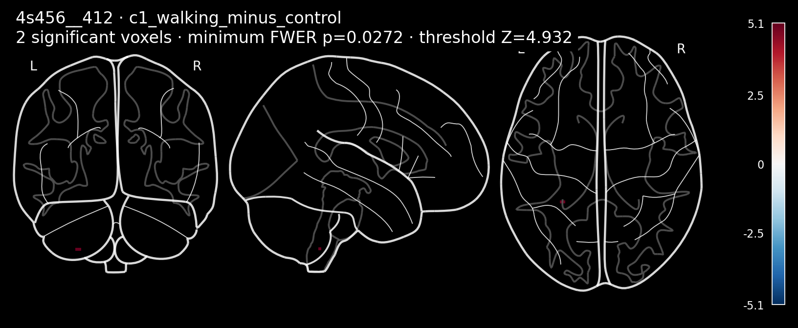
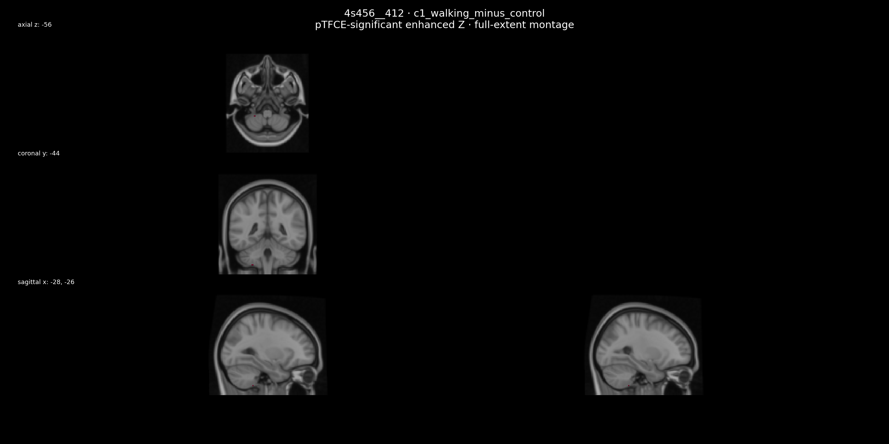
| seed_id | atlas | name | contrast | n_significant | n_clusters | largest_cluster_voxels | peak_x_mm | peak_y_mm | peak_z_mm | min_fwer_p | max_enhanced_z | threshold_fwer0.05_Z | resel_count | tfce_significant_voxels | tfce_overlap_voxels | tfce_recovery |
|---|---|---|---|---|---|---|---|---|---|---|---|---|---|---|---|---|
| 4s456__412 | 4s456 | LH-HTH | c1_walking_minus_control | 2 | 1 | 2 | -28 | -44 | -56 | 0.02717 | 5.0649 | 4.9317 | 3505.8 | 0 | 0 |
4s456__422 · RH-RN · c1_walking_minus_control

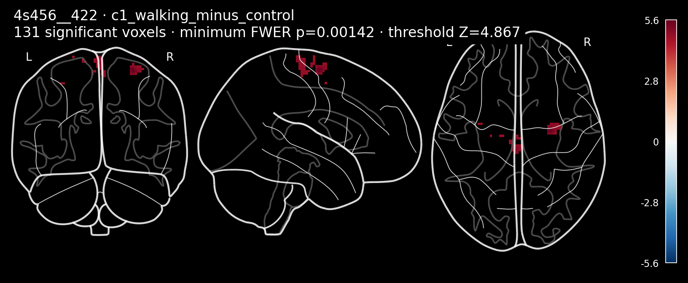
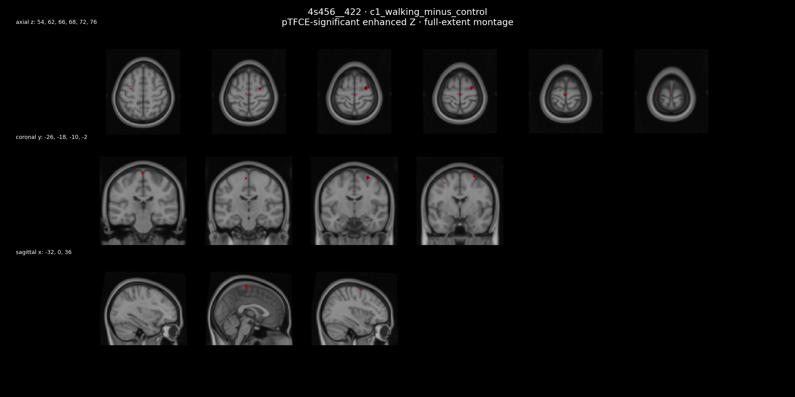
| seed_id | atlas | name | contrast | n_significant | n_clusters | largest_cluster_voxels | peak_x_mm | peak_y_mm | peak_z_mm | min_fwer_p | max_enhanced_z | threshold_fwer0.05_Z | resel_count | tfce_significant_voxels | tfce_overlap_voxels | tfce_recovery |
|---|---|---|---|---|---|---|---|---|---|---|---|---|---|---|---|---|
| 4s456__422 | 4s456 | RH-RN | c1_walking_minus_control | 131 | 7 | 64 | 28 | -8 | 64 | 0.0014236 | 5.6029 | 4.8674 | 2626.5 | 76 | 76 | 1 |
brainnetome246__226 · vmPu_R · c2_control_minus_walking

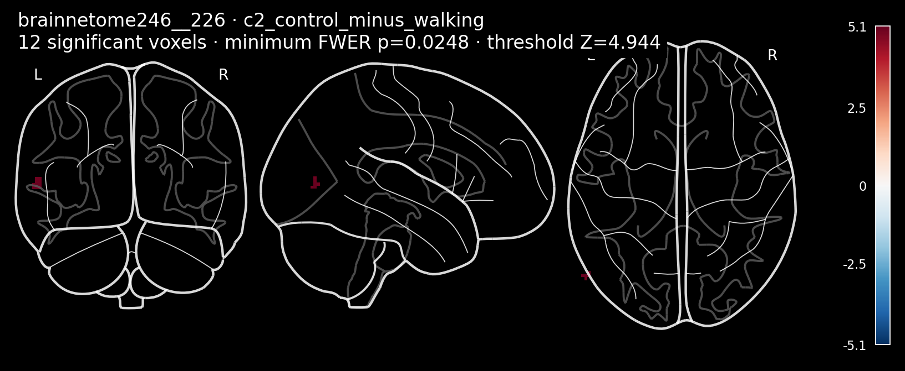
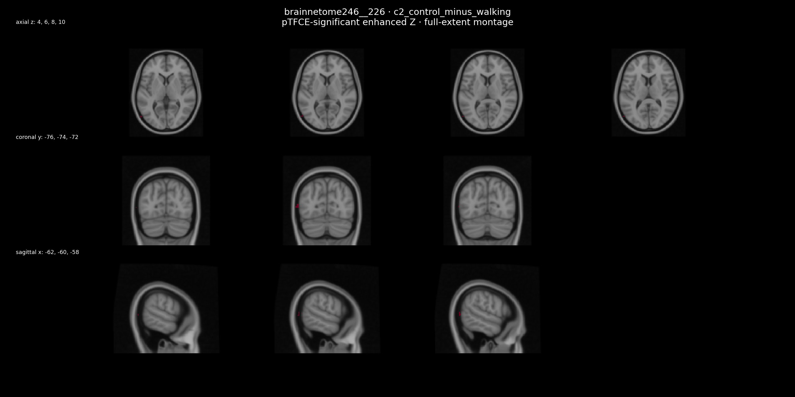
| seed_id | atlas | name | contrast | n_significant | n_clusters | largest_cluster_voxels | peak_x_mm | peak_y_mm | peak_z_mm | min_fwer_p | max_enhanced_z | threshold_fwer0.05_Z | resel_count | tfce_significant_voxels | tfce_overlap_voxels | tfce_recovery |
|---|---|---|---|---|---|---|---|---|---|---|---|---|---|---|---|---|
| brainnetome246__226 | brainnetome246 | vmPu_R | c2_control_minus_walking | 12 | 1 | 12 | -60 | -74 | 4 | 0.024849 | 5.0948 | 4.9436 | 3687.4 | 0 | 0 |
glasser360__281 · Left_OP1 · c2_control_minus_walking
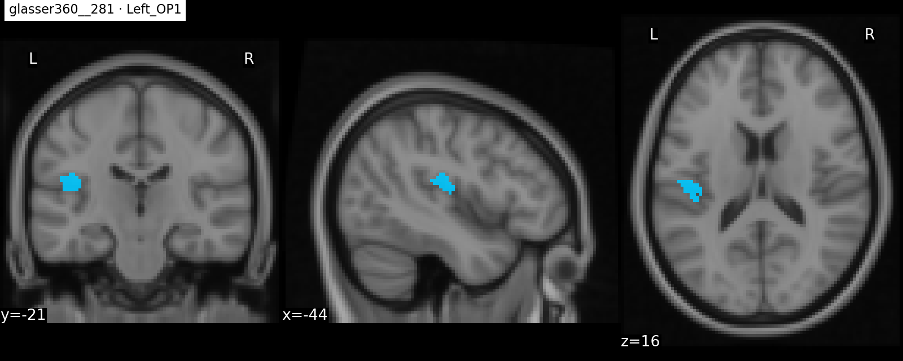
| seed_id | atlas | name | contrast | n_significant | n_clusters | largest_cluster_voxels | peak_x_mm | peak_y_mm | peak_z_mm | min_fwer_p | max_enhanced_z | threshold_fwer0.05_Z | resel_count | tfce_significant_voxels | tfce_overlap_voxels | tfce_recovery |
|---|---|---|---|---|---|---|---|---|---|---|---|---|---|---|---|---|
| glasser360__281 | glasser360 | Left_OP1 | c2_control_minus_walking | 1 | 1 | 1 | -20 | -48 | -38 | 0.046377 | 4.9277 | 4.9107 | 3192.8 | 0 | 0 |
glasser360__285 · Left_PFcm · c2_control_minus_walking
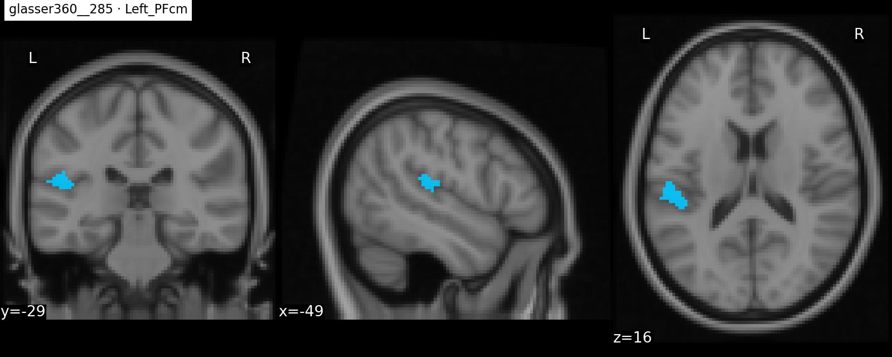
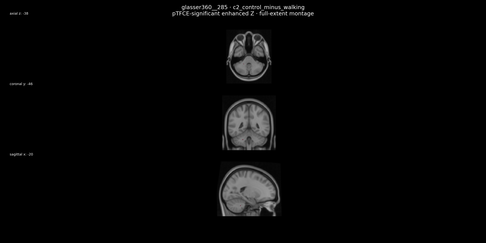
| seed_id | atlas | name | contrast | n_significant | n_clusters | largest_cluster_voxels | peak_x_mm | peak_y_mm | peak_z_mm | min_fwer_p | max_enhanced_z | threshold_fwer0.05_Z | resel_count | tfce_significant_voxels | tfce_overlap_voxels | tfce_recovery |
|---|---|---|---|---|---|---|---|---|---|---|---|---|---|---|---|---|
| glasser360__285 | glasser360 | Left_PFcm | c2_control_minus_walking | 1 | 1 | 1 | -20 | -46 | -38 | 0.038641 | 5.0483 | 4.993 | 4616.8 | 0 | 0 |
gordon333__033 · L_SMhand_5 · c1_walking_minus_control

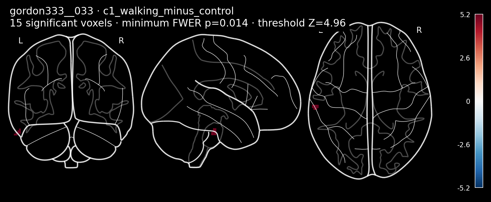
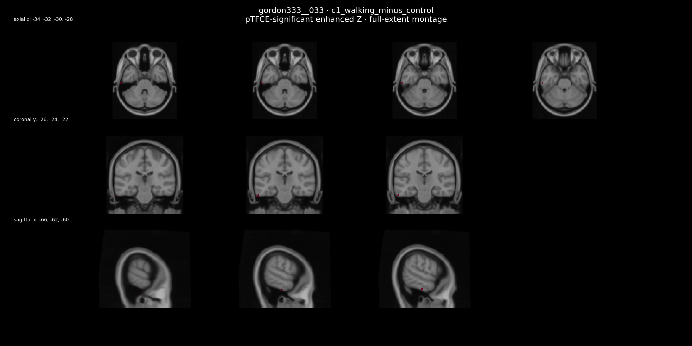
| seed_id | atlas | name | contrast | n_significant | n_clusters | largest_cluster_voxels | peak_x_mm | peak_y_mm | peak_z_mm | min_fwer_p | max_enhanced_z | threshold_fwer0.05_Z | resel_count | tfce_significant_voxels | tfce_overlap_voxels | tfce_recovery |
|---|---|---|---|---|---|---|---|---|---|---|---|---|---|---|---|---|
| gordon333__033 | gordon333 | L_SMhand_5 | c1_walking_minus_control | 15 | 1 | 15 | -62 | -24 | -32 | 0.013963 | 5.2316 | 4.9601 | 3972.8 | 0 | 0 |
longevity442__010 · NAc-core-rh · c2_control_minus_walking

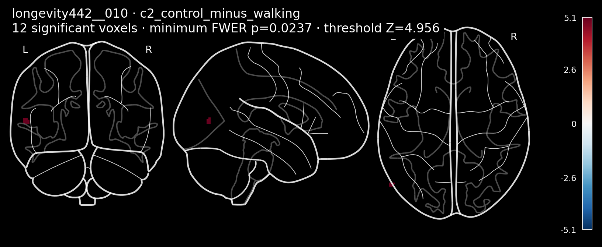
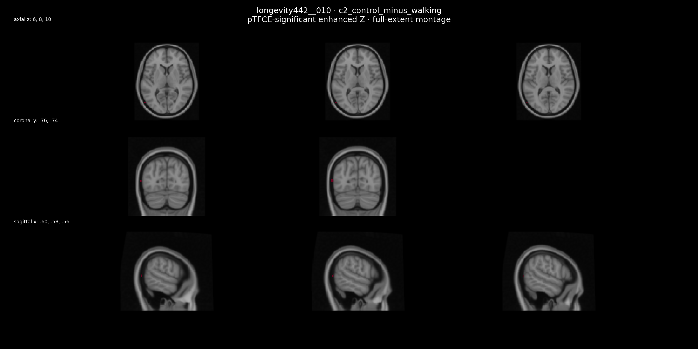
| seed_id | atlas | name | contrast | n_significant | n_clusters | largest_cluster_voxels | peak_x_mm | peak_y_mm | peak_z_mm | min_fwer_p | max_enhanced_z | threshold_fwer0.05_Z | resel_count | tfce_significant_voxels | tfce_overlap_voxels | tfce_recovery |
|---|---|---|---|---|---|---|---|---|---|---|---|---|---|---|---|---|
| longevity442__010 | longevity442 | NAc-core-rh | c2_control_minus_walking | 12 | 1 | 12 | -58 | -74 | 6 | 0.023746 | 5.1159 | 4.9556 | 3891 | 0 | 0 |
longevity442__013 · aPUT-rh · c2_control_minus_walking

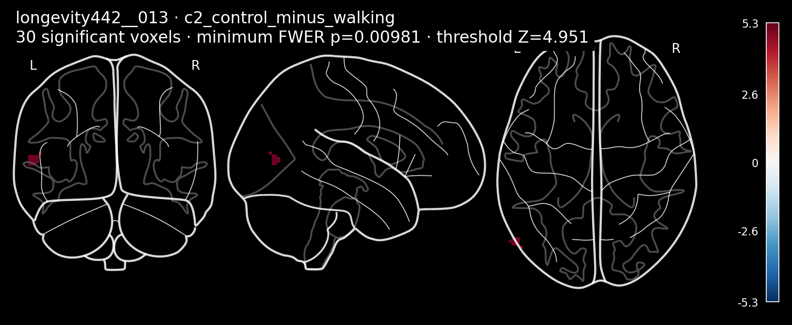
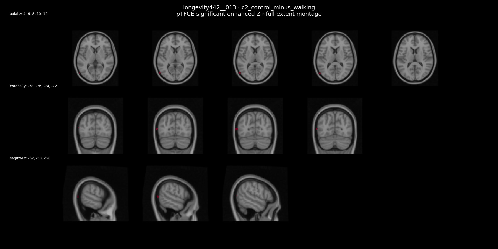
| seed_id | atlas | name | contrast | n_significant | n_clusters | largest_cluster_voxels | peak_x_mm | peak_y_mm | peak_z_mm | min_fwer_p | max_enhanced_z | threshold_fwer0.05_Z | resel_count | tfce_significant_voxels | tfce_overlap_voxels | tfce_recovery |
|---|---|---|---|---|---|---|---|---|---|---|---|---|---|---|---|---|
| longevity442__013 | longevity442 | aPUT-rh | c2_control_minus_walking | 30 | 1 | 30 | -60 | -74 | 6 | 0.0098092 | 5.2969 | 4.9511 | 3836 | 0 | 0 |
longevity442__017 · aHIP-lh · c1_walking_minus_control

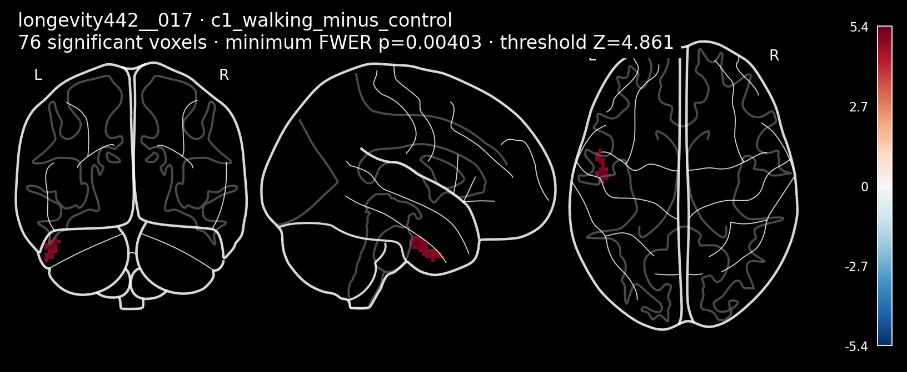
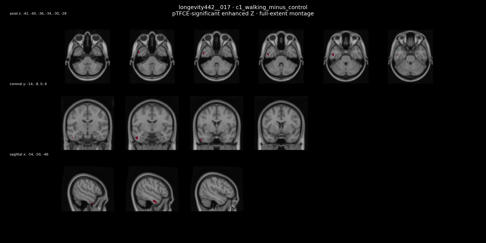
| seed_id | atlas | name | contrast | n_significant | n_clusters | largest_cluster_voxels | peak_x_mm | peak_y_mm | peak_z_mm | min_fwer_p | max_enhanced_z | threshold_fwer0.05_Z | resel_count | tfce_significant_voxels | tfce_overlap_voxels | tfce_recovery |
|---|---|---|---|---|---|---|---|---|---|---|---|---|---|---|---|---|
| longevity442__017 | longevity442 | aHIP-lh | c1_walking_minus_control | 76 | 1 | 76 | -48 | -10 | -30 | 0.0040318 | 5.3951 | 4.8614 | 2565.7 | 45 | 45 | 1 |
All 1,224 pTFCE contrast summaries
| seed_id | atlas | name | system | contrast | n_significant | min_fwer_p | max_enhanced_z | threshold_fwer0.05_Z | resel_count | n_subjects | n_walking | n_control | df | method_version | ptfce_version | r_seconds | wall_seconds |
|---|---|---|---|---|---|---|---|---|---|---|---|---|---|---|---|---|---|
| 4s456__032 | 4s456 | LH_SomMot_1 | cortex | c1_walking_minus_control | 0 | 1 | 3.2946 | 5.0079 | 4951.5 | 45 | 19 | 26 | 43 | 1.0.0 | 0.2.2.1 | 62.303 | 62.7 |
| 4s456__032 | 4s456 | LH_SomMot_1 | cortex | c2_control_minus_walking | 0 | 1 | 3.6062 | 5.0079 | 4951.5 | 45 | 19 | 26 | 43 | 1.0.0 | 0.2.2.1 | 52.668 | 52.924 |
| 4s456__033 | 4s456 | LH_SomMot_2 | cortex | c1_walking_minus_control | 0 | 1 | 3.9511 | 4.99 | 4576.1 | 45 | 19 | 26 | 43 | 1.0.0 | 0.2.2.1 | 49.423 | 49.744 |
| 4s456__033 | 4s456 | LH_SomMot_2 | cortex | c2_control_minus_walking | 0 | 0.33947 | 4.5481 | 4.99 | 4576.1 | 45 | 19 | 26 | 43 | 1.0.0 | 0.2.2.1 | 48.986 | 49.203 |
| 4s456__034 | 4s456 | LH_SomMot_3 | cortex | c1_walking_minus_control | 0 | 1 | 2.906 | 4.9317 | 3499.4 | 45 | 19 | 26 | 43 | 1.0.0 | 0.2.2.1 | 63.897 | 64.216 |
| 4s456__034 | 4s456 | LH_SomMot_3 | cortex | c2_control_minus_walking | 0 | 0.24357 | 4.5637 | 4.9317 | 3499.4 | 45 | 19 | 26 | 43 | 1.0.0 | 0.2.2.1 | 56.652 | 56.964 |
| 4s456__035 | 4s456 | LH_SomMot_4 | cortex | c1_walking_minus_control | 0 | 1 | 2.8005 | 4.972 | 4197.8 | 45 | 19 | 26 | 43 | 1.0.0 | 0.2.2.1 | 62.071 | 62.467 |
| 4s456__035 | 4s456 | LH_SomMot_4 | cortex | c2_control_minus_walking | 0 | 1 | 3.4228 | 4.972 | 4197.8 | 45 | 19 | 26 | 43 | 1.0.0 | 0.2.2.1 | 64.655 | 65.045 |
| 4s456__036 | 4s456 | LH_SomMot_5 | cortex | c1_walking_minus_control | 0 | 1 | 3.3763 | 4.9496 | 3789.5 | 45 | 19 | 26 | 43 | 1.0.0 | 0.2.2.1 | 60.022 | 60.512 |
| 4s456__036 | 4s456 | LH_SomMot_5 | cortex | c2_control_minus_walking | 0 | 1 | 4.0017 | 4.9496 | 3789.5 | 45 | 19 | 26 | 43 | 1.0.0 | 0.2.2.1 | 61.809 | 62.055 |
| 4s456__037 | 4s456 | LH_SomMot_6 | cortex | c1_walking_minus_control | 0 | 1 | 4.0268 | 4.9466 | 3748.2 | 45 | 19 | 26 | 43 | 1.0.0 | 0.2.2.1 | 61.447 | 62.024 |
| 4s456__037 | 4s456 | LH_SomMot_6 | cortex | c2_control_minus_walking | 0 | 1 | 3.9062 | 4.9466 | 3748.2 | 45 | 19 | 26 | 43 | 1.0.0 | 0.2.2.1 | 54.16 | 54.477 |
| 4s456__038 | 4s456 | LH_SomMot_7 | cortex | c1_walking_minus_control | 0 | 1 | 3.6718 | 4.978 | 4329.4 | 45 | 19 | 26 | 43 | 1.0.0 | 0.2.2.1 | 54.58 | 55.082 |
| 4s456__038 | 4s456 | LH_SomMot_7 | cortex | c2_control_minus_walking | 0 | 0.36299 | 4.5181 | 4.978 | 4329.4 | 45 | 19 | 26 | 43 | 1.0.0 | 0.2.2.1 | 54.926 | 55.145 |
| 4s456__039 | 4s456 | LH_SomMot_8 | cortex | c1_walking_minus_control | 0 | 1 | 3.3522 | 4.9571 | 3921.5 | 45 | 19 | 26 | 43 | 1.0.0 | 0.2.2.1 | 61.805 | 62.304 |
| 4s456__039 | 4s456 | LH_SomMot_8 | cortex | c2_control_minus_walking | 0 | 1 | 3.586 | 4.9571 | 3921.5 | 45 | 19 | 26 | 43 | 1.0.0 | 0.2.2.1 | 63.661 | 63.892 |
| 4s456__040 | 4s456 | LH_SomMot_9 | cortex | c1_walking_minus_control | 0 | 1 | 3.7049 | 4.978 | 4315.2 | 45 | 19 | 26 | 43 | 1.0.0 | 0.2.2.1 | 62.134 | 62.486 |
| 4s456__040 | 4s456 | LH_SomMot_9 | cortex | c2_control_minus_walking | 0 | 1 | 3.5442 | 4.978 | 4315.2 | 45 | 19 | 26 | 43 | 1.0.0 | 0.2.2.1 | 54.23 | 54.477 |
| 4s456__041 | 4s456 | LH_SomMot_10 | cortex | c1_walking_minus_control | 0 | 1 | 3.0754 | 4.9302 | 3473.6 | 45 | 19 | 26 | 43 | 1.0.0 | 0.2.2.1 | 59.573 | 59.84 |
| 4s456__041 | 4s456 | LH_SomMot_10 | cortex | c2_control_minus_walking | 0 | 0.060892 | 4.8858 | 4.9302 | 3473.6 | 45 | 19 | 26 | 43 | 1.0.0 | 0.2.2.1 | 49.177 | 50.128 |
| 4s456__042 | 4s456 | LH_SomMot_11 | cortex | c1_walking_minus_control | 0 | 0.10424 | 4.7796 | 4.9451 | 3727 | 45 | 19 | 26 | 43 | 1.0.0 | 0.2.2.1 | 49.236 | 49.593 |
| 4s456__042 | 4s456 | LH_SomMot_11 | cortex | c2_control_minus_walking | 0 | 1 | 3.5796 | 4.9451 | 3727 | 45 | 19 | 26 | 43 | 1.0.0 | 0.2.2.1 | 54.339 | 54.644 |
| 4s456__043 | 4s456 | LH_SomMot_12 | cortex | c1_walking_minus_control | 0 | 1 | 3.1193 | 4.9556 | 3891.9 | 45 | 19 | 26 | 43 | 1.0.0 | 0.2.2.1 | 64.605 | 64.909 |
| 4s456__043 | 4s456 | LH_SomMot_12 | cortex | c2_control_minus_walking | 0 | 1 | 3.7616 | 4.9556 | 3891.9 | 45 | 19 | 26 | 43 | 1.0.0 | 0.2.2.1 | 56.884 | 57.11 |
| 4s456__044 | 4s456 | LH_SomMot_13 | cortex | c1_walking_minus_control | 0 | 1 | 2.8418 | 4.9436 | 3688.4 | 45 | 19 | 26 | 43 | 1.0.0 | 0.2.2.1 | 67.169 | 67.47 |
| 4s456__044 | 4s456 | LH_SomMot_13 | cortex | c2_control_minus_walking | 0 | 1 | 4.0949 | 4.9436 | 3688.4 | 45 | 19 | 26 | 43 | 1.0.0 | 0.2.2.1 | 55.048 | 55.289 |
| 4s456__045 | 4s456 | LH_SomMot_14 | cortex | c1_walking_minus_control | 0 | 1 | 3.2886 | 4.9571 | 3920.4 | 45 | 19 | 26 | 43 | 1.0.0 | 0.2.2.1 | 64.71 | 65.021 |
| 4s456__045 | 4s456 | LH_SomMot_14 | cortex | c2_control_minus_walking | 0 | 1 | 3.8361 | 4.9571 | 3920.4 | 45 | 19 | 26 | 43 | 1.0.0 | 0.2.2.1 | 57.331 | 57.565 |
| 4s456__046 | 4s456 | LH_SomMot_15 | cortex | c1_walking_minus_control | 0 | 1 | 3.5691 | 4.9272 | 3443.6 | 45 | 19 | 26 | 43 | 1.0.0 | 0.2.2.1 | 69.279 | 69.629 |
| 4s456__046 | 4s456 | LH_SomMot_15 | cortex | c2_control_minus_walking | 0 | 1 | 3.5825 | 4.9272 | 3443.6 | 45 | 19 | 26 | 43 | 1.0.0 | 0.2.2.1 | 56.425 | 56.675 |
| 4s456__047 | 4s456 | LH_SomMot_16 | cortex | c1_walking_minus_control | 0 | 1 | 3.5253 | 4.996 | 4692.3 | 45 | 19 | 26 | 43 | 1.0.0 | 0.2.2.1 | 62.58 | 63.675 |
| 4s456__047 | 4s456 | LH_SomMot_16 | cortex | c2_control_minus_walking | 0 | 1 | 3.5739 | 4.996 | 4692.3 | 45 | 19 | 26 | 43 | 1.0.0 | 0.2.2.1 | 54.851 | 55.24 |
| 4s456__048 | 4s456 | LH_SomMot_17 | cortex | c1_walking_minus_control | 0 | 1 | 3.3681 | 4.99 | 4556.4 | 45 | 19 | 26 | 43 | 1.0.0 | 0.2.2.1 | 65.95 | 66.303 |
| 4s456__048 | 4s456 | LH_SomMot_17 | cortex | c2_control_minus_walking | 0 | 1 | 3.5925 | 4.99 | 4556.4 | 45 | 19 | 26 | 43 | 1.0.0 | 0.2.2.1 | 58.199 | 58.432 |
| 4s456__049 | 4s456 | LH_SomMot_18 | cortex | c1_walking_minus_control | 0 | 1 | 3.5497 | 4.9317 | 3515.5 | 45 | 19 | 26 | 43 | 1.0.0 | 0.2.2.1 | 63.697 | 64.066 |
| 4s456__049 | 4s456 | LH_SomMot_18 | cortex | c2_control_minus_walking | 0 | 1 | 3.411 | 4.9317 | 3515.5 | 45 | 19 | 26 | 43 | 1.0.0 | 0.2.2.1 | 64.188 | 64.467 |
| 4s456__050 | 4s456 | LH_SomMot_19 | cortex | c1_walking_minus_control | 0 | 1 | 3.5541 | 4.9242 | 3387.8 | 45 | 19 | 26 | 43 | 1.0.0 | 0.2.2.1 | 68.699 | 69.108 |
| 4s456__050 | 4s456 | LH_SomMot_19 | cortex | c2_control_minus_walking | 0 | 1 | 3.2113 | 4.9242 | 3387.8 | 45 | 19 | 26 | 43 | 1.0.0 | 0.2.2.1 | 57.834 | 58.525 |
| 4s456__051 | 4s456 | LH_SomMot_20 | cortex | c1_walking_minus_control | 0 | 0.87646 | 4.2279 | 4.9242 | 3381.7 | 45 | 19 | 26 | 43 | 1.0.0 | 0.2.2.1 | 53.563 | 53.89 |
| 4s456__051 | 4s456 | LH_SomMot_20 | cortex | c2_control_minus_walking | 0 | 1 | 3.4023 | 4.9242 | 3381.7 | 45 | 19 | 26 | 43 | 1.0.0 | 0.2.2.1 | 59.394 | 59.704 |
| 4s456__052 | 4s456 | LH_SomMot_21 | cortex | c1_walking_minus_control | 0 | 1 | 3.5683 | 4.9212 | 3347.1 | 45 | 19 | 26 | 43 | 1.0.0 | 0.2.2.1 | 63.468 | 63.85 |
| 4s456__052 | 4s456 | LH_SomMot_21 | cortex | c2_control_minus_walking | 0 | 1 | 3.334 | 4.9212 | 3347.1 | 45 | 19 | 26 | 43 | 1.0.0 | 0.2.2.1 | 63.083 | 63.53 |
| 4s456__053 | 4s456 | LH_SomMot_22 | cortex | c1_walking_minus_control | 0 | 0.80265 | 4.2357 | 4.9107 | 3187.6 | 45 | 19 | 26 | 43 | 1.0.0 | 0.2.2.1 | 57.166 | 57.551 |
| 4s456__053 | 4s456 | LH_SomMot_22 | cortex | c2_control_minus_walking | 0 | 1 | 3.6202 | 4.9107 | 3187.6 | 45 | 19 | 26 | 43 | 1.0.0 | 0.2.2.1 | 62.966 | 63.231 |
| 4s456__054 | 4s456 | LH_SomMot_23 | cortex | c1_walking_minus_control | 0 | 1 | 3.1829 | 4.9885 | 4531 | 45 | 19 | 26 | 43 | 1.0.0 | 0.2.2.1 | 65.676 | 66.09 |
| 4s456__054 | 4s456 | LH_SomMot_23 | cortex | c2_control_minus_walking | 0 | 1 | 3.6483 | 4.9885 | 4531 | 45 | 19 | 26 | 43 | 1.0.0 | 0.2.2.1 | 61.701 | 62.007 |
| 4s456__055 | 4s456 | LH_SomMot_24 | cortex | c1_walking_minus_control | 0 | 1 | 3.7504 | 4.9451 | 3723.6 | 45 | 19 | 26 | 43 | 1.0.0 | 0.2.2.1 | 57.961 | 58.321 |
| 4s456__055 | 4s456 | LH_SomMot_24 | cortex | c2_control_minus_walking | 0 | 1 | 3.4566 | 4.9451 | 3723.6 | 45 | 19 | 26 | 43 | 1.0.0 | 0.2.2.1 | 64.849 | 65.112 |
| 4s456__056 | 4s456 | LH_SomMot_25 | cortex | c1_walking_minus_control | 0 | 1 | 3.7087 | 4.9167 | 3284.8 | 45 | 19 | 26 | 43 | 1.0.0 | 0.2.2.1 | 68.234 | 68.569 |
| 4s456__056 | 4s456 | LH_SomMot_25 | cortex | c2_control_minus_walking | 0 | 1 | 3.3078 | 4.9167 | 3284.8 | 45 | 19 | 26 | 43 | 1.0.0 | 0.2.2.1 | 59.33 | 59.566 |
| 4s456__057 | 4s456 | LH_SomMot_26 | cortex | c1_walking_minus_control | 0 | 1 | 3.8474 | 4.8943 | 2965.4 | 45 | 19 | 26 | 43 | 1.0.0 | 0.2.2.1 | 63.929 | 64.238 |
| 4s456__057 | 4s456 | LH_SomMot_26 | cortex | c2_control_minus_walking | 0 | 1 | 3.443 | 4.8943 | 2965.4 | 45 | 19 | 26 | 43 | 1.0.0 | 0.2.2.1 | 60.469 | 60.798 |
| 4s456__058 | 4s456 | LH_SomMot_27 | cortex | c1_walking_minus_control | 0 | 1 | 3.9125 | 4.9541 | 3889.7 | 45 | 19 | 26 | 43 | 1.0.0 | 0.2.2.1 | 60.358 | 60.682 |
| 4s456__058 | 4s456 | LH_SomMot_27 | cortex | c2_control_minus_walking | 0 | 1 | 3.7606 | 4.9541 | 3889.7 | 45 | 19 | 26 | 43 | 1.0.0 | 0.2.2.1 | 61.198 | 61.501 |
| 4s456__059 | 4s456 | LH_SomMot_28 | cortex | c1_walking_minus_control | 0 | 0.4196 | 4.4294 | 4.9317 | 3508.8 | 45 | 19 | 26 | 43 | 1.0.0 | 0.2.2.1 | 54.653 | 55.005 |
| 4s456__059 | 4s456 | LH_SomMot_28 | cortex | c2_control_minus_walking | 0 | 1 | 4.1587 | 4.9317 | 3508.8 | 45 | 19 | 26 | 43 | 1.0.0 | 0.2.2.1 | 58.394 | 58.745 |
| 4s456__060 | 4s456 | LH_SomMot_29 | cortex | c1_walking_minus_control | 0 | 1 | 3.635 | 4.9586 | 3944.8 | 45 | 19 | 26 | 43 | 1.0.0 | 0.2.2.1 | 62.315 | 62.631 |
| 4s456__060 | 4s456 | LH_SomMot_29 | cortex | c2_control_minus_walking | 0 | 1 | 4.2135 | 4.9586 | 3944.8 | 45 | 19 | 26 | 43 | 1.0.0 | 0.2.2.1 | 49.098 | 49.391 |
| 4s456__061 | 4s456 | LH_SomMot_30 | cortex | c1_walking_minus_control | 0 | 1 | 4.1464 | 4.9346 | 3543.6 | 45 | 19 | 26 | 43 | 1.0.0 | 0.2.2.1 | 56.748 | 57.076 |
| 4s456__061 | 4s456 | LH_SomMot_30 | cortex | c2_control_minus_walking | 0 | 1 | 3.5592 | 4.9346 | 3543.6 | 45 | 19 | 26 | 43 | 1.0.0 | 0.2.2.1 | 57.985 | 58.234 |
| 4s456__062 | 4s456 | LH_SomMot_31 | cortex | c1_walking_minus_control | 0 | 1 | 3.0954 | 5.0034 | 4872.2 | 45 | 19 | 26 | 43 | 1.0.0 | 0.2.2.1 | 64.929 | 65.28 |
| 4s456__062 | 4s456 | LH_SomMot_31 | cortex | c2_control_minus_walking | 0 | 1 | 3.4956 | 5.0034 | 4872.2 | 45 | 19 | 26 | 43 | 1.0.0 | 0.2.2.1 | 62.102 | 62.422 |
| 4s456__063 | 4s456 | LH_SomMot_32 | cortex | c1_walking_minus_control | 0 | 1 | 3.6832 | 4.9675 | 4114.7 | 45 | 19 | 26 | 43 | 1.0.0 | 0.2.2.1 | 61.307 | 61.653 |
| 4s456__063 | 4s456 | LH_SomMot_32 | cortex | c2_control_minus_walking | 0 | 1 | 4.0857 | 4.9675 | 4114.7 | 45 | 19 | 26 | 43 | 1.0.0 | 0.2.2.1 | 49.898 | 50.144 |
| 4s456__064 | 4s456 | LH_SomMot_33 | cortex | c1_walking_minus_control | 0 | 0.93043 | 4.261 | 4.9646 | 4062.5 | 45 | 19 | 26 | 43 | 1.0.0 | 0.2.2.1 | 52.539 | 52.887 |
| 4s456__064 | 4s456 | LH_SomMot_33 | cortex | c2_control_minus_walking | 0 | 1 | 3.0476 | 4.9646 | 4062.5 | 45 | 19 | 26 | 43 | 1.0.0 | 0.2.2.1 | 58.151 | 58.482 |
| 4s456__065 | 4s456 | LH_SomMot_34 | cortex | c1_walking_minus_control | 0 | 1 | 3.1936 | 4.9855 | 4460 | 45 | 19 | 26 | 43 | 1.0.0 | 0.2.2.1 | 59.718 | 60.033 |
| 4s456__065 | 4s456 | LH_SomMot_34 | cortex | c2_control_minus_walking | 0 | 1 | 3.4308 | 4.9855 | 4460 | 45 | 19 | 26 | 43 | 1.0.0 | 0.2.2.1 | 57.204 | 57.422 |
| 4s456__066 | 4s456 | LH_SomMot_35 | cortex | c1_walking_minus_control | 0 | 1 | 3.7989 | 4.969 | 4154.2 | 45 | 19 | 26 | 43 | 1.0.0 | 0.2.2.1 | 49.065 | 49.391 |
| 4s456__066 | 4s456 | LH_SomMot_35 | cortex | c2_control_minus_walking | 0 | 0.46474 | 4.4462 | 4.969 | 4154.2 | 45 | 19 | 26 | 43 | 1.0.0 | 0.2.2.1 | 51.778 | 52.003 |
| 4s456__067 | 4s456 | LH_SomMot_36 | cortex | c1_walking_minus_control | 0 | 1 | 3.2918 | 4.9616 | 3998.1 | 45 | 19 | 26 | 43 | 1.0.0 | 0.2.2.1 | 58.004 | 58.313 |
| 4s456__067 | 4s456 | LH_SomMot_36 | cortex | c2_control_minus_walking | 0 | 1 | 4.0953 | 4.9616 | 3998.1 | 45 | 19 | 26 | 43 | 1.0.0 | 0.2.2.1 | 52.396 | 53.037 |
| 4s456__068 | 4s456 | LH_SomMot_37 | cortex | c1_walking_minus_control | 0 | 1 | 4.2182 | 4.972 | 4196.6 | 45 | 19 | 26 | 43 | 1.0.0 | 0.2.2.1 | 56.095 | 56.444 |
| 4s456__068 | 4s456 | LH_SomMot_37 | cortex | c2_control_minus_walking | 0 | 1 | 3.29 | 4.972 | 4196.6 | 45 | 19 | 26 | 43 | 1.0.0 | 0.2.2.1 | 63.011 | 63.578 |
| 4s456__231 | 4s456 | RH_SomMot_1 | cortex | c1_walking_minus_control | 0 | 1 | 3.6602 | 4.9541 | 3886 | 45 | 19 | 26 | 43 | 1.0.0 | 0.2.2.1 | 64.645 | 64.967 |
| 4s456__231 | 4s456 | RH_SomMot_1 | cortex | c2_control_minus_walking | 0 | 1 | 3.3702 | 4.9541 | 3886 | 45 | 19 | 26 | 43 | 1.0.0 | 0.2.2.1 | 60.683 | 60.938 |
| 4s456__232 | 4s456 | RH_SomMot_2 | cortex | c1_walking_minus_control | 0 | 1 | 3.6963 | 4.9212 | 3344.9 | 45 | 19 | 26 | 43 | 1.0.0 | 0.2.2.1 | 63.087 | 63.402 |
| 4s456__232 | 4s456 | RH_SomMot_2 | cortex | c2_control_minus_walking | 0 | 1 | 3.4506 | 4.9212 | 3344.9 | 45 | 19 | 26 | 43 | 1.0.0 | 0.2.2.1 | 62.369 | 62.648 |
| 4s456__233 | 4s456 | RH_SomMot_3 | cortex | c1_walking_minus_control | 0 | 1 | 3.4685 | 4.9989 | 4745.8 | 45 | 19 | 26 | 43 | 1.0.0 | 0.2.2.1 | 63.417 | 63.766 |
| 4s456__233 | 4s456 | RH_SomMot_3 | cortex | c2_control_minus_walking | 0 | 1 | 3.4412 | 4.9989 | 4745.8 | 45 | 19 | 26 | 43 | 1.0.0 | 0.2.2.1 | 62.955 | 63.266 |
| 4s456__234 | 4s456 | RH_SomMot_4 | cortex | c1_walking_minus_control | 0 | 1 | 3.6709 | 4.9735 | 4239.5 | 45 | 19 | 26 | 43 | 1.0.0 | 0.2.2.1 | 59.99 | 60.333 |
| 4s456__234 | 4s456 | RH_SomMot_4 | cortex | c2_control_minus_walking | 0 | 1 | 3.5787 | 4.9735 | 4239.5 | 45 | 19 | 26 | 43 | 1.0.0 | 0.2.2.1 | 66.759 | 67.059 |
| 4s456__235 | 4s456 | RH_SomMot_5 | cortex | c1_walking_minus_control | 0 | 1 | 3.9661 | 4.9601 | 3977.3 | 45 | 19 | 26 | 43 | 1.0.0 | 0.2.2.1 | 51.72 | 52.12 |
| 4s456__235 | 4s456 | RH_SomMot_5 | cortex | c2_control_minus_walking | 0 | 1 | 4.0374 | 4.9601 | 3977.3 | 45 | 19 | 26 | 43 | 1.0.0 | 0.2.2.1 | 59.775 | 60.15 |
| 4s456__236 | 4s456 | RH_SomMot_6 | cortex | c1_walking_minus_control | 0 | 1 | 3.9731 | 4.9077 | 3147.2 | 45 | 19 | 26 | 43 | 1.0.0 | 0.2.2.1 | 54.008 | 54.317 |
| 4s456__236 | 4s456 | RH_SomMot_6 | cortex | c2_control_minus_walking | 0 | 1 | 4.1058 | 4.9077 | 3147.2 | 45 | 19 | 26 | 43 | 1.0.0 | 0.2.2.1 | 64.957 | 65.194 |
| 4s456__237 | 4s456 | RH_SomMot_7 | cortex | c1_walking_minus_control | 0 | 1 | 3.0631 | 4.978 | 4317.4 | 45 | 19 | 26 | 43 | 1.0.0 | 0.2.2.1 | 65.839 | 66.167 |
| 4s456__237 | 4s456 | RH_SomMot_7 | cortex | c2_control_minus_walking | 0 | 1 | 4.0408 | 4.978 | 4317.4 | 45 | 19 | 26 | 43 | 1.0.0 | 0.2.2.1 | 61.141 | 61.38 |
| 4s456__238 | 4s456 | RH_SomMot_8 | cortex | c1_walking_minus_control | 0 | 0.34168 | 4.4861 | 4.9361 | 3582.7 | 45 | 19 | 26 | 43 | 1.0.0 | 0.2.2.1 | 57.987 | 58.309 |
| 4s456__238 | 4s456 | RH_SomMot_8 | cortex | c2_control_minus_walking | 0 | 1 | 3.6653 | 4.9361 | 3582.7 | 45 | 19 | 26 | 43 | 1.0.0 | 0.2.2.1 | 64.767 | 65.032 |
| 4s456__239 | 4s456 | RH_SomMot_9 | cortex | c1_walking_minus_control | 0 | 1 | 3.8193 | 4.9989 | 4773.3 | 45 | 19 | 26 | 43 | 1.0.0 | 0.2.2.1 | 57.795 | 58.211 |
| 4s456__239 | 4s456 | RH_SomMot_9 | cortex | c2_control_minus_walking | 0 | 1 | 4.1797 | 4.9989 | 4773.3 | 45 | 19 | 26 | 43 | 1.0.0 | 0.2.2.1 | 53.396 | 53.658 |
| 4s456__240 | 4s456 | RH_SomMot_10 | cortex | c1_walking_minus_control | 0 | 1 | 3.7921 | 4.9885 | 4544.5 | 45 | 19 | 26 | 43 | 1.0.0 | 0.2.2.1 | 55.177 | 55.444 |
| 4s456__240 | 4s456 | RH_SomMot_10 | cortex | c2_control_minus_walking | 0 | 1 | 3.441 | 4.9885 | 4544.5 | 45 | 19 | 26 | 43 | 1.0.0 | 0.2.2.1 | 64.239 | 64.467 |
| 4s456__241 | 4s456 | RH_SomMot_11 | cortex | c1_walking_minus_control | 0 | 1 | 4.0718 | 4.9571 | 3936.3 | 45 | 19 | 26 | 43 | 1.0.0 | 0.2.2.1 | 58.595 | 58.928 |
| 4s456__241 | 4s456 | RH_SomMot_11 | cortex | c2_control_minus_walking | 0 | 1 | 3.46 | 4.9571 | 3936.3 | 45 | 19 | 26 | 43 | 1.0.0 | 0.2.2.1 | 60.747 | 63.545 |
| 4s456__242 | 4s456 | RH_SomMot_12 | cortex | c1_walking_minus_control | 0 | 1 | 3.8105 | 4.9765 | 4294.9 | 45 | 19 | 26 | 43 | 1.0.0 | 0.2.2.1 | 67.82 | 68.149 |
| 4s456__242 | 4s456 | RH_SomMot_12 | cortex | c2_control_minus_walking | 0 | 1 | 3.1792 | 4.9765 | 4294.9 | 45 | 19 | 26 | 43 | 1.0.0 | 0.2.2.1 | 65.595 | 65.851 |
| 4s456__243 | 4s456 | RH_SomMot_13 | cortex | c1_walking_minus_control | 0 | 1 | 3.4842 | 4.9601 | 3984.2 | 45 | 19 | 26 | 43 | 1.0.0 | 0.2.2.1 | 62.987 | 63.34 |
| 4s456__243 | 4s456 | RH_SomMot_13 | cortex | c2_control_minus_walking | 0 | 0.50255 | 4.4158 | 4.9601 | 3984.2 | 45 | 19 | 26 | 43 | 1.0.0 | 0.2.2.1 | 58.83 | 59.09 |
| 4s456__244 | 4s456 | RH_SomMot_14 | cortex | c1_walking_minus_control | 0 | 1 | 3.5473 | 4.9631 | 4050.4 | 45 | 19 | 26 | 43 | 1.0.0 | 0.2.2.1 | 60.926 | 66.543 |
| 4s456__244 | 4s456 | RH_SomMot_14 | cortex | c2_control_minus_walking | 0 | 1 | 3.4996 | 4.9631 | 4050.4 | 45 | 19 | 26 | 43 | 1.0.0 | 0.2.2.1 | 61.375 | 61.707 |
| 4s456__245 | 4s456 | RH_SomMot_15 | cortex | c1_walking_minus_control | 0 | 1 | 3.1416 | 4.975 | 4267 | 45 | 19 | 26 | 43 | 1.0.0 | 0.2.2.1 | 63.653 | 64.014 |
| 4s456__245 | 4s456 | RH_SomMot_15 | cortex | c2_control_minus_walking | 0 | 1 | 3.5417 | 4.975 | 4267 | 45 | 19 | 26 | 43 | 1.0.0 | 0.2.2.1 | 61.498 | 62.062 |
| 4s456__246 | 4s456 | RH_SomMot_16 | cortex | c1_walking_minus_control | 0 | 1 | 3.2853 | 4.9526 | 3849.9 | 45 | 19 | 26 | 43 | 1.0.0 | 0.2.2.1 | 58.079 | 58.346 |
| 4s456__246 | 4s456 | RH_SomMot_16 | cortex | c2_control_minus_walking | 0 | 1 | 3.678 | 4.9526 | 3849.9 | 45 | 19 | 26 | 43 | 1.0.0 | 0.2.2.1 | 54.883 | 55.108 |
| 4s456__247 | 4s456 | RH_SomMot_17 | cortex | c1_walking_minus_control | 0 | 1 | 3.6129 | 4.9302 | 3479.3 | 45 | 19 | 26 | 43 | 1.0.0 | 0.2.2.1 | 63.932 | 64.233 |
| 4s456__247 | 4s456 | RH_SomMot_17 | cortex | c2_control_minus_walking | 0 | 1 | 3.6709 | 4.9302 | 3479.3 | 45 | 19 | 26 | 43 | 1.0.0 | 0.2.2.1 | 53.888 | 54.136 |
| 4s456__248 | 4s456 | RH_SomMot_18 | cortex | c1_walking_minus_control | 0 | 1 | 3.2178 | 4.9855 | 4478.8 | 45 | 19 | 26 | 43 | 1.0.0 | 0.2.2.1 | 65.643 | 65.943 |
| 4s456__248 | 4s456 | RH_SomMot_18 | cortex | c2_control_minus_walking | 0 | 1 | 3.1759 | 4.9855 | 4478.8 | 45 | 19 | 26 | 43 | 1.0.0 | 0.2.2.1 | 59.487 | 59.711 |
| 4s456__249 | 4s456 | RH_SomMot_19 | cortex | c1_walking_minus_control | 0 | 1 | 3.5777 | 4.9496 | 3793.5 | 45 | 19 | 26 | 43 | 1.0.0 | 0.2.2.1 | 61.023 | 61.271 |
| 4s456__249 | 4s456 | RH_SomMot_19 | cortex | c2_control_minus_walking | 0 | 1 | 3.4809 | 4.9496 | 3793.5 | 45 | 19 | 26 | 43 | 1.0.0 | 0.2.2.1 | 55.893 | 56.13 |
| 4s456__250 | 4s456 | RH_SomMot_20 | cortex | c1_walking_minus_control | 0 | 1 | 3.0102 | 5.0034 | 4843.4 | 45 | 19 | 26 | 43 | 1.0.0 | 0.2.2.1 | 68.512 | 68.91 |
| 4s456__250 | 4s456 | RH_SomMot_20 | cortex | c2_control_minus_walking | 0 | 1 | 3.5351 | 5.0034 | 4843.4 | 45 | 19 | 26 | 43 | 1.0.0 | 0.2.2.1 | 61.769 | 61.994 |
| 4s456__251 | 4s456 | RH_SomMot_21 | cortex | c1_walking_minus_control | 0 | 1 | 3.7143 | 4.972 | 4221 | 45 | 19 | 26 | 43 | 1.0.0 | 0.2.2.1 | 66.972 | 67.367 |
| 4s456__251 | 4s456 | RH_SomMot_21 | cortex | c2_control_minus_walking | 0 | 1 | 2.9794 | 4.972 | 4221 | 45 | 19 | 26 | 43 | 1.0.0 | 0.2.2.1 | 60.707 | 60.942 |
| 4s456__252 | 4s456 | RH_SomMot_22 | cortex | c1_walking_minus_control | 0 | 1 | 3.7101 | 4.9541 | 3868.5 | 45 | 19 | 26 | 43 | 1.0.0 | 0.2.2.1 | 60.517 | 60.83 |
| 4s456__252 | 4s456 | RH_SomMot_22 | cortex | c2_control_minus_walking | 0 | 1 | 3.1003 | 4.9541 | 3868.5 | 45 | 19 | 26 | 43 | 1.0.0 | 0.2.2.1 | 59.126 | 59.349 |
| 4s456__253 | 4s456 | RH_SomMot_23 | cortex | c1_walking_minus_control | 0 | 1 | 3.6953 | 4.972 | 4201.7 | 45 | 19 | 26 | 43 | 1.0.0 | 0.2.2.1 | 63.479 | 63.896 |
| 4s456__253 | 4s456 | RH_SomMot_23 | cortex | c2_control_minus_walking | 0 | 1 | 3.5005 | 4.972 | 4201.7 | 45 | 19 | 26 | 43 | 1.0.0 | 0.2.2.1 | 56.43 | 56.661 |
| 4s456__254 | 4s456 | RH_SomMot_24 | cortex | c1_walking_minus_control | 0 | 1 | 2.9318 | 4.9646 | 4070.5 | 45 | 19 | 26 | 43 | 1.0.0 | 0.2.2.1 | 64.213 | 64.577 |
| 4s456__254 | 4s456 | RH_SomMot_24 | cortex | c2_control_minus_walking | 0 | 1 | 3.773 | 4.9646 | 4070.5 | 45 | 19 | 26 | 43 | 1.0.0 | 0.2.2.1 | 54.953 | 55.164 |
| 4s456__255 | 4s456 | RH_SomMot_25 | cortex | c1_walking_minus_control | 0 | 0.90342 | 4.2744 | 4.969 | 4150.1 | 45 | 19 | 26 | 43 | 1.0.0 | 0.2.2.1 | 52.371 | 52.796 |
| 4s456__255 | 4s456 | RH_SomMot_25 | cortex | c2_control_minus_walking | 0 | 1 | 3.3884 | 4.969 | 4150.1 | 45 | 19 | 26 | 43 | 1.0.0 | 0.2.2.1 | 55.233 | 55.473 |
| 4s456__256 | 4s456 | RH_SomMot_26 | cortex | c1_walking_minus_control | 0 | 1 | 3.5842 | 4.9616 | 4008.4 | 45 | 19 | 26 | 43 | 1.0.0 | 0.2.2.1 | 63.821 | 64.194 |
| 4s456__256 | 4s456 | RH_SomMot_26 | cortex | c2_control_minus_walking | 0 | 1 | 3.6808 | 4.9616 | 4008.4 | 45 | 19 | 26 | 43 | 1.0.0 | 0.2.2.1 | 52.481 | 52.754 |
| 4s456__257 | 4s456 | RH_SomMot_27 | cortex | c1_walking_minus_control | 0 | 1 | 2.9349 | 4.996 | 4684.6 | 45 | 19 | 26 | 43 | 1.0.0 | 0.2.2.1 | 63.555 | 63.913 |
| 4s456__257 | 4s456 | RH_SomMot_27 | cortex | c2_control_minus_walking | 0 | 1 | 3.4761 | 4.996 | 4684.6 | 45 | 19 | 26 | 43 | 1.0.0 | 0.2.2.1 | 60.786 | 61.021 |
| 4s456__258 | 4s456 | RH_SomMot_28 | cortex | c1_walking_minus_control | 0 | 1 | 3.1934 | 5.0019 | 4826.9 | 45 | 19 | 26 | 43 | 1.0.0 | 0.2.2.1 | 61.846 | 62.141 |
| 4s456__258 | 4s456 | RH_SomMot_28 | cortex | c2_control_minus_walking | 0 | 1 | 3.4876 | 5.0019 | 4826.9 | 45 | 19 | 26 | 43 | 1.0.0 | 0.2.2.1 | 61.107 | 61.411 |
| 4s456__259 | 4s456 | RH_SomMot_29 | cortex | c1_walking_minus_control | 0 | 1 | 3.8217 | 4.99 | 4573 | 45 | 19 | 26 | 43 | 1.0.0 | 0.2.2.1 | 63.902 | 64.263 |
| 4s456__259 | 4s456 | RH_SomMot_29 | cortex | c2_control_minus_walking | 0 | 1 | 3.5673 | 4.99 | 4573 | 45 | 19 | 26 | 43 | 1.0.0 | 0.2.2.1 | 56.965 | 57.241 |
| 4s456__260 | 4s456 | RH_SomMot_30 | cortex | c1_walking_minus_control | 0 | 1 | 3.3719 | 4.978 | 4327.8 | 45 | 19 | 26 | 43 | 1.0.0 | 0.2.2.1 | 62.804 | 63.19 |
| 4s456__260 | 4s456 | RH_SomMot_30 | cortex | c2_control_minus_walking | 0 | 1 | 3.9557 | 4.978 | 4327.8 | 45 | 19 | 26 | 43 | 1.0.0 | 0.2.2.1 | 55.271 | 56.097 |
| 4s456__261 | 4s456 | RH_SomMot_31 | cortex | c1_walking_minus_control | 0 | 1 | 4.0577 | 4.9705 | 4170.9 | 45 | 19 | 26 | 43 | 1.0.0 | 0.2.2.1 | 56.075 | 56.398 |
| 4s456__261 | 4s456 | RH_SomMot_31 | cortex | c2_control_minus_walking | 0 | 1 | 3.4293 | 4.9705 | 4170.9 | 45 | 19 | 26 | 43 | 1.0.0 | 0.2.2.1 | 56.924 | 57.176 |
| 4s456__262 | 4s456 | RH_SomMot_32 | cortex | c1_walking_minus_control | 0 | 1 | 3.1069 | 4.9885 | 4548.7 | 45 | 19 | 26 | 43 | 1.0.0 | 0.2.2.1 | 64.637 | 65.011 |
| 4s456__262 | 4s456 | RH_SomMot_32 | cortex | c2_control_minus_walking | 0 | 1 | 4.066 | 4.9885 | 4548.7 | 45 | 19 | 26 | 43 | 1.0.0 | 0.2.2.1 | 48.329 | 48.591 |
| 4s456__263 | 4s456 | RH_SomMot_33 | cortex | c1_walking_minus_control | 0 | 1 | 3.8704 | 4.9526 | 3860.2 | 45 | 19 | 26 | 43 | 1.0.0 | 0.2.2.1 | 56.59 | 57.015 |
| 4s456__263 | 4s456 | RH_SomMot_33 | cortex | c2_control_minus_walking | 0 | 1 | 3.3339 | 4.9526 | 3860.2 | 45 | 19 | 26 | 43 | 1.0.0 | 0.2.2.1 | 53.606 | 54.413 |
| 4s456__264 | 4s456 | RH_SomMot_34 | cortex | c1_walking_minus_control | 0 | 1 | 3.271 | 4.9855 | 4461 | 45 | 19 | 26 | 43 | 1.0.0 | 0.2.2.1 | 61.563 | 61.918 |
| 4s456__264 | 4s456 | RH_SomMot_34 | cortex | c2_control_minus_walking | 0 | 1 | 3.8627 | 4.9855 | 4461 | 45 | 19 | 26 | 43 | 1.0.0 | 0.2.2.1 | 51.155 | 51.488 |
| 4s456__265 | 4s456 | RH_SomMot_35 | cortex | c1_walking_minus_control | 0 | 1 | 3.3214 | 4.9496 | 3797.2 | 45 | 19 | 26 | 43 | 1.0.0 | 0.2.2.1 | 62.8 | 63.141 |
| 4s456__265 | 4s456 | RH_SomMot_35 | cortex | c2_control_minus_walking | 0 | 1 | 3.7574 | 4.9496 | 3797.2 | 45 | 19 | 26 | 43 | 1.0.0 | 0.2.2.1 | 52.75 | 52.974 |
| 4s456__266 | 4s456 | RH_SomMot_36 | cortex | c1_walking_minus_control | 0 | 1 | 3.5579 | 4.9092 | 3176.9 | 45 | 19 | 26 | 43 | 1.0.0 | 0.2.2.1 | 67.118 | 67.483 |
| 4s456__266 | 4s456 | RH_SomMot_36 | cortex | c2_control_minus_walking | 0 | 1 | 3.9071 | 4.9092 | 3176.9 | 45 | 19 | 26 | 43 | 1.0.0 | 0.2.2.1 | 61.515 | 61.792 |
| 4s456__267 | 4s456 | RH_SomMot_37 | cortex | c1_walking_minus_control | 0 | 1 | 3.939 | 4.9466 | 3760.2 | 45 | 19 | 26 | 43 | 1.0.0 | 0.2.2.1 | 62.102 | 62.41 |
| 4s456__267 | 4s456 | RH_SomMot_37 | cortex | c2_control_minus_walking | 0 | 1 | 3.4343 | 4.9466 | 3760.2 | 45 | 19 | 26 | 43 | 1.0.0 | 0.2.2.1 | 62.639 | 62.866 |
| 4s456__268 | 4s456 | RH_SomMot_38 | cortex | c1_walking_minus_control | 0 | 1 | 4.166 | 4.9795 | 4353.2 | 45 | 19 | 26 | 43 | 1.0.0 | 0.2.2.1 | 54.709 | 55.037 |
| 4s456__268 | 4s456 | RH_SomMot_38 | cortex | c2_control_minus_walking | 0 | 1 | 3.3415 | 4.9795 | 4353.2 | 45 | 19 | 26 | 43 | 1.0.0 | 0.2.2.1 | 59.012 | 59.299 |
| 4s456__269 | 4s456 | RH_SomMot_39 | cortex | c1_walking_minus_control | 0 | 1 | 3.4065 | 4.9705 | 4191.4 | 45 | 19 | 26 | 43 | 1.0.0 | 0.2.2.1 | 63.964 | 64.235 |
| 4s456__269 | 4s456 | RH_SomMot_39 | cortex | c2_control_minus_walking | 0 | 1 | 3.3618 | 4.9705 | 4191.4 | 45 | 19 | 26 | 43 | 1.0.0 | 0.2.2.1 | 59.642 | 59.87 |
| 4s456__270 | 4s456 | RH_SomMot_40 | cortex | c1_walking_minus_control | 0 | 1 | 3.8164 | 4.9601 | 3973.4 | 45 | 19 | 26 | 43 | 1.0.0 | 0.2.2.1 | 59.792 | 60.212 |
| 4s456__270 | 4s456 | RH_SomMot_40 | cortex | c2_control_minus_walking | 0 | 1 | 3.348 | 4.9601 | 3973.4 | 45 | 19 | 26 | 43 | 1.0.0 | 0.2.2.1 | 63.72 | 63.948 |
| 4s456__401 | 4s456 | LH-Pu | subcortex | c1_walking_minus_control | 0 | 1 | 2.7716 | 4.9436 | 3694.2 | 45 | 19 | 26 | 43 | 1.0.0 | 0.2.2.1 | 65.775 | 66.242 |
| 4s456__401 | 4s456 | LH-Pu | subcortex | c2_control_minus_walking | 0 | 1 | 4.1693 | 4.9436 | 3694.2 | 45 | 19 | 26 | 43 | 1.0.0 | 0.2.2.1 | 62.416 | 62.696 |
| 4s456__402 | 4s456 | LH-Ca | subcortex | c1_walking_minus_control | 0 | 0.33065 | 4.5092 | 4.9496 | 3804.9 | 45 | 19 | 26 | 43 | 1.0.0 | 0.2.2.1 | 55.792 | 56.223 |
| 4s456__402 | 4s456 | LH-Ca | subcortex | c2_control_minus_walking | 0 | 1 | 3.444 | 4.9496 | 3804.9 | 45 | 19 | 26 | 43 | 1.0.0 | 0.2.2.1 | 63.224 | 63.455 |
| 4s456__403 | 4s456 | LH-NAC | subcortex | c1_walking_minus_control | 0 | 1 | 3.2124 | 4.9511 | 3823.6 | 45 | 19 | 26 | 43 | 1.0.0 | 0.2.2.1 | 64.197 | 64.636 |
| 4s456__403 | 4s456 | LH-NAC | subcortex | c2_control_minus_walking | 0 | 1 | 4.109 | 4.9511 | 3823.6 | 45 | 19 | 26 | 43 | 1.0.0 | 0.2.2.1 | 62.159 | 63.405 |
| 4s456__404 | 4s456 | LH-EXA | subcortex | c1_walking_minus_control | 0 | 1 | 3.1079 | 4.9346 | 3557.9 | 45 | 19 | 26 | 43 | 1.0.0 | 0.2.2.1 | 64.965 | 65.283 |
| 4s456__404 | 4s456 | LH-EXA | subcortex | c2_control_minus_walking | 0 | 1 | 4.1958 | 4.9346 | 3557.9 | 45 | 19 | 26 | 43 | 1.0.0 | 0.2.2.1 | 61.627 | 61.86 |
| 4s456__405 | 4s456 | LH-GPe | subcortex | c1_walking_minus_control | 0 | 1 | 2.8888 | 4.9541 | 3875.8 | 45 | 19 | 26 | 43 | 1.0.0 | 0.2.2.1 | 65.693 | 66.035 |
| 4s456__405 | 4s456 | LH-GPe | subcortex | c2_control_minus_walking | 0 | 0.16676 | 4.6791 | 4.9541 | 3875.8 | 45 | 19 | 26 | 43 | 1.0.0 | 0.2.2.1 | 53.446 | 53.673 |
| 4s456__406 | 4s456 | LH-GPi | subcortex | c1_walking_minus_control | 0 | 1 | 3.631 | 4.9017 | 3057.5 | 45 | 19 | 26 | 43 | 1.0.0 | 0.2.2.1 | 62.152 | 62.45 |
| 4s456__406 | 4s456 | LH-GPi | subcortex | c2_control_minus_walking | 0 | 0.15365 | 4.6422 | 4.9017 | 3057.5 | 45 | 19 | 26 | 43 | 1.0.0 | 0.2.2.1 | 60.267 | 60.508 |
| 4s456__407 | 4s456 | LH-SNc_PBP_VTA | subcortex | c1_walking_minus_control | 0 | 1 | 4.1078 | 4.9272 | 3440.2 | 45 | 19 | 26 | 43 | 1.0.0 | 0.2.2.1 | 62.862 | 63.154 |
| 4s456__407 | 4s456 | LH-SNc_PBP_VTA | subcortex | c2_control_minus_walking | 0 | 1 | 3.2737 | 4.9272 | 3440.2 | 45 | 19 | 26 | 43 | 1.0.0 | 0.2.2.1 | 58.564 | 58.81 |
| 4s456__408 | 4s456 | LH-RN | subcortex | c1_walking_minus_control | 0 | 1 | 4.1145 | 4.8689 | 2638.4 | 45 | 19 | 26 | 43 | 1.0.0 | 0.2.2.1 | 64.244 | 64.569 |
| 4s456__408 | 4s456 | LH-RN | subcortex | c2_control_minus_walking | 0 | 1 | 3.745 | 4.8689 | 2638.4 | 45 | 19 | 26 | 43 | 1.0.0 | 0.2.2.1 | 47.773 | 48.005 |
| 4s456__409 | 4s456 | LH-SNr | subcortex | c1_walking_minus_control | 0 | 0.74436 | 4.2707 | 4.9227 | 3371.3 | 45 | 19 | 26 | 43 | 1.0.0 | 0.2.2.1 | 55.493 | 55.752 |
| 4s456__409 | 4s456 | LH-SNr | subcortex | c2_control_minus_walking | 0 | 1 | 3.7598 | 4.9227 | 3371.3 | 45 | 19 | 26 | 43 | 1.0.0 | 0.2.2.1 | 61.474 | 61.683 |
| 4s456__410 | 4s456 | LH-VeP | subcortex | c1_walking_minus_control | 0 | 1 | 3.5597 | 4.9197 | 3331 | 45 | 19 | 26 | 43 | 1.0.0 | 0.2.2.1 | 55.937 | 56.22 |
| 4s456__410 | 4s456 | LH-VeP | subcortex | c2_control_minus_walking | 0 | 1 | 3.8339 | 4.9197 | 3331 | 45 | 19 | 26 | 43 | 1.0.0 | 0.2.2.1 | 61.294 | 61.513 |
| 4s456__411 | 4s456 | LH-HN | subcortex | c1_walking_minus_control | 0 | 1 | 3.5692 | 4.9571 | 3926.6 | 45 | 19 | 26 | 43 | 1.0.0 | 0.2.2.1 | 50.922 | 51.237 |
| 4s456__411 | 4s456 | LH-HN | subcortex | c2_control_minus_walking | 0 | 1 | 4.0964 | 4.9571 | 3926.6 | 45 | 19 | 26 | 43 | 1.0.0 | 0.2.2.1 | 54.095 | 54.332 |
| 4s456__412 | 4s456 | LH-HTH | subcortex | c1_walking_minus_control | 2 | 0.02717 | 5.0649 | 4.9317 | 3505.8 | 45 | 19 | 26 | 43 | 1.0.0 | 0.2.2.1 | 48.447 | 48.797 |
| 4s456__412 | 4s456 | LH-HTH | subcortex | c2_control_minus_walking | 0 | 0.7232 | 4.2886 | 4.9317 | 3505.8 | 45 | 19 | 26 | 43 | 1.0.0 | 0.2.2.1 | 59.958 | 60.311 |
| 4s456__413 | 4s456 | LH-MN | subcortex | c1_walking_minus_control | 0 | 1 | 4.1644 | 4.9182 | 3289.6 | 45 | 19 | 26 | 43 | 1.0.0 | 0.2.2.1 | 58.712 | 59.094 |
| 4s456__413 | 4s456 | LH-MN | subcortex | c2_control_minus_walking | 0 | 1 | 3.2165 | 4.9182 | 3289.6 | 45 | 19 | 26 | 43 | 1.0.0 | 0.2.2.1 | 61.164 | 61.438 |
| 4s456__414 | 4s456 | LH-STH | subcortex | c1_walking_minus_control | 0 | 1 | 4.1071 | 4.9436 | 3700.2 | 45 | 19 | 26 | 43 | 1.0.0 | 0.2.2.1 | 56.4 | 56.729 |
| 4s456__414 | 4s456 | LH-STH | subcortex | c2_control_minus_walking | 0 | 1 | 3.364 | 4.9436 | 3700.2 | 45 | 19 | 26 | 43 | 1.0.0 | 0.2.2.1 | 57.06 | 57.289 |
| 4s456__415 | 4s456 | RH-Pu | subcortex | c1_walking_minus_control | 0 | 1 | 3.0538 | 4.9675 | 4135.1 | 45 | 19 | 26 | 43 | 1.0.0 | 0.2.2.1 | 61.89 | 62.22 |
| 4s456__415 | 4s456 | RH-Pu | subcortex | c2_control_minus_walking | 0 | 0.87246 | 4.2827 | 4.9675 | 4135.1 | 45 | 19 | 26 | 43 | 1.0.0 | 0.2.2.1 | 58.592 | 58.914 |
| 4s456__416 | 4s456 | RH-Ca | subcortex | c1_walking_minus_control | 0 | 1 | 3.6229 | 4.9451 | 3714.1 | 45 | 19 | 26 | 43 | 1.0.0 | 0.2.2.1 | 61.561 | 61.915 |
| 4s456__416 | 4s456 | RH-Ca | subcortex | c2_control_minus_walking | 0 | 0.40598 | 4.452 | 4.9451 | 3714.1 | 45 | 19 | 26 | 43 | 1.0.0 | 0.2.2.1 | 48.239 | 48.547 |
| 4s456__417 | 4s456 | RH-NAC | subcortex | c1_walking_minus_control | 0 | 1 | 3.6224 | 4.9631 | 4030.4 | 45 | 19 | 26 | 43 | 1.0.0 | 0.2.2.1 | 60.435 | 60.834 |
| 4s456__417 | 4s456 | RH-NAC | subcortex | c2_control_minus_walking | 0 | 1 | 3.6923 | 4.9631 | 4030.4 | 45 | 19 | 26 | 43 | 1.0.0 | 0.2.2.1 | 56.219 | 57.08 |
| 4s456__418 | 4s456 | RH-EXA | subcortex | c1_walking_minus_control | 0 | 1 | 3.858 | 4.9332 | 3523.9 | 45 | 19 | 26 | 43 | 1.0.0 | 0.2.2.1 | 61.892 | 62.248 |
| 4s456__418 | 4s456 | RH-EXA | subcortex | c2_control_minus_walking | 0 | 1 | 3.7261 | 4.9332 | 3523.9 | 45 | 19 | 26 | 43 | 1.0.0 | 0.2.2.1 | 53.272 | 53.522 |
| 4s456__419 | 4s456 | RH-GPe | subcortex | c1_walking_minus_control | 0 | 0.71126 | 4.2815 | 4.9227 | 3356 | 45 | 19 | 26 | 43 | 1.0.0 | 0.2.2.1 | 49.194 | 49.56 |
| 4s456__419 | 4s456 | RH-GPe | subcortex | c2_control_minus_walking | 0 | 1 | 3.5408 | 4.9227 | 3356 | 45 | 19 | 26 | 43 | 1.0.0 | 0.2.2.1 | 58.073 | 58.319 |
| 4s456__420 | 4s456 | RH-GPi | subcortex | c1_walking_minus_control | 0 | 0.46309 | 4.429 | 4.9541 | 3867.1 | 45 | 19 | 26 | 43 | 1.0.0 | 0.2.2.1 | 56.554 | 57.106 |
| 4s456__420 | 4s456 | RH-GPi | subcortex | c2_control_minus_walking | 0 | 1 | 4.1998 | 4.9541 | 3867.1 | 45 | 19 | 26 | 43 | 1.0.0 | 0.2.2.1 | 53.799 | 54.072 |
| 4s456__421 | 4s456 | RH-SNc_PBP_VTA | subcortex | c1_walking_minus_control | 0 | 1 | 4.0266 | 4.9421 | 3675.2 | 45 | 19 | 26 | 43 | 1.0.0 | 0.2.2.1 | 55.671 | 56.226 |
| 4s456__421 | 4s456 | RH-SNc_PBP_VTA | subcortex | c2_control_minus_walking | 0 | 1 | 3.466 | 4.9421 | 3675.2 | 45 | 19 | 26 | 43 | 1.0.0 | 0.2.2.1 | 54.556 | 54.92 |
| 4s456__422 | 4s456 | RH-RN | subcortex | c1_walking_minus_control | 131 | 0.0014236 | 5.6029 | 4.8674 | 2626.5 | 45 | 19 | 26 | 43 | 1.0.0 | 0.2.2.1 | 49.858 | 50.431 |
| 4s456__422 | 4s456 | RH-RN | subcortex | c2_control_minus_walking | 0 | 1 | 3.0663 | 4.8674 | 2626.5 | 45 | 19 | 26 | 43 | 1.0.0 | 0.2.2.1 | 60.324 | 60.614 |
| 4s456__423 | 4s456 | RH-SNr | subcortex | c1_walking_minus_control | 0 | 0.35145 | 4.4751 | 4.9332 | 3525.8 | 45 | 19 | 26 | 43 | 1.0.0 | 0.2.2.1 | 51.649 | 52.24 |
| 4s456__423 | 4s456 | RH-SNr | subcortex | c2_control_minus_walking | 0 | 1 | 3.2884 | 4.9332 | 3525.8 | 45 | 19 | 26 | 43 | 1.0.0 | 0.2.2.1 | 58.638 | 58.88 |
| 4s456__424 | 4s456 | RH-VeP | subcortex | c1_walking_minus_control | 0 | 1 | 3.3744 | 4.9616 | 4020.5 | 45 | 19 | 26 | 43 | 1.0.0 | 0.2.2.1 | 62.768 | 63.095 |
| 4s456__424 | 4s456 | RH-VeP | subcortex | c2_control_minus_walking | 0 | 1 | 3.8654 | 4.9616 | 4020.5 | 45 | 19 | 26 | 43 | 1.0.0 | 0.2.2.1 | 56.493 | 56.77 |
| 4s456__425 | 4s456 | RH-HN | subcortex | c1_walking_minus_control | 0 | 1 | 4.078 | 4.9915 | 4590 | 45 | 19 | 26 | 43 | 1.0.0 | 0.2.2.1 | 55.12 | 55.47 |
| 4s456__425 | 4s456 | RH-HN | subcortex | c2_control_minus_walking | 0 | 0.41251 | 4.5009 | 4.9915 | 4590 | 45 | 19 | 26 | 43 | 1.0.0 | 0.2.2.1 | 51.372 | 51.706 |
| 4s456__426 | 4s456 | RH-HTH | subcortex | c1_walking_minus_control | 0 | 1 | 3.5496 | 4.9481 | 3762.3 | 45 | 19 | 26 | 43 | 1.0.0 | 0.2.2.1 | 64.734 | 65.025 |
| 4s456__426 | 4s456 | RH-HTH | subcortex | c2_control_minus_walking | 0 | 1 | 3.9351 | 4.9481 | 3762.3 | 45 | 19 | 26 | 43 | 1.0.0 | 0.2.2.1 | 60.056 | 60.285 |
| 4s456__427 | 4s456 | RH-MN | subcortex | c1_walking_minus_control | 0 | 0.42321 | 4.3937 | 4.9032 | 3076.2 | 45 | 19 | 26 | 43 | 1.0.0 | 0.2.2.1 | 57.333 | 57.722 |
| 4s456__427 | 4s456 | RH-MN | subcortex | c2_control_minus_walking | 0 | 1 | 3.607 | 4.9032 | 3076.2 | 45 | 19 | 26 | 43 | 1.0.0 | 0.2.2.1 | 62.611 | 62.911 |
| 4s456__428 | 4s456 | RH-STH | subcortex | c1_walking_minus_control | 0 | 0.98279 | 4.2335 | 4.9541 | 3871.7 | 45 | 19 | 26 | 43 | 1.0.0 | 0.2.2.1 | 52.598 | 52.916 |
| 4s456__428 | 4s456 | RH-STH | subcortex | c2_control_minus_walking | 0 | 1 | 3.6617 | 4.9541 | 3871.7 | 45 | 19 | 26 | 43 | 1.0.0 | 0.2.2.1 | 53.234 | 53.482 |
| 4s456__429 | 4s456 | LH-Pulvinar | subcortex | c1_walking_minus_control | 0 | 1 | 3.0426 | 4.8883 | 2886.5 | 45 | 19 | 26 | 43 | 1.0.0 | 0.2.2.1 | 62.731 | 63.014 |
| 4s456__429 | 4s456 | LH-Pulvinar | subcortex | c2_control_minus_walking | 0 | 0.50772 | 4.3304 | 4.8883 | 2886.5 | 45 | 19 | 26 | 43 | 1.0.0 | 0.2.2.1 | 53.778 | 54.039 |
| 4s456__430 | 4s456 | LH-Anterior | subcortex | c1_walking_minus_control | 0 | 1 | 3.6686 | 4.966 | 4087.9 | 45 | 19 | 26 | 43 | 1.0.0 | 0.2.2.1 | 53.574 | 53.836 |
| 4s456__430 | 4s456 | LH-Anterior | subcortex | c2_control_minus_walking | 0 | 1 | 4.207 | 4.966 | 4087.9 | 45 | 19 | 26 | 43 | 1.0.0 | 0.2.2.1 | 53.679 | 53.895 |
| 4s456__431 | 4s456 | LH-Medio_Dorsal | subcortex | c1_walking_minus_control | 0 | 1 | 2.8768 | 4.975 | 4275.8 | 45 | 19 | 26 | 43 | 1.0.0 | 0.2.2.1 | 63.952 | 64.252 |
| 4s456__431 | 4s456 | LH-Medio_Dorsal | subcortex | c2_control_minus_walking | 0 | 1 | 3.5692 | 4.975 | 4275.8 | 45 | 19 | 26 | 43 | 1.0.0 | 0.2.2.1 | 57.453 | 57.663 |
| 4s456__432 | 4s456 | LH-Ventral_Latero_Dorsal | subcortex | c1_walking_minus_control | 0 | 1 | 2.7424 | 5.0004 | 4799.4 | 45 | 19 | 26 | 43 | 1.0.0 | 0.2.2.1 | 64.443 | 64.833 |
| 4s456__432 | 4s456 | LH-Ventral_Latero_Dorsal | subcortex | c2_control_minus_walking | 0 | 1 | 3.6312 | 5.0004 | 4799.4 | 45 | 19 | 26 | 43 | 1.0.0 | 0.2.2.1 | 59.611 | 60.056 |
| 4s456__433 | 4s456 | LH-Central_Lateral-Lateral_Posterior-Medial_Pulvinar | subcortex | c1_walking_minus_control | 0 | 1 | 3.5555 | 4.966 | 4099.8 | 45 | 19 | 26 | 43 | 1.0.0 | 0.2.2.1 | 57.559 | 57.852 |
| 4s456__433 | 4s456 | LH-Central_Lateral-Lateral_Posterior-Medial_Pulvinar | subcortex | c2_control_minus_walking | 0 | 0.53013 | 4.4095 | 4.966 | 4099.8 | 45 | 19 | 26 | 43 | 1.0.0 | 0.2.2.1 | 52.271 | 52.498 |
| 4s456__434 | 4s456 | LH-Ventral_Anterior | subcortex | c1_walking_minus_control | 0 | 1 | 3.6857 | 4.9481 | 3775.9 | 45 | 19 | 26 | 43 | 1.0.0 | 0.2.2.1 | 55.113 | 55.5 |
| 4s456__434 | 4s456 | LH-Ventral_Anterior | subcortex | c2_control_minus_walking | 0 | 1 | 4.1102 | 4.9481 | 3775.9 | 45 | 19 | 26 | 43 | 1.0.0 | 0.2.2.1 | 64.198 | 64.459 |
| 4s456__435 | 4s456 | LH-Ventral_Latero_Ventral | subcortex | c1_walking_minus_control | 0 | 1 | 3.4564 | 4.9915 | 4589.4 | 45 | 19 | 26 | 43 | 1.0.0 | 0.2.2.1 | 60.04 | 60.447 |
| 4s456__435 | 4s456 | LH-Ventral_Latero_Ventral | subcortex | c2_control_minus_walking | 0 | 1 | 3.3718 | 4.9915 | 4589.4 | 45 | 19 | 26 | 43 | 1.0.0 | 0.2.2.1 | 58.894 | 59.123 |
| 4s456__436 | 4s456 | RH-Pulvinar | subcortex | c1_walking_minus_control | 0 | 1 | 3.7919 | 4.9167 | 3280.8 | 45 | 19 | 26 | 43 | 1.0.0 | 0.2.2.1 | 59.766 | 60.064 |
| 4s456__436 | 4s456 | RH-Pulvinar | subcortex | c2_control_minus_walking | 0 | 1 | 3.865 | 4.9167 | 3280.8 | 45 | 19 | 26 | 43 | 1.0.0 | 0.2.2.1 | 63.118 | 63.445 |
| 4s456__437 | 4s456 | RH-Anterior | subcortex | c1_walking_minus_control | 0 | 1 | 3.2325 | 4.9526 | 3854.6 | 45 | 19 | 26 | 43 | 1.0.0 | 0.2.2.1 | 59.695 | 60.024 |
| 4s456__437 | 4s456 | RH-Anterior | subcortex | c2_control_minus_walking | 0 | 1 | 3.9971 | 4.9526 | 3854.6 | 45 | 19 | 26 | 43 | 1.0.0 | 0.2.2.1 | 57.97 | 58.235 |
| 4s456__438 | 4s456 | RH-Medio_Dorsal | subcortex | c1_walking_minus_control | 0 | 0.54851 | 4.3973 | 4.9631 | 4043.4 | 45 | 19 | 26 | 43 | 1.0.0 | 0.2.2.1 | 46.49 | 46.876 |
| 4s456__438 | 4s456 | RH-Medio_Dorsal | subcortex | c2_control_minus_walking | 0 | 1 | 3.6142 | 4.9631 | 4043.4 | 45 | 19 | 26 | 43 | 1.0.0 | 0.2.2.1 | 66.298 | 66.654 |
| 4s456__439 | 4s456 | RH-Ventral_Latero_Dorsal | subcortex | c1_walking_minus_control | 0 | 1 | 3.3621 | 4.9586 | 3965.3 | 45 | 19 | 26 | 43 | 1.0.0 | 0.2.2.1 | 59.072 | 59.432 |
| 4s456__439 | 4s456 | RH-Ventral_Latero_Dorsal | subcortex | c2_control_minus_walking | 0 | 1 | 3.9676 | 4.9586 | 3965.3 | 45 | 19 | 26 | 43 | 1.0.0 | 0.2.2.1 | 65.244 | 65.488 |
| 4s456__440 | 4s456 | RH-Central_Lateral-Lateral_Posterior-Medial_Pulvinar | subcortex | c1_walking_minus_control | 0 | 1 | 3.3551 | 4.993 | 4627.1 | 45 | 19 | 26 | 43 | 1.0.0 | 0.2.2.1 | 59.279 | 59.984 |
| 4s456__440 | 4s456 | RH-Central_Lateral-Lateral_Posterior-Medial_Pulvinar | subcortex | c2_control_minus_walking | 0 | 1 | 3.5408 | 4.993 | 4627.1 | 45 | 19 | 26 | 43 | 1.0.0 | 0.2.2.1 | 59.898 | 60.165 |
| 4s456__441 | 4s456 | RH-Ventral_Anterior | subcortex | c1_walking_minus_control | 0 | 1 | 2.88 | 4.969 | 4149 | 45 | 19 | 26 | 43 | 1.0.0 | 0.2.2.1 | 62.698 | 63.381 |
| 4s456__441 | 4s456 | RH-Ventral_Anterior | subcortex | c2_control_minus_walking | 0 | 1 | 3.7133 | 4.969 | 4149 | 45 | 19 | 26 | 43 | 1.0.0 | 0.2.2.1 | 60.023 | 60.333 |
| 4s456__442 | 4s456 | RH-Ventral_Latero_Ventral | subcortex | c1_walking_minus_control | 0 | 1 | 4.1445 | 5.0154 | 5120.2 | 45 | 19 | 26 | 43 | 1.0.0 | 0.2.2.1 | 49.002 | 49.703 |
| 4s456__442 | 4s456 | RH-Ventral_Latero_Ventral | subcortex | c2_control_minus_walking | 0 | 1 | 3.5137 | 5.0154 | 5120.2 | 45 | 19 | 26 | 43 | 1.0.0 | 0.2.2.1 | 65.247 | 65.486 |
| 4s456__443 | 4s456 | LH_Hippocampus | subcortex | c1_walking_minus_control | 0 | 0.31392 | 4.4404 | 4.8763 | 2742.7 | 45 | 19 | 26 | 43 | 1.0.0 | 0.2.2.1 | 61.185 | 61.828 |
| 4s456__443 | 4s456 | LH_Hippocampus | subcortex | c2_control_minus_walking | 0 | 1 | 3.4839 | 4.8763 | 2742.7 | 45 | 19 | 26 | 43 | 1.0.0 | 0.2.2.1 | 57.818 | 58.296 |
| 4s456__444 | 4s456 | LH_Amygdala | subcortex | c1_walking_minus_control | 0 | 1 | 4.095 | 4.9601 | 3977.2 | 45 | 19 | 26 | 43 | 1.0.0 | 0.2.2.1 | 52.287 | 52.662 |
| 4s456__444 | 4s456 | LH_Amygdala | subcortex | c2_control_minus_walking | 0 | 1 | 3.9578 | 4.9601 | 3977.2 | 45 | 19 | 26 | 43 | 1.0.0 | 0.2.2.1 | 55.156 | 55.392 |
| 4s456__445 | 4s456 | RH_Hippocampus | subcortex | c1_walking_minus_control | 0 | 0.7244 | 4.2234 | 4.8778 | 2748.3 | 45 | 19 | 26 | 43 | 1.0.0 | 0.2.2.1 | 54.785 | 55.148 |
| 4s456__445 | 4s456 | RH_Hippocampus | subcortex | c2_control_minus_walking | 0 | 0.85059 | 4.18 | 4.8778 | 2748.3 | 45 | 19 | 26 | 43 | 1.0.0 | 0.2.2.1 | 48.703 | 48.942 |
| 4s456__446 | 4s456 | RH_Amygdala | subcortex | c1_walking_minus_control | 0 | 1 | 3.651 | 4.972 | 4198.5 | 45 | 19 | 26 | 43 | 1.0.0 | 0.2.2.1 | 55.301 | 55.673 |
| 4s456__446 | 4s456 | RH_Amygdala | subcortex | c2_control_minus_walking | 0 | 1 | 3.8872 | 4.972 | 4198.5 | 45 | 19 | 26 | 43 | 1.0.0 | 0.2.2.1 | 50.115 | 50.388 |
| 4s456__447 | 4s456 | Cerebellar_Region1 | cerebellum | c1_walking_minus_control | 0 | 1 | 3.681 | 4.966 | 4106.2 | 45 | 19 | 26 | 43 | 1.0.0 | 0.2.2.1 | 56.287 | 56.652 |
| 4s456__447 | 4s456 | Cerebellar_Region1 | cerebellum | c2_control_minus_walking | 0 | 1 | 3.8614 | 4.966 | 4106.2 | 45 | 19 | 26 | 43 | 1.0.0 | 0.2.2.1 | 56.056 | 56.35 |
| 4s456__448 | 4s456 | Cerebellar_Region2 | cerebellum | c1_walking_minus_control | 0 | 1 | 3.607 | 4.9675 | 4130.7 | 45 | 19 | 26 | 43 | 1.0.0 | 0.2.2.1 | 57.258 | 57.636 |
| 4s456__448 | 4s456 | Cerebellar_Region2 | cerebellum | c2_control_minus_walking | 0 | 1 | 3.6894 | 4.9675 | 4130.7 | 45 | 19 | 26 | 43 | 1.0.0 | 0.2.2.1 | 56.735 | 57.118 |
| 4s456__449 | 4s456 | Cerebellar_Region3 | cerebellum | c1_walking_minus_control | 0 | 1 | 3.9172 | 4.9197 | 3322.2 | 45 | 19 | 26 | 43 | 1.0.0 | 0.2.2.1 | 54.734 | 55.113 |
| 4s456__449 | 4s456 | Cerebellar_Region3 | cerebellum | c2_control_minus_walking | 0 | 1 | 3.7563 | 4.9197 | 3322.2 | 45 | 19 | 26 | 43 | 1.0.0 | 0.2.2.1 | 55.718 | 56.252 |
| 4s456__450 | 4s456 | Cerebellar_Region4 | cerebellum | c1_walking_minus_control | 0 | 1 | 3.5599 | 4.8928 | 2933.9 | 45 | 19 | 26 | 43 | 1.0.0 | 0.2.2.1 | 54.65 | 54.975 |
| 4s456__450 | 4s456 | Cerebellar_Region4 | cerebellum | c2_control_minus_walking | 0 | 0.65345 | 4.2684 | 4.8928 | 2933.9 | 45 | 19 | 26 | 43 | 1.0.0 | 0.2.2.1 | 55.041 | 55.555 |
| 4s456__451 | 4s456 | Cerebellar_Region5 | cerebellum | c1_walking_minus_control | 0 | 1 | 3.0168 | 4.9047 | 3094.9 | 45 | 19 | 26 | 43 | 1.0.0 | 0.2.2.1 | 58.907 | 59.263 |
| 4s456__451 | 4s456 | Cerebellar_Region5 | cerebellum | c2_control_minus_walking | 0 | 1 | 4.0867 | 4.9047 | 3094.9 | 45 | 19 | 26 | 43 | 1.0.0 | 0.2.2.1 | 55.5 | 55.923 |
| 4s456__452 | 4s456 | Cerebellar_Region6 | cerebellum | c1_walking_minus_control | 0 | 1 | 3.7223 | 4.9616 | 4010.2 | 45 | 19 | 26 | 43 | 1.0.0 | 0.2.2.1 | 57.037 | 57.426 |
| 4s456__452 | 4s456 | Cerebellar_Region6 | cerebellum | c2_control_minus_walking | 0 | 1 | 4.0978 | 4.9616 | 4010.2 | 45 | 19 | 26 | 43 | 1.0.0 | 0.2.2.1 | 53.966 | 54.317 |
| 4s456__453 | 4s456 | Cerebellar_Region7 | cerebellum | c1_walking_minus_control | 0 | 1 | 3.5994 | 4.9675 | 4131.7 | 45 | 19 | 26 | 43 | 1.0.0 | 0.2.2.1 | 58.052 | 58.475 |
| 4s456__453 | 4s456 | Cerebellar_Region7 | cerebellum | c2_control_minus_walking | 0 | 1 | 3.6572 | 4.9675 | 4131.7 | 45 | 19 | 26 | 43 | 1.0.0 | 0.2.2.1 | 58.577 | 58.94 |
| 4s456__454 | 4s456 | Cerebellar_Region8 | cerebellum | c1_walking_minus_control | 0 | 1 | 3.6841 | 4.972 | 4213.7 | 45 | 19 | 26 | 43 | 1.0.0 | 0.2.2.1 | 57.385 | 57.772 |
| 4s456__454 | 4s456 | Cerebellar_Region8 | cerebellum | c2_control_minus_walking | 0 | 1 | 4.2388 | 4.972 | 4213.7 | 45 | 19 | 26 | 43 | 1.0.0 | 0.2.2.1 | 58.28 | 58.569 |
| 4s456__455 | 4s456 | Cerebellar_Region9 | cerebellum | c1_walking_minus_control | 0 | 1 | 3.099 | 4.9735 | 4248.2 | 45 | 19 | 26 | 43 | 1.0.0 | 0.2.2.1 | 61.849 | 62.187 |
| 4s456__455 | 4s456 | Cerebellar_Region9 | cerebellum | c2_control_minus_walking | 0 | 1 | 4.2308 | 4.9735 | 4248.2 | 45 | 19 | 26 | 43 | 1.0.0 | 0.2.2.1 | 57.741 | 57.962 |
| 4s456__456 | 4s456 | Cerebellar_Region10 | cerebellum | c1_walking_minus_control | 0 | 1 | 3.2634 | 4.9391 | 3613.2 | 45 | 19 | 26 | 43 | 1.0.0 | 0.2.2.1 | 59.343 | 59.666 |
| 4s456__456 | 4s456 | Cerebellar_Region10 | cerebellum | c2_control_minus_walking | 0 | 0.17774 | 4.6473 | 4.9391 | 3613.2 | 45 | 19 | 26 | 43 | 1.0.0 | 0.2.2.1 | 56.682 | 56.983 |
| brainnetome246__007 | brainnetome246 | A6dl_L | cortex | c1_walking_minus_control | 0 | 1 | 3.6208 | 4.9332 | 3533.6 | 45 | 19 | 26 | 43 | 1.0.0 | 0.2.2.1 | 62.333 | 62.713 |
| brainnetome246__007 | brainnetome246 | A6dl_L | cortex | c2_control_minus_walking | 0 | 0.11285 | 4.7489 | 4.9332 | 3533.6 | 45 | 19 | 26 | 43 | 1.0.0 | 0.2.2.1 | 48.233 | 49.21 |
| brainnetome246__008 | brainnetome246 | A6dl_R | cortex | c1_walking_minus_control | 0 | 1 | 3.8337 | 4.9421 | 3683.6 | 45 | 19 | 26 | 43 | 1.0.0 | 0.2.2.1 | 55.878 | 56.18 |
| brainnetome246__008 | brainnetome246 | A6dl_R | cortex | c2_control_minus_walking | 0 | 1 | 3.5345 | 4.9421 | 3683.6 | 45 | 19 | 26 | 43 | 1.0.0 | 0.2.2.1 | 60.192 | 60.463 |
| brainnetome246__009 | brainnetome246 | A6m_L | cortex | c1_walking_minus_control | 0 | 1 | 3.3684 | 4.9541 | 3886.6 | 45 | 19 | 26 | 43 | 1.0.0 | 0.2.2.1 | 63.491 | 63.89 |
| brainnetome246__009 | brainnetome246 | A6m_L | cortex | c2_control_minus_walking | 0 | 1 | 3.6687 | 4.9541 | 3886.6 | 45 | 19 | 26 | 43 | 1.0.0 | 0.2.2.1 | 59.976 | 60.395 |
| brainnetome246__010 | brainnetome246 | A6m_R | cortex | c1_walking_minus_control | 0 | 1 | 3.1142 | 4.972 | 4215.8 | 45 | 19 | 26 | 43 | 1.0.0 | 0.2.2.1 | 62.039 | 62.558 |
| brainnetome246__010 | brainnetome246 | A6m_R | cortex | c2_control_minus_walking | 0 | 1 | 3.7022 | 4.972 | 4215.8 | 45 | 19 | 26 | 43 | 1.0.0 | 0.2.2.1 | 52.673 | 53.231 |
| brainnetome246__025 | brainnetome246 | A6vl_L | cortex | c1_walking_minus_control | 0 | 1 | 3.8827 | 4.9047 | 3098.6 | 45 | 19 | 26 | 43 | 1.0.0 | 0.2.2.1 | 58.949 | 59.357 |
| brainnetome246__025 | brainnetome246 | A6vl_L | cortex | c2_control_minus_walking | 0 | 1 | 4.0684 | 4.9047 | 3098.6 | 45 | 19 | 26 | 43 | 1.0.0 | 0.2.2.1 | 52.814 | 53.213 |
| brainnetome246__026 | brainnetome246 | A6vl_R | cortex | c1_walking_minus_control | 0 | 1 | 3.5404 | 4.9406 | 3641.3 | 45 | 19 | 26 | 43 | 1.0.0 | 0.2.2.1 | 62.367 | 62.83 |
| brainnetome246__026 | brainnetome246 | A6vl_R | cortex | c2_control_minus_walking | 0 | 1 | 3.9099 | 4.9406 | 3641.3 | 45 | 19 | 26 | 43 | 1.0.0 | 0.2.2.1 | 51.052 | 51.429 |
| brainnetome246__053 | brainnetome246 | A4hf_L | cortex | c1_walking_minus_control | 0 | 1 | 3.7186 | 4.966 | 4102.4 | 45 | 19 | 26 | 43 | 1.0.0 | 0.2.2.1 | 57.074 | 57.431 |
| brainnetome246__053 | brainnetome246 | A4hf_L | cortex | c2_control_minus_walking | 0 | 1 | 3.1516 | 4.966 | 4102.4 | 45 | 19 | 26 | 43 | 1.0.0 | 0.2.2.1 | 59.187 | 59.983 |
| brainnetome246__054 | brainnetome246 | A4hf_R | cortex | c1_walking_minus_control | 0 | 1 | 2.8829 | 4.9885 | 4545.8 | 45 | 19 | 26 | 43 | 1.0.0 | 0.2.2.1 | 66.111 | 66.571 |
| brainnetome246__054 | brainnetome246 | A4hf_R | cortex | c2_control_minus_walking | 0 | 1 | 3.2194 | 4.9885 | 4545.8 | 45 | 19 | 26 | 43 | 1.0.0 | 0.2.2.1 | 65.421 | 65.656 |
| brainnetome246__055 | brainnetome246 | A6cdl_L | cortex | c1_walking_minus_control | 0 | 1 | 4.0064 | 4.9152 | 3262.2 | 45 | 19 | 26 | 43 | 1.0.0 | 0.2.2.1 | 57.913 | 58.321 |
| brainnetome246__055 | brainnetome246 | A6cdl_L | cortex | c2_control_minus_walking | 0 | 1 | 3.6799 | 4.9152 | 3262.2 | 45 | 19 | 26 | 43 | 1.0.0 | 0.2.2.1 | 62.006 | 62.253 |
| brainnetome246__056 | brainnetome246 | A6cdl_R | cortex | c1_walking_minus_control | 0 | 1 | 3.3684 | 4.9526 | 3838.8 | 45 | 19 | 26 | 43 | 1.0.0 | 0.2.2.1 | 59.361 | 59.745 |
| brainnetome246__056 | brainnetome246 | A6cdl_R | cortex | c2_control_minus_walking | 0 | 1 | 3.724 | 4.9526 | 3838.8 | 45 | 19 | 26 | 43 | 1.0.0 | 0.2.2.1 | 62.801 | 63.045 |
| brainnetome246__057 | brainnetome246 | A4ul_L | cortex | c1_walking_minus_control | 0 | 1 | 3.9933 | 4.9436 | 3709.9 | 45 | 19 | 26 | 43 | 1.0.0 | 0.2.2.1 | 51.924 | 52.324 |
| brainnetome246__057 | brainnetome246 | A4ul_L | cortex | c2_control_minus_walking | 0 | 1 | 3.6487 | 4.9436 | 3709.9 | 45 | 19 | 26 | 43 | 1.0.0 | 0.2.2.1 | 62.862 | 63.093 |
| brainnetome246__058 | brainnetome246 | A4ul_R | cortex | c1_walking_minus_control | 0 | 1 | 3.7687 | 4.9735 | 4228.4 | 45 | 19 | 26 | 43 | 1.0.0 | 0.2.2.1 | 64.889 | 65.203 |
| brainnetome246__058 | brainnetome246 | A4ul_R | cortex | c2_control_minus_walking | 0 | 1 | 3.5986 | 4.9735 | 4228.4 | 45 | 19 | 26 | 43 | 1.0.0 | 0.2.2.1 | 54.736 | 54.98 |
| brainnetome246__059 | brainnetome246 | A4t_L | cortex | c1_walking_minus_control | 0 | 1 | 3.9814 | 4.978 | 4333.6 | 45 | 19 | 26 | 43 | 1.0.0 | 0.2.2.1 | 52.725 | 53.042 |
| brainnetome246__059 | brainnetome246 | A4t_L | cortex | c2_control_minus_walking | 0 | 1 | 3.3202 | 4.978 | 4333.6 | 45 | 19 | 26 | 43 | 1.0.0 | 0.2.2.1 | 62.437 | 62.7 |
| brainnetome246__060 | brainnetome246 | A4t_R | cortex | c1_walking_minus_control | 0 | 1 | 3.1545 | 4.9631 | 4039.3 | 45 | 19 | 26 | 43 | 1.0.0 | 0.2.2.1 | 61.404 | 61.716 |
| brainnetome246__060 | brainnetome246 | A4t_R | cortex | c2_control_minus_walking | 0 | 1 | 3.1543 | 4.9631 | 4039.3 | 45 | 19 | 26 | 43 | 1.0.0 | 0.2.2.1 | 65.666 | 65.909 |
| brainnetome246__061 | brainnetome246 | A4tl_L | cortex | c1_walking_minus_control | 0 | 1 | 3.7874 | 4.975 | 4261.2 | 45 | 19 | 26 | 43 | 1.0.0 | 0.2.2.1 | 59.031 | 59.329 |
| brainnetome246__061 | brainnetome246 | A4tl_L | cortex | c2_control_minus_walking | 0 | 1 | 3.6413 | 4.975 | 4261.2 | 45 | 19 | 26 | 43 | 1.0.0 | 0.2.2.1 | 57.994 | 58.233 |
| brainnetome246__062 | brainnetome246 | A4tl_R | cortex | c1_walking_minus_control | 0 | 1 | 3.3649 | 4.9855 | 4477 | 45 | 19 | 26 | 43 | 1.0.0 | 0.2.2.1 | 64.055 | 64.737 |
| brainnetome246__062 | brainnetome246 | A4tl_R | cortex | c2_control_minus_walking | 0 | 1 | 3.1062 | 4.9855 | 4477 | 45 | 19 | 26 | 43 | 1.0.0 | 0.2.2.1 | 63.952 | 64.21 |
| brainnetome246__063 | brainnetome246 | A6cvl_L | cortex | c1_walking_minus_control | 0 | 1 | 3.9186 | 4.9735 | 4249.9 | 45 | 19 | 26 | 43 | 1.0.0 | 0.2.2.1 | 47.378 | 48.009 |
| brainnetome246__063 | brainnetome246 | A6cvl_L | cortex | c2_control_minus_walking | 0 | 1 | 3.9206 | 4.9735 | 4249.9 | 45 | 19 | 26 | 43 | 1.0.0 | 0.2.2.1 | 58.237 | 58.813 |
| brainnetome246__064 | brainnetome246 | A6cvl_R | cortex | c1_walking_minus_control | 0 | 1 | 3.0719 | 4.978 | 4323.3 | 45 | 19 | 26 | 43 | 1.0.0 | 0.2.2.1 | 63.518 | 64.289 |
| brainnetome246__064 | brainnetome246 | A6cvl_R | cortex | c2_control_minus_walking | 0 | 1 | 3.9555 | 4.978 | 4323.3 | 45 | 19 | 26 | 43 | 1.0.0 | 0.2.2.1 | 67.867 | 68.11 |
| brainnetome246__065 | brainnetome246 | A1/2/3ll_L | cortex | c1_walking_minus_control | 0 | 1 | 3.6594 | 4.969 | 4137.8 | 45 | 19 | 26 | 43 | 1.0.0 | 0.2.2.1 | 59.266 | 60.163 |
| brainnetome246__065 | brainnetome246 | A1/2/3ll_L | cortex | c2_control_minus_walking | 0 | 1 | 4.1556 | 4.969 | 4137.8 | 45 | 19 | 26 | 43 | 1.0.0 | 0.2.2.1 | 52.072 | 52.342 |
| brainnetome246__066 | brainnetome246 | A1/2/3ll_R | cortex | c1_walking_minus_control | 0 | 1 | 3.0291 | 5.0318 | 5523.6 | 45 | 19 | 26 | 43 | 1.0.0 | 0.2.2.1 | 61.797 | 62.356 |
| brainnetome246__066 | brainnetome246 | A1/2/3ll_R | cortex | c2_control_minus_walking | 0 | 1 | 3.5881 | 5.0318 | 5523.6 | 45 | 19 | 26 | 43 | 1.0.0 | 0.2.2.1 | 53.557 | 53.918 |
| brainnetome246__067 | brainnetome246 | A4ll_L | cortex | c1_walking_minus_control | 0 | 1 | 4.2005 | 4.9332 | 3535.1 | 45 | 19 | 26 | 43 | 1.0.0 | 0.2.2.1 | 54.835 | 55.409 |
| brainnetome246__067 | brainnetome246 | A4ll_L | cortex | c2_control_minus_walking | 0 | 1 | 3.2672 | 4.9332 | 3535.1 | 45 | 19 | 26 | 43 | 1.0.0 | 0.2.2.1 | 60.064 | 60.446 |
| brainnetome246__068 | brainnetome246 | A4ll_R | cortex | c1_walking_minus_control | 0 | 1 | 3.7675 | 4.975 | 4278.2 | 45 | 19 | 26 | 43 | 1.0.0 | 0.2.2.1 | 56.249 | 56.749 |
| brainnetome246__068 | brainnetome246 | A4ll_R | cortex | c2_control_minus_walking | 0 | 1 | 3.8881 | 4.975 | 4278.2 | 45 | 19 | 26 | 43 | 1.0.0 | 0.2.2.1 | 52.062 | 52.404 |
| brainnetome246__145 | brainnetome246 | A40rv_L | cortex | c1_walking_minus_control | 0 | 1 | 3.4687 | 4.9436 | 3692.9 | 45 | 19 | 26 | 43 | 1.0.0 | 0.2.2.1 | 61.073 | 61.676 |
| brainnetome246__145 | brainnetome246 | A40rv_L | cortex | c2_control_minus_walking | 0 | 1 | 3.7516 | 4.9436 | 3692.9 | 45 | 19 | 26 | 43 | 1.0.0 | 0.2.2.1 | 55.681 | 56.84 |
| brainnetome246__146 | brainnetome246 | A40rv_R | cortex | c1_walking_minus_control | 0 | 1 | 3.1073 | 4.9526 | 3846.1 | 45 | 19 | 26 | 43 | 1.0.0 | 0.2.2.1 | 57.773 | 58.055 |
| brainnetome246__146 | brainnetome246 | A40rv_R | cortex | c2_control_minus_walking | 0 | 0.53732 | 4.3898 | 4.9526 | 3846.1 | 45 | 19 | 26 | 43 | 1.0.0 | 0.2.2.1 | 56.39 | 57.166 |
| brainnetome246__155 | brainnetome246 | A1/2/3ulhf_L | cortex | c1_walking_minus_control | 0 | 1 | 3.5601 | 4.9556 | 3902.8 | 45 | 19 | 26 | 43 | 1.0.0 | 0.2.2.1 | 57.146 | 57.461 |
| brainnetome246__155 | brainnetome246 | A1/2/3ulhf_L | cortex | c2_control_minus_walking | 0 | 1 | 3.5936 | 4.9556 | 3902.8 | 45 | 19 | 26 | 43 | 1.0.0 | 0.2.2.1 | 54.905 | 55.145 |
| brainnetome246__156 | brainnetome246 | A1/2/3ulhf_R | cortex | c1_walking_minus_control | 0 | 1 | 3.5194 | 4.993 | 4627.5 | 45 | 19 | 26 | 43 | 1.0.0 | 0.2.2.1 | 60.23 | 60.547 |
| brainnetome246__156 | brainnetome246 | A1/2/3ulhf_R | cortex | c2_control_minus_walking | 0 | 1 | 3.0621 | 4.993 | 4627.5 | 45 | 19 | 26 | 43 | 1.0.0 | 0.2.2.1 | 58.573 | 58.982 |
| brainnetome246__157 | brainnetome246 | A1/2/3tonIa_L | cortex | c1_walking_minus_control | 0 | 1 | 3.7004 | 4.9601 | 3982.1 | 45 | 19 | 26 | 43 | 1.0.0 | 0.2.2.1 | 55.799 | 56.103 |
| brainnetome246__157 | brainnetome246 | A1/2/3tonIa_L | cortex | c2_control_minus_walking | 0 | 1 | 3.6815 | 4.9601 | 3982.1 | 45 | 19 | 26 | 43 | 1.0.0 | 0.2.2.1 | 56.216 | 56.473 |
| brainnetome246__158 | brainnetome246 | A1/2/3tonIa_R | cortex | c1_walking_minus_control | 0 | 1 | 3.8899 | 4.9631 | 4026.4 | 45 | 19 | 26 | 43 | 1.0.0 | 0.2.2.1 | 61.168 | 61.492 |
| brainnetome246__158 | brainnetome246 | A1/2/3tonIa_R | cortex | c2_control_minus_walking | 0 | 1 | 3.5663 | 4.9631 | 4026.4 | 45 | 19 | 26 | 43 | 1.0.0 | 0.2.2.1 | 56.205 | 56.541 |
| brainnetome246__159 | brainnetome246 | A2_L | cortex | c1_walking_minus_control | 0 | 1 | 3.3751 | 4.9361 | 3573.9 | 45 | 19 | 26 | 43 | 1.0.0 | 0.2.2.1 | 63.739 | 63.987 |
| brainnetome246__159 | brainnetome246 | A2_L | cortex | c2_control_minus_walking | 0 | 1 | 3.7337 | 4.9361 | 3573.9 | 45 | 19 | 26 | 43 | 1.0.0 | 0.2.2.1 | 51.057 | 51.791 |
| brainnetome246__160 | brainnetome246 | A2_R | cortex | c1_walking_minus_control | 0 | 1 | 3.1152 | 4.9631 | 4033.2 | 45 | 19 | 26 | 43 | 1.0.0 | 0.2.2.1 | 68.425 | 68.752 |
| brainnetome246__160 | brainnetome246 | A2_R | cortex | c2_control_minus_walking | 0 | 1 | 3.3534 | 4.9631 | 4033.2 | 45 | 19 | 26 | 43 | 1.0.0 | 0.2.2.1 | 55.857 | 56.109 |
| brainnetome246__161 | brainnetome246 | A1/2/3tru_L | cortex | c1_walking_minus_control | 0 | 1 | 3.5841 | 4.966 | 4095 | 45 | 19 | 26 | 43 | 1.0.0 | 0.2.2.1 | 60.231 | 60.558 |
| brainnetome246__161 | brainnetome246 | A1/2/3tru_L | cortex | c2_control_minus_walking | 0 | 1 | 3.5225 | 4.966 | 4095 | 45 | 19 | 26 | 43 | 1.0.0 | 0.2.2.1 | 58.326 | 58.648 |
| brainnetome246__162 | brainnetome246 | A1/2/3tru_R | cortex | c1_walking_minus_control | 0 | 1 | 3.5612 | 4.984 | 4445.5 | 45 | 19 | 26 | 43 | 1.0.0 | 0.2.2.1 | 60.566 | 61.077 |
| brainnetome246__162 | brainnetome246 | A1/2/3tru_R | cortex | c2_control_minus_walking | 0 | 1 | 3.7104 | 4.984 | 4445.5 | 45 | 19 | 26 | 43 | 1.0.0 | 0.2.2.1 | 51.708 | 51.962 |
| brainnetome246__211 | brainnetome246 | mAmyg_L | subcortex | c1_walking_minus_control | 0 | 1 | 3.9241 | 4.9675 | 4113.2 | 45 | 19 | 26 | 43 | 1.0.0 | 0.2.2.1 | 61.068 | 61.422 |
| brainnetome246__211 | brainnetome246 | mAmyg_L | subcortex | c2_control_minus_walking | 0 | 0.43276 | 4.4616 | 4.9675 | 4113.2 | 45 | 19 | 26 | 43 | 1.0.0 | 0.2.2.1 | 50.177 | 50.409 |
| brainnetome246__212 | brainnetome246 | mAmyg_R | subcortex | c1_walking_minus_control | 0 | 1 | 3.6894 | 4.9601 | 3990.9 | 45 | 19 | 26 | 43 | 1.0.0 | 0.2.2.1 | 65.502 | 65.836 |
| brainnetome246__212 | brainnetome246 | mAmyg_R | subcortex | c2_control_minus_walking | 0 | 0.32675 | 4.5239 | 4.9601 | 3990.9 | 45 | 19 | 26 | 43 | 1.0.0 | 0.2.2.1 | 48.568 | 48.874 |
| brainnetome246__213 | brainnetome246 | lAmyg_L | subcortex | c1_walking_minus_control | 0 | 1 | 3.9373 | 4.9376 | 3608.2 | 45 | 19 | 26 | 43 | 1.0.0 | 0.2.2.1 | 60.264 | 60.584 |
| brainnetome246__213 | brainnetome246 | lAmyg_L | subcortex | c2_control_minus_walking | 0 | 1 | 3.6664 | 4.9376 | 3608.2 | 45 | 19 | 26 | 43 | 1.0.0 | 0.2.2.1 | 55.244 | 55.522 |
| brainnetome246__214 | brainnetome246 | lAmyg_R | subcortex | c1_walking_minus_control | 0 | 0.55149 | 4.3588 | 4.9317 | 3498.5 | 45 | 19 | 26 | 43 | 1.0.0 | 0.2.2.1 | 60.85 | 61.124 |
| brainnetome246__214 | brainnetome246 | lAmyg_R | subcortex | c2_control_minus_walking | 0 | 1 | 3.2107 | 4.9317 | 3498.5 | 45 | 19 | 26 | 43 | 1.0.0 | 0.2.2.1 | 59.074 | 59.333 |
| brainnetome246__215 | brainnetome246 | rHipp_L | subcortex | c1_walking_minus_control | 0 | 0.11189 | 4.7013 | 4.8868 | 2857.3 | 45 | 19 | 26 | 43 | 1.0.0 | 0.2.2.1 | 59.028 | 59.378 |
| brainnetome246__215 | brainnetome246 | rHipp_L | subcortex | c2_control_minus_walking | 0 | 1 | 3.3633 | 4.8868 | 2857.3 | 45 | 19 | 26 | 43 | 1.0.0 | 0.2.2.1 | 56.703 | 56.962 |
| brainnetome246__216 | brainnetome246 | rHipp_R | subcortex | c1_walking_minus_control | 0 | 1 | 4.1457 | 4.8883 | 2881.1 | 45 | 19 | 26 | 43 | 1.0.0 | 0.2.2.1 | 60.598 | 60.903 |
| brainnetome246__216 | brainnetome246 | rHipp_R | subcortex | c2_control_minus_walking | 0 | 1 | 3.3638 | 4.8883 | 2881.1 | 45 | 19 | 26 | 43 | 1.0.0 | 0.2.2.1 | 57.619 | 57.842 |
| brainnetome246__217 | brainnetome246 | cHipp_L | subcortex | c1_walking_minus_control | 0 | 1 | 4.0899 | 4.9017 | 3072.7 | 45 | 19 | 26 | 43 | 1.0.0 | 0.2.2.1 | 57.975 | 58.278 |
| brainnetome246__217 | brainnetome246 | cHipp_L | subcortex | c2_control_minus_walking | 0 | 1 | 3.643 | 4.9017 | 3072.7 | 45 | 19 | 26 | 43 | 1.0.0 | 0.2.2.1 | 50.861 | 51.147 |
| brainnetome246__218 | brainnetome246 | cHipp_R | subcortex | c1_walking_minus_control | 0 | 0.38826 | 4.3944 | 4.8838 | 2830 | 45 | 19 | 26 | 43 | 1.0.0 | 0.2.2.1 | 57.631 | 57.944 |
| brainnetome246__218 | brainnetome246 | cHipp_R | subcortex | c2_control_minus_walking | 0 | 1 | 3.8521 | 4.8838 | 2830 | 45 | 19 | 26 | 43 | 1.0.0 | 0.2.2.1 | 55.287 | 55.565 |
| brainnetome246__219 | brainnetome246 | vCa_L | subcortex | c1_walking_minus_control | 0 | 1 | 4.1836 | 4.9586 | 3948.4 | 45 | 19 | 26 | 43 | 1.0.0 | 0.2.2.1 | 57.459 | 57.759 |
| brainnetome246__219 | brainnetome246 | vCa_L | subcortex | c2_control_minus_walking | 0 | 1 | 3.306 | 4.9586 | 3948.4 | 45 | 19 | 26 | 43 | 1.0.0 | 0.2.2.1 | 67.099 | 67.398 |
| brainnetome246__220 | brainnetome246 | vCa_R | subcortex | c1_walking_minus_control | 0 | 1 | 3.0566 | 4.978 | 4312.7 | 45 | 19 | 26 | 43 | 1.0.0 | 0.2.2.1 | 60.179 | 60.502 |
| brainnetome246__220 | brainnetome246 | vCa_R | subcortex | c2_control_minus_walking | 0 | 0.084136 | 4.8617 | 4.978 | 4312.7 | 45 | 19 | 26 | 43 | 1.0.0 | 0.2.2.1 | 56.471 | 56.708 |
| brainnetome246__221 | brainnetome246 | GP_L | subcortex | c1_walking_minus_control | 0 | 1 | 3.4312 | 4.9511 | 3830.7 | 45 | 19 | 26 | 43 | 1.0.0 | 0.2.2.1 | 61.662 | 61.95 |
| brainnetome246__221 | brainnetome246 | GP_L | subcortex | c2_control_minus_walking | 0 | 1 | 4.1649 | 4.9511 | 3830.7 | 45 | 19 | 26 | 43 | 1.0.0 | 0.2.2.1 | 69.841 | 70.125 |
| brainnetome246__222 | brainnetome246 | GP_R | subcortex | c1_walking_minus_control | 0 | 1 | 3.5067 | 4.9421 | 3666.1 | 45 | 19 | 26 | 43 | 1.0.0 | 0.2.2.1 | 59.958 | 60.325 |
| brainnetome246__222 | brainnetome246 | GP_R | subcortex | c2_control_minus_walking | 0 | 1 | 3.5626 | 4.9421 | 3666.1 | 45 | 19 | 26 | 43 | 1.0.0 | 0.2.2.1 | 65.696 | 65.94 |
| brainnetome246__223 | brainnetome246 | NAC_L | subcortex | c1_walking_minus_control | 0 | 1 | 3.1673 | 4.9631 | 4047 | 45 | 19 | 26 | 43 | 1.0.0 | 0.2.2.1 | 60.811 | 61.103 |
| brainnetome246__223 | brainnetome246 | NAC_L | subcortex | c2_control_minus_walking | 0 | 1 | 4.088 | 4.9631 | 4047 | 45 | 19 | 26 | 43 | 1.0.0 | 0.2.2.1 | 60.012 | 60.286 |
| brainnetome246__224 | brainnetome246 | NAC_R | subcortex | c1_walking_minus_control | 0 | 1 | 2.8806 | 4.9855 | 4468.5 | 45 | 19 | 26 | 43 | 1.0.0 | 0.2.2.1 | 67.172 | 67.555 |
| brainnetome246__224 | brainnetome246 | NAC_R | subcortex | c2_control_minus_walking | 0 | 1 | 3.6745 | 4.9855 | 4468.5 | 45 | 19 | 26 | 43 | 1.0.0 | 0.2.2.1 | 62.711 | 62.99 |
| brainnetome246__225 | brainnetome246 | vmPu_L | subcortex | c1_walking_minus_control | 0 | 1 | 2.7656 | 4.9541 | 3888.5 | 45 | 19 | 26 | 43 | 1.0.0 | 0.2.2.1 | 62.022 | 62.357 |
| brainnetome246__225 | brainnetome246 | vmPu_L | subcortex | c2_control_minus_walking | 0 | 0.1387 | 4.7232 | 4.9541 | 3888.5 | 45 | 19 | 26 | 43 | 1.0.0 | 0.2.2.1 | 59.614 | 59.986 |
| brainnetome246__226 | brainnetome246 | vmPu_R | subcortex | c1_walking_minus_control | 0 | 1 | 3.5614 | 4.9436 | 3687.4 | 45 | 19 | 26 | 43 | 1.0.0 | 0.2.2.1 | 51.805 | 52.482 |
| brainnetome246__226 | brainnetome246 | vmPu_R | subcortex | c2_control_minus_walking | 12 | 0.024849 | 5.0948 | 4.9436 | 3687.4 | 45 | 19 | 26 | 43 | 1.0.0 | 0.2.2.1 | 51.693 | 51.964 |
| brainnetome246__227 | brainnetome246 | dCa_L | subcortex | c1_walking_minus_control | 0 | 1 | 4.1933 | 4.9541 | 3874.2 | 45 | 19 | 26 | 43 | 1.0.0 | 0.2.2.1 | 56.05 | 56.828 |
| brainnetome246__227 | brainnetome246 | dCa_L | subcortex | c2_control_minus_walking | 0 | 1 | 3.8662 | 4.9541 | 3874.2 | 45 | 19 | 26 | 43 | 1.0.0 | 0.2.2.1 | 55.199 | 55.499 |
| brainnetome246__228 | brainnetome246 | dCa_R | subcortex | c1_walking_minus_control | 0 | 1 | 3.9074 | 4.9332 | 3535.3 | 45 | 19 | 26 | 43 | 1.0.0 | 0.2.2.1 | 57.543 | 58.266 |
| brainnetome246__228 | brainnetome246 | dCa_R | subcortex | c2_control_minus_walking | 0 | 1 | 3.8515 | 4.9332 | 3535.3 | 45 | 19 | 26 | 43 | 1.0.0 | 0.2.2.1 | 52.426 | 53.212 |
| brainnetome246__229 | brainnetome246 | dlPu_L | subcortex | c1_walking_minus_control | 0 | 1 | 3.2966 | 4.9391 | 3632.6 | 45 | 19 | 26 | 43 | 1.0.0 | 0.2.2.1 | 55.066 | 55.841 |
| brainnetome246__229 | brainnetome246 | dlPu_L | subcortex | c2_control_minus_walking | 0 | 1 | 4.0444 | 4.9391 | 3632.6 | 45 | 19 | 26 | 43 | 1.0.0 | 0.2.2.1 | 55.934 | 56.189 |
| brainnetome246__230 | brainnetome246 | dlPu_R | subcortex | c1_walking_minus_control | 0 | 1 | 4.04 | 4.9317 | 3502.7 | 45 | 19 | 26 | 43 | 1.0.0 | 0.2.2.1 | 60.938 | 61.322 |
| brainnetome246__230 | brainnetome246 | dlPu_R | subcortex | c2_control_minus_walking | 0 | 1 | 3.7816 | 4.9317 | 3502.7 | 45 | 19 | 26 | 43 | 1.0.0 | 0.2.2.1 | 58.115 | 58.568 |
| brainnetome246__231 | brainnetome246 | mPFtha_L | subcortex | c1_walking_minus_control | 0 | 1 | 2.8858 | 4.9511 | 3824.6 | 45 | 19 | 26 | 43 | 1.0.0 | 0.2.2.1 | 65.866 | 67.975 |
| brainnetome246__231 | brainnetome246 | mPFtha_L | subcortex | c2_control_minus_walking | 0 | 1 | 4.182 | 4.9511 | 3824.6 | 45 | 19 | 26 | 43 | 1.0.0 | 0.2.2.1 | 57.184 | 57.537 |
| brainnetome246__232 | brainnetome246 | mPFtha_R | subcortex | c1_walking_minus_control | 0 | 1 | 3.472 | 4.9541 | 3883.4 | 45 | 19 | 26 | 43 | 1.0.0 | 0.2.2.1 | 59.306 | 59.61 |
| brainnetome246__232 | brainnetome246 | mPFtha_R | subcortex | c2_control_minus_walking | 0 | 1 | 3.6966 | 4.9541 | 3883.4 | 45 | 19 | 26 | 43 | 1.0.0 | 0.2.2.1 | 66.314 | 66.617 |
| brainnetome246__233 | brainnetome246 | mPMtha_L | subcortex | c1_walking_minus_control | 0 | 1 | 3.4298 | 5.0004 | 4794.9 | 45 | 19 | 26 | 43 | 1.0.0 | 0.2.2.1 | 60.054 | 60.501 |
| brainnetome246__233 | brainnetome246 | mPMtha_L | subcortex | c2_control_minus_walking | 0 | 1 | 3.5675 | 5.0004 | 4794.9 | 45 | 19 | 26 | 43 | 1.0.0 | 0.2.2.1 | 65.432 | 65.812 |
| brainnetome246__234 | brainnetome246 | mPMtha_R | subcortex | c1_walking_minus_control | 0 | 1 | 3.9706 | 4.9481 | 3779.7 | 45 | 19 | 26 | 43 | 1.0.0 | 0.2.2.1 | 49.834 | 50.217 |
| brainnetome246__234 | brainnetome246 | mPMtha_R | subcortex | c2_control_minus_walking | 0 | 1 | 3.6585 | 4.9481 | 3779.7 | 45 | 19 | 26 | 43 | 1.0.0 | 0.2.2.1 | 61.576 | 61.82 |
| brainnetome246__235 | brainnetome246 | Stha_L | subcortex | c1_walking_minus_control | 0 | 1 | 4.191 | 4.9586 | 3965.6 | 45 | 19 | 26 | 43 | 1.0.0 | 0.2.2.1 | 50.876 | 51.173 |
| brainnetome246__235 | brainnetome246 | Stha_L | subcortex | c2_control_minus_walking | 0 | 1 | 3.4824 | 4.9586 | 3965.6 | 45 | 19 | 26 | 43 | 1.0.0 | 0.2.2.1 | 59.336 | 59.649 |
| brainnetome246__236 | brainnetome246 | Stha_R | subcortex | c1_walking_minus_control | 0 | 1 | 3.2948 | 5.0378 | 5672.9 | 45 | 19 | 26 | 43 | 1.0.0 | 0.2.2.1 | 55.814 | 56.503 |
| brainnetome246__236 | brainnetome246 | Stha_R | subcortex | c2_control_minus_walking | 0 | 1 | 3.9649 | 5.0378 | 5672.9 | 45 | 19 | 26 | 43 | 1.0.0 | 0.2.2.1 | 48.46 | 48.892 |
| brainnetome246__237 | brainnetome246 | rTtha_L | subcortex | c1_walking_minus_control | 0 | 1 | 3.4326 | 4.9302 | 3490.8 | 45 | 19 | 26 | 43 | 1.0.0 | 0.2.2.1 | 57.42 | 57.753 |
| brainnetome246__237 | brainnetome246 | rTtha_L | subcortex | c2_control_minus_walking | 0 | 0.11078 | 4.7504 | 4.9302 | 3490.8 | 45 | 19 | 26 | 43 | 1.0.0 | 0.2.2.1 | 48.535 | 51.722 |
| brainnetome246__238 | brainnetome246 | rTtha_R | subcortex | c1_walking_minus_control | 0 | 1 | 3.4421 | 4.9376 | 3589.9 | 45 | 19 | 26 | 43 | 1.0.0 | 0.2.2.1 | 65.521 | 65.889 |
| brainnetome246__238 | brainnetome246 | rTtha_R | subcortex | c2_control_minus_walking | 0 | 0.91771 | 4.2316 | 4.9376 | 3589.9 | 45 | 19 | 26 | 43 | 1.0.0 | 0.2.2.1 | 59.98 | 60.234 |
| brainnetome246__239 | brainnetome246 | PPtha_L | subcortex | c1_walking_minus_control | 0 | 1 | 2.8548 | 4.9616 | 4007.7 | 45 | 19 | 26 | 43 | 1.0.0 | 0.2.2.1 | 66.691 | 67.122 |
| brainnetome246__239 | brainnetome246 | PPtha_L | subcortex | c2_control_minus_walking | 0 | 1 | 4.0964 | 4.9616 | 4007.7 | 45 | 19 | 26 | 43 | 1.0.0 | 0.2.2.1 | 53.91 | 54.182 |
| brainnetome246__240 | brainnetome246 | PPtha_R | subcortex | c1_walking_minus_control | 0 | 1 | 3.4039 | 4.9586 | 3970.3 | 45 | 19 | 26 | 43 | 1.0.0 | 0.2.2.1 | 58.912 | 59.268 |
| brainnetome246__240 | brainnetome246 | PPtha_R | subcortex | c2_control_minus_walking | 0 | 1 | 3.6437 | 4.9586 | 3970.3 | 45 | 19 | 26 | 43 | 1.0.0 | 0.2.2.1 | 59.978 | 60.471 |
| brainnetome246__241 | brainnetome246 | Otha_L | subcortex | c1_walking_minus_control | 0 | 1 | 3.2268 | 4.9361 | 3571 | 45 | 19 | 26 | 43 | 1.0.0 | 0.2.2.1 | 66.29 | 66.645 |
| brainnetome246__241 | brainnetome246 | Otha_L | subcortex | c2_control_minus_walking | 0 | 0.92819 | 4.2272 | 4.9361 | 3571 | 45 | 19 | 26 | 43 | 1.0.0 | 0.2.2.1 | 54.829 | 55.101 |
| brainnetome246__242 | brainnetome246 | Otha_R | subcortex | c1_walking_minus_control | 0 | 1 | 3.854 | 4.993 | 4624.1 | 45 | 19 | 26 | 43 | 1.0.0 | 0.2.2.1 | 56.397 | 56.759 |
| brainnetome246__242 | brainnetome246 | Otha_R | subcortex | c2_control_minus_walking | 0 | 1 | 3.3311 | 4.993 | 4624.1 | 45 | 19 | 26 | 43 | 1.0.0 | 0.2.2.1 | 62.489 | 62.829 |
| brainnetome246__243 | brainnetome246 | cTtha_L | subcortex | c1_walking_minus_control | 0 | 1 | 3.4732 | 4.9631 | 4042.2 | 45 | 19 | 26 | 43 | 1.0.0 | 0.2.2.1 | 60.768 | 61.076 |
| brainnetome246__243 | brainnetome246 | cTtha_L | subcortex | c2_control_minus_walking | 0 | 1 | 3.6881 | 4.9631 | 4042.2 | 45 | 19 | 26 | 43 | 1.0.0 | 0.2.2.1 | 57.744 | 58.001 |
| brainnetome246__244 | brainnetome246 | cTtha_R | subcortex | c1_walking_minus_control | 0 | 1 | 3.2248 | 4.9511 | 3830.4 | 45 | 19 | 26 | 43 | 1.0.0 | 0.2.2.1 | 65.122 | 65.437 |
| brainnetome246__244 | brainnetome246 | cTtha_R | subcortex | c2_control_minus_walking | 0 | 1 | 3.9324 | 4.9511 | 3830.4 | 45 | 19 | 26 | 43 | 1.0.0 | 0.2.2.1 | 56.347 | 56.579 |
| brainnetome246__245 | brainnetome246 | lPFtha_L | subcortex | c1_walking_minus_control | 0 | 1 | 3.1136 | 5.0124 | 5076.2 | 45 | 19 | 26 | 43 | 1.0.0 | 0.2.2.1 | 66.963 | 67.264 |
| brainnetome246__245 | brainnetome246 | lPFtha_L | subcortex | c2_control_minus_walking | 0 | 1 | 2.9841 | 5.0124 | 5076.2 | 45 | 19 | 26 | 43 | 1.0.0 | 0.2.2.1 | 61.325 | 61.551 |
| brainnetome246__246 | brainnetome246 | lPFtha_R | subcortex | c1_walking_minus_control | 0 | 1 | 3.4797 | 4.9705 | 4169.8 | 45 | 19 | 26 | 43 | 1.0.0 | 0.2.2.1 | 50.479 | 50.926 |
| brainnetome246__246 | brainnetome246 | lPFtha_R | subcortex | c2_control_minus_walking | 0 | 1 | 3.7181 | 4.9705 | 4169.8 | 45 | 19 | 26 | 43 | 1.0.0 | 0.2.2.1 | 55.947 | 56.275 |
| difumo256__021 | difumo256 | Amygdala | subcortex | c1_walking_minus_control | 0 | 0.13381 | 4.6423 | 4.8703 | 2663.7 | 45 | 19 | 26 | 43 | 1.0.0 | 0.2.2.1 | 52.679 | 53.014 |
| difumo256__021 | difumo256 | Amygdala | subcortex | c2_control_minus_walking | 0 | 1 | 3.535 | 4.8703 | 2663.7 | 45 | 19 | 26 | 43 | 1.0.0 | 0.2.2.1 | 56.403 | 56.786 |
| difumo256__023 | difumo256 | Postcentral gyrus LH | cortex | c1_walking_minus_control | 0 | 0.71395 | 4.2604 | 4.9047 | 3110.5 | 45 | 19 | 26 | 43 | 1.0.0 | 0.2.2.1 | 51.821 | 52.199 |
| difumo256__023 | difumo256 | Postcentral gyrus LH | cortex | c2_control_minus_walking | 0 | 1 | 3.5394 | 4.9047 | 3110.5 | 45 | 19 | 26 | 43 | 1.0.0 | 0.2.2.1 | 56.211 | 56.458 |
| difumo256__026 | difumo256 | Superior temporal gyrus LH | cortex | c1_walking_minus_control | 0 | 1 | 3.3932 | 4.9631 | 4033.5 | 45 | 19 | 26 | 43 | 1.0.0 | 0.2.2.1 | 56.227 | 56.561 |
| difumo256__026 | difumo256 | Superior temporal gyrus LH | cortex | c2_control_minus_walking | 0 | 1 | 3.6206 | 4.9631 | 4033.5 | 45 | 19 | 26 | 43 | 1.0.0 | 0.2.2.1 | 53.458 | 53.924 |
| difumo256__033 | difumo256 | Cerebellum IX | cerebellum | c1_walking_minus_control | 0 | 1 | 3.6936 | 4.9167 | 3267.3 | 45 | 19 | 26 | 43 | 1.0.0 | 0.2.2.1 | 50.126 | 50.456 |
| difumo256__033 | difumo256 | Cerebellum IX | cerebellum | c2_control_minus_walking | 0 | 1 | 4.0407 | 4.9167 | 3267.3 | 45 | 19 | 26 | 43 | 1.0.0 | 0.2.2.1 | 59.042 | 59.418 |
| difumo256__036 | difumo256 | Cerebellum VIIb | cerebellum | c1_walking_minus_control | 0 | 1 | 3.748 | 4.9017 | 3070.2 | 45 | 19 | 26 | 43 | 1.0.0 | 0.2.2.1 | 47.604 | 47.92 |
| difumo256__036 | difumo256 | Cerebellum VIIb | cerebellum | c2_control_minus_walking | 0 | 1 | 4.1093 | 4.9017 | 3070.2 | 45 | 19 | 26 | 43 | 1.0.0 | 0.2.2.1 | 53.265 | 53.52 |
| difumo256__037 | difumo256 | Caudate inferior | subcortex | c1_walking_minus_control | 0 | 1 | 3.2896 | 4.966 | 4100.3 | 45 | 19 | 26 | 43 | 1.0.0 | 0.2.2.1 | 56.165 | 56.452 |
| difumo256__037 | difumo256 | Caudate inferior | subcortex | c2_control_minus_walking | 0 | 1 | 3.376 | 4.966 | 4100.3 | 45 | 19 | 26 | 43 | 1.0.0 | 0.2.2.1 | 61.939 | 62.35 |
| difumo256__044 | difumo256 | Precentral sulcus medial | cortex | c1_walking_minus_control | 0 | 1 | 3.5824 | 4.9451 | 3725 | 45 | 19 | 26 | 43 | 1.0.0 | 0.2.2.1 | 56.383 | 56.706 |
| difumo256__044 | difumo256 | Precentral sulcus medial | cortex | c2_control_minus_walking | 0 | 1 | 3.6823 | 4.9451 | 3725 | 45 | 19 | 26 | 43 | 1.0.0 | 0.2.2.1 | 58.235 | 59.457 |
| difumo256__048 | difumo256 | Frontal operculum RH | cortex | c1_walking_minus_control | 0 | 1 | 3.5321 | 4.975 | 4261.8 | 45 | 19 | 26 | 43 | 1.0.0 | 0.2.2.1 | 57.281 | 58.044 |
| difumo256__048 | difumo256 | Frontal operculum RH | cortex | c2_control_minus_walking | 0 | 1 | 3.2479 | 4.975 | 4261.8 | 45 | 19 | 26 | 43 | 1.0.0 | 0.2.2.1 | 62.812 | 63.093 |
| difumo256__050 | difumo256 | Cerebellum VIIIb posterior | cerebellum | c1_walking_minus_control | 0 | 1 | 3.9528 | 4.9376 | 3599.1 | 45 | 19 | 26 | 43 | 1.0.0 | 0.2.2.1 | 49.656 | 50.568 |
| difumo256__050 | difumo256 | Cerebellum VIIIb posterior | cerebellum | c2_control_minus_walking | 0 | 1 | 3.9477 | 4.9376 | 3599.1 | 45 | 19 | 26 | 43 | 1.0.0 | 0.2.2.1 | 58.849 | 59.226 |
| difumo256__051 | difumo256 | Central sulcus superior RH | cortex | c1_walking_minus_control | 0 | 1 | 3.5279 | 4.984 | 4431.3 | 45 | 19 | 26 | 43 | 1.0.0 | 0.2.2.1 | 60.961 | 61.742 |
| difumo256__051 | difumo256 | Central sulcus superior RH | cortex | c2_control_minus_walking | 0 | 1 | 3.2805 | 4.984 | 4431.3 | 45 | 19 | 26 | 43 | 1.0.0 | 0.2.2.1 | 59.537 | 59.81 |
| difumo256__053 | difumo256 | Caudate anterior | subcortex | c1_walking_minus_control | 0 | 1 | 3.634 | 4.9436 | 3692.6 | 45 | 19 | 26 | 43 | 1.0.0 | 0.2.2.1 | 53.729 | 54.379 |
| difumo256__053 | difumo256 | Caudate anterior | subcortex | c2_control_minus_walking | 0 | 0.29737 | 4.528 | 4.9436 | 3692.6 | 45 | 19 | 26 | 43 | 1.0.0 | 0.2.2.1 | 63.537 | 63.797 |
| difumo256__058 | difumo256 | Caudate superior | subcortex | c1_walking_minus_control | 0 | 1 | 4.1229 | 4.9556 | 3910.2 | 45 | 19 | 26 | 43 | 1.0.0 | 0.2.2.1 | 54.002 | 54.407 |
| difumo256__058 | difumo256 | Caudate superior | subcortex | c2_control_minus_walking | 0 | 1 | 3.1641 | 4.9556 | 3910.2 | 45 | 19 | 26 | 43 | 1.0.0 | 0.2.2.1 | 64.476 | 64.926 |
| difumo256__069 | difumo256 | Cerebellum VIIIb anterior | cerebellum | c1_walking_minus_control | 0 | 1 | 3.8224 | 4.9167 | 3271.6 | 45 | 19 | 26 | 43 | 1.0.0 | 0.2.2.1 | 49.952 | 50.405 |
| difumo256__069 | difumo256 | Cerebellum VIIIb anterior | cerebellum | c2_control_minus_walking | 0 | 1 | 3.6685 | 4.9167 | 3271.6 | 45 | 19 | 26 | 43 | 1.0.0 | 0.2.2.1 | 66.009 | 66.325 |
| difumo256__072 | difumo256 | Putamen inferior | subcortex | c1_walking_minus_control | 0 | 1 | 3.0825 | 4.9855 | 4483.3 | 45 | 19 | 26 | 43 | 1.0.0 | 0.2.2.1 | 59.214 | 59.669 |
| difumo256__072 | difumo256 | Putamen inferior | subcortex | c2_control_minus_walking | 0 | 1 | 3.6307 | 4.9855 | 4483.3 | 45 | 19 | 26 | 43 | 1.0.0 | 0.2.2.1 | 59.953 | 61.152 |
| difumo256__081 | difumo256 | Cerebellum Crus I RH | cerebellum | c1_walking_minus_control | 0 | 1 | 3.4829 | 4.996 | 4695.5 | 45 | 19 | 26 | 43 | 1.0.0 | 0.2.2.1 | 53.681 | 54.176 |
| difumo256__081 | difumo256 | Cerebellum Crus I RH | cerebellum | c2_control_minus_walking | 0 | 0.72419 | 4.3644 | 4.996 | 4695.5 | 45 | 19 | 26 | 43 | 1.0.0 | 0.2.2.1 | 57.13 | 57.371 |
| difumo256__083 | difumo256 | Central sulcus inferior | cortex | c1_walking_minus_control | 0 | 1 | 2.9584 | 4.9436 | 3686 | 45 | 19 | 26 | 43 | 1.0.0 | 0.2.2.1 | 67.635 | 68.028 |
| difumo256__083 | difumo256 | Central sulcus inferior | cortex | c2_control_minus_walking | 0 | 1 | 3.5828 | 4.9436 | 3686 | 45 | 19 | 26 | 43 | 1.0.0 | 0.2.2.1 | 58.019 | 58.312 |
| difumo256__086 | difumo256 | Heschl’s gyrus | cortex | c1_walking_minus_control | 0 | 1 | 3.9504 | 4.9735 | 4250.2 | 45 | 19 | 26 | 43 | 1.0.0 | 0.2.2.1 | 54.97 | 55.379 |
| difumo256__086 | difumo256 | Heschl’s gyrus | cortex | c2_control_minus_walking | 0 | 1 | 3.5704 | 4.9735 | 4250.2 | 45 | 19 | 26 | 43 | 1.0.0 | 0.2.2.1 | 67.062 | 67.594 |
| difumo256__087 | difumo256 | Central and postcentral sulci mid-superior | cortex | c1_walking_minus_control | 0 | 1 | 3.2685 | 4.9795 | 4339.3 | 45 | 19 | 26 | 43 | 1.0.0 | 0.2.2.1 | 64.121 | 64.463 |
| difumo256__087 | difumo256 | Central and postcentral sulci mid-superior | cortex | c2_control_minus_walking | 0 | 1 | 3.5012 | 4.9795 | 4339.3 | 45 | 19 | 26 | 43 | 1.0.0 | 0.2.2.1 | 56.863 | 57.319 |
| difumo256__091 | difumo256 | Cerebellum Crus I superior | cerebellum | c1_walking_minus_control | 0 | 1 | 3.6134 | 4.9765 | 4279.7 | 45 | 19 | 26 | 43 | 1.0.0 | 0.2.2.1 | 56.838 | 57.287 |
| difumo256__091 | difumo256 | Cerebellum Crus I superior | cerebellum | c2_control_minus_walking | 0 | 1 | 3.4529 | 4.9765 | 4279.7 | 45 | 19 | 26 | 43 | 1.0.0 | 0.2.2.1 | 62.701 | 63.867 |
| difumo256__095 | difumo256 | Hippocampus posterior | subcortex | c1_walking_minus_control | 0 | 0.647 | 4.2674 | 4.8883 | 2893.8 | 45 | 19 | 26 | 43 | 1.0.0 | 0.2.2.1 | 51.906 | 52.592 |
| difumo256__095 | difumo256 | Hippocampus posterior | subcortex | c2_control_minus_walking | 0 | 1 | 3.8056 | 4.8883 | 2893.8 | 45 | 19 | 26 | 43 | 1.0.0 | 0.2.2.1 | 56.717 | 57.658 |
| difumo256__096 | difumo256 | Cerebellum IV | cerebellum | c1_walking_minus_control | 0 | 0.90796 | 4.2908 | 4.984 | 4438.6 | 45 | 19 | 26 | 43 | 1.0.0 | 0.2.2.1 | 51.8 | 52.422 |
| difumo256__096 | difumo256 | Cerebellum IV | cerebellum | c2_control_minus_walking | 0 | 1 | 3.2369 | 4.984 | 4438.6 | 45 | 19 | 26 | 43 | 1.0.0 | 0.2.2.1 | 53.625 | 54.007 |
| difumo256__100 | difumo256 | Central sulcus middle | cortex | c1_walking_minus_control | 0 | 1 | 3.3865 | 4.9765 | 4286.2 | 45 | 19 | 26 | 43 | 1.0.0 | 0.2.2.1 | 59.835 | 60.367 |
| difumo256__100 | difumo256 | Central sulcus middle | cortex | c2_control_minus_walking | 0 | 1 | 2.9402 | 4.9765 | 4286.2 | 45 | 19 | 26 | 43 | 1.0.0 | 0.2.2.1 | 55.894 | 56.308 |
| difumo256__105 | difumo256 | Putamen anterior | subcortex | c1_walking_minus_control | 0 | 1 | 2.8827 | 4.9541 | 3884.2 | 45 | 19 | 26 | 43 | 1.0.0 | 0.2.2.1 | 57.844 | 58.488 |
| difumo256__105 | difumo256 | Putamen anterior | subcortex | c2_control_minus_walking | 0 | 0.65304 | 4.3421 | 4.9541 | 3884.2 | 45 | 19 | 26 | 43 | 1.0.0 | 0.2.2.1 | 56.685 | 56.95 |
| difumo256__115 | difumo256 | Superior parts of central and postcentral sulci LH | cortex | c1_walking_minus_control | 0 | 1 | 3.7933 | 4.9167 | 3269.5 | 45 | 19 | 26 | 43 | 1.0.0 | 0.2.2.1 | 56.14 | 56.499 |
| difumo256__115 | difumo256 | Superior parts of central and postcentral sulci LH | cortex | c2_control_minus_walking | 0 | 1 | 3.5254 | 4.9167 | 3269.5 | 45 | 19 | 26 | 43 | 1.0.0 | 0.2.2.1 | 55.274 | 55.611 |
| difumo256__123 | difumo256 | Callosomarginal sulcus | cortex | c1_walking_minus_control | 0 | 1 | 3.128 | 5.0229 | 5308.2 | 45 | 19 | 26 | 43 | 1.0.0 | 0.2.2.1 | 57.982 | 58.329 |
| difumo256__123 | difumo256 | Callosomarginal sulcus | cortex | c2_control_minus_walking | 0 | 1 | 3.6444 | 5.0229 | 5308.2 | 45 | 19 | 26 | 43 | 1.0.0 | 0.2.2.1 | 54.651 | 54.897 |
| difumo256__125 | difumo256 | Hippocampal fissure | subcortex | c1_walking_minus_control | 0 | 1 | 3.502 | 4.987 | 4498.3 | 45 | 19 | 26 | 43 | 1.0.0 | 0.2.2.1 | 60.6 | 61.003 |
| difumo256__125 | difumo256 | Hippocampal fissure | subcortex | c2_control_minus_walking | 0 | 1 | 4.0923 | 4.987 | 4498.3 | 45 | 19 | 26 | 43 | 1.0.0 | 0.2.2.1 | 48.855 | 49.272 |
| difumo256__130 | difumo256 | Pons superior | subcortex | c1_walking_minus_control | 0 | 1 | 3.9261 | 4.9541 | 3866.6 | 45 | 19 | 26 | 43 | 1.0.0 | 0.2.2.1 | 62.194 | 62.531 |
| difumo256__130 | difumo256 | Pons superior | subcortex | c2_control_minus_walking | 0 | 1 | 3.2856 | 4.9541 | 3866.6 | 45 | 19 | 26 | 43 | 1.0.0 | 0.2.2.1 | 58.675 | 58.927 |
| difumo256__133 | difumo256 | Thalamus medial | subcortex | c1_walking_minus_control | 0 | 1 | 3.2313 | 4.9272 | 3438.8 | 45 | 19 | 26 | 43 | 1.0.0 | 0.2.2.1 | 62.067 | 63.853 |
| difumo256__133 | difumo256 | Thalamus medial | subcortex | c2_control_minus_walking | 0 | 0.86773 | 4.2351 | 4.9272 | 3438.8 | 45 | 19 | 26 | 43 | 1.0.0 | 0.2.2.1 | 55.788 | 56.923 |
| difumo256__137 | difumo256 | Paracentral lobule posterior | cortex | c1_walking_minus_control | 0 | 1 | 3.7598 | 4.9885 | 4543.1 | 45 | 19 | 26 | 43 | 1.0.0 | 0.2.2.1 | 59.191 | 60.819 |
| difumo256__137 | difumo256 | Paracentral lobule posterior | cortex | c2_control_minus_walking | 0 | 1 | 3.6409 | 4.9885 | 4543.1 | 45 | 19 | 26 | 43 | 1.0.0 | 0.2.2.1 | 52.113 | 52.529 |
| difumo256__138 | difumo256 | Pons inferior | subcortex | c1_walking_minus_control | 0 | 1 | 3.0591 | 4.9855 | 4480.8 | 45 | 19 | 26 | 43 | 1.0.0 | 0.2.2.1 | 66.784 | 68.497 |
| difumo256__138 | difumo256 | Pons inferior | subcortex | c2_control_minus_walking | 0 | 1 | 3.5584 | 4.9855 | 4480.8 | 45 | 19 | 26 | 43 | 1.0.0 | 0.2.2.1 | 56.532 | 57.118 |
| difumo256__142 | difumo256 | Central and postcentral sulci superior | cortex | c1_walking_minus_control | 0 | 1 | 3.6316 | 4.978 | 4319.7 | 45 | 19 | 26 | 43 | 1.0.0 | 0.2.2.1 | 61.257 | 63.252 |
| difumo256__142 | difumo256 | Central and postcentral sulci superior | cortex | c2_control_minus_walking | 0 | 1 | 3.7198 | 4.978 | 4319.7 | 45 | 19 | 26 | 43 | 1.0.0 | 0.2.2.1 | 52.509 | 53.157 |
| difumo256__143 | difumo256 | Cerebellum Crus I posterior | cerebellum | c1_walking_minus_control | 0 | 1 | 3.9931 | 4.9107 | 3180.6 | 45 | 19 | 26 | 43 | 1.0.0 | 0.2.2.1 | 56.873 | 57.503 |
| difumo256__143 | difumo256 | Cerebellum Crus I posterior | cerebellum | c2_control_minus_walking | 0 | 0.9038 | 4.2032 | 4.9107 | 3180.6 | 45 | 19 | 26 | 43 | 1.0.0 | 0.2.2.1 | 58.626 | 59.546 |
| difumo256__147 | difumo256 | Cerebellum Crus I lateral RH | cerebellum | c1_walking_minus_control | 0 | 1 | 3.3294 | 4.966 | 4106.5 | 45 | 19 | 26 | 43 | 1.0.0 | 0.2.2.1 | 58.647 | 59.19 |
| difumo256__147 | difumo256 | Cerebellum Crus I lateral RH | cerebellum | c2_control_minus_walking | 0 | 0.82299 | 4.2962 | 4.966 | 4106.5 | 45 | 19 | 26 | 43 | 1.0.0 | 0.2.2.1 | 53.566 | 55.169 |
| difumo256__152 | difumo256 | Precentral gyrus superior | cortex | c1_walking_minus_control | 0 | 1 | 4.1248 | 4.9705 | 4173.1 | 45 | 19 | 26 | 43 | 1.0.0 | 0.2.2.1 | 58.378 | 58.859 |
| difumo256__152 | difumo256 | Precentral gyrus superior | cortex | c2_control_minus_walking | 0 | 1 | 3.4976 | 4.9705 | 4173.1 | 45 | 19 | 26 | 43 | 1.0.0 | 0.2.2.1 | 51.585 | 51.992 |
| difumo256__154 | difumo256 | Cerebellum V | cerebellum | c1_walking_minus_control | 0 | 1 | 3.7206 | 5.0184 | 5211.9 | 45 | 19 | 26 | 43 | 1.0.0 | 0.2.2.1 | 60.423 | 61.127 |
| difumo256__154 | difumo256 | Cerebellum V | cerebellum | c2_control_minus_walking | 0 | 1 | 3.1083 | 5.0184 | 5211.9 | 45 | 19 | 26 | 43 | 1.0.0 | 0.2.2.1 | 59.779 | 60.478 |
| difumo256__156 | difumo256 | Cerebellum Crus II | cerebellum | c1_walking_minus_control | 0 | 1 | 3.5506 | 4.9526 | 3853.7 | 45 | 19 | 26 | 43 | 1.0.0 | 0.2.2.1 | 59.073 | 60.073 |
| difumo256__156 | difumo256 | Cerebellum Crus II | cerebellum | c2_control_minus_walking | 0 | 0.76763 | 4.2978 | 4.9526 | 3853.7 | 45 | 19 | 26 | 43 | 1.0.0 | 0.2.2.1 | 51.271 | 52.058 |
| difumo256__161 | difumo256 | Cerebellum VI superior LH | cerebellum | c1_walking_minus_control | 0 | 1 | 3.993 | 4.9227 | 3360.5 | 45 | 19 | 26 | 43 | 1.0.0 | 0.2.2.1 | 48.486 | 49.502 |
| difumo256__161 | difumo256 | Cerebellum VI superior LH | cerebellum | c2_control_minus_walking | 0 | 1 | 3.7862 | 4.9227 | 3360.5 | 45 | 19 | 26 | 43 | 1.0.0 | 0.2.2.1 | 55.024 | 55.589 |
| difumo256__163 | difumo256 | Superior temporal gyrus medial | cortex | c1_walking_minus_control | 0 | 1 | 4.1037 | 4.9346 | 3563.3 | 45 | 19 | 26 | 43 | 1.0.0 | 0.2.2.1 | 52.52 | 53.524 |
| difumo256__163 | difumo256 | Superior temporal gyrus medial | cortex | c2_control_minus_walking | 0 | 1 | 3.1582 | 4.9346 | 3563.3 | 45 | 19 | 26 | 43 | 1.0.0 | 0.2.2.1 | 54.666 | 55.21 |
| difumo256__165 | difumo256 | Fluid between cerebellum and pons | cerebellum | c1_walking_minus_control | 0 | 0.51585 | 4.376 | 4.9317 | 3499.2 | 45 | 19 | 26 | 43 | 1.0.0 | 0.2.2.1 | 57.458 | 58.156 |
| difumo256__165 | difumo256 | Fluid between cerebellum and pons | cerebellum | c2_control_minus_walking | 0 | 1 | 4.1585 | 4.9317 | 3499.2 | 45 | 19 | 26 | 43 | 1.0.0 | 0.2.2.1 | 49.948 | 50.555 |
| difumo256__167 | difumo256 | Planum temporale LH | cortex | c1_walking_minus_control | 0 | 1 | 3.2173 | 4.9855 | 4482.1 | 45 | 19 | 26 | 43 | 1.0.0 | 0.2.2.1 | 56.309 | 56.662 |
| difumo256__167 | difumo256 | Planum temporale LH | cortex | c2_control_minus_walking | 0 | 0.088083 | 4.8601 | 4.9855 | 4482.1 | 45 | 19 | 26 | 43 | 1.0.0 | 0.2.2.1 | 46.737 | 47.034 |
| difumo256__168 | difumo256 | Hippocampus anterior | subcortex | c1_walking_minus_control | 0 | 0.7475 | 4.1908 | 4.8569 | 2512.9 | 45 | 19 | 26 | 43 | 1.0.0 | 0.2.2.1 | 53.486 | 53.848 |
| difumo256__168 | difumo256 | Hippocampus anterior | subcortex | c2_control_minus_walking | 0 | 0.93461 | 4.1296 | 4.8569 | 2512.9 | 45 | 19 | 26 | 43 | 1.0.0 | 0.2.2.1 | 54.568 | 55.072 |
| difumo256__172 | difumo256 | Cerebellum Crus I anterior LH | cerebellum | c1_walking_minus_control | 0 | 1 | 3.451 | 4.9376 | 3611 | 45 | 19 | 26 | 43 | 1.0.0 | 0.2.2.1 | 54.344 | 54.73 |
| difumo256__172 | difumo256 | Cerebellum Crus I anterior LH | cerebellum | c2_control_minus_walking | 0 | 0.68144 | 4.312 | 4.9376 | 3611 | 45 | 19 | 26 | 43 | 1.0.0 | 0.2.2.1 | 54.897 | 55.222 |
| difumo256__173 | difumo256 | Cerebellum VI anterior | cerebellum | c1_walking_minus_control | 0 | 1 | 3.1483 | 4.9092 | 3162.4 | 45 | 19 | 26 | 43 | 1.0.0 | 0.2.2.1 | 54.11 | 54.489 |
| difumo256__173 | difumo256 | Cerebellum VI anterior | cerebellum | c2_control_minus_walking | 0 | 0.39837 | 4.4162 | 4.9092 | 3162.4 | 45 | 19 | 26 | 43 | 1.0.0 | 0.2.2.1 | 57.8 | 58.18 |
| difumo256__179 | difumo256 | Cerebellum Crus II | cerebellum | c1_walking_minus_control | 0 | 1 | 4.1326 | 4.987 | 4510.5 | 45 | 19 | 26 | 43 | 1.0.0 | 0.2.2.1 | 50.31 | 51.185 |
| difumo256__179 | difumo256 | Cerebellum Crus II | cerebellum | c2_control_minus_walking | 0 | 1 | 3.8689 | 4.987 | 4510.5 | 45 | 19 | 26 | 43 | 1.0.0 | 0.2.2.1 | 59.58 | 59.854 |
| difumo256__181 | difumo256 | Cerebellum VI | cerebellum | c1_walking_minus_control | 0 | 1 | 3.603 | 4.9466 | 3749.6 | 45 | 19 | 26 | 43 | 1.0.0 | 0.2.2.1 | 53.259 | 54.173 |
| difumo256__181 | difumo256 | Cerebellum VI | cerebellum | c2_control_minus_walking | 0 | 1 | 4.2065 | 4.9466 | 3749.6 | 45 | 19 | 26 | 43 | 1.0.0 | 0.2.2.1 | 52.182 | 52.511 |
| difumo256__186 | difumo256 | Superior temporal sulcus RH | cortex | c1_walking_minus_control | 0 | 1 | 3.6885 | 4.9242 | 3382.8 | 45 | 19 | 26 | 43 | 1.0.0 | 0.2.2.1 | 60.055 | 60.965 |
| difumo256__186 | difumo256 | Superior temporal sulcus RH | cortex | c2_control_minus_walking | 0 | 1 | 3.7113 | 4.9242 | 3382.8 | 45 | 19 | 26 | 43 | 1.0.0 | 0.2.2.1 | 57.855 | 58.416 |
| difumo256__187 | difumo256 | Cerebellum VIIb | cerebellum | c1_walking_minus_control | 0 | 1 | 3.1138 | 4.969 | 4147.5 | 45 | 19 | 26 | 43 | 1.0.0 | 0.2.2.1 | 59.75 | 60.692 |
| difumo256__187 | difumo256 | Cerebellum VIIb | cerebellum | c2_control_minus_walking | 0 | 1 | 4.0524 | 4.969 | 4147.5 | 45 | 19 | 26 | 43 | 1.0.0 | 0.2.2.1 | 55.674 | 55.986 |
| difumo256__191 | difumo256 | Central opercular cortex | cortex | c1_walking_minus_control | 0 | 1 | 2.8172 | 4.9616 | 3999 | 45 | 19 | 26 | 43 | 1.0.0 | 0.2.2.1 | 63.531 | 63.965 |
| difumo256__191 | difumo256 | Central opercular cortex | cortex | c2_control_minus_walking | 0 | 1 | 3.6056 | 4.9616 | 3999 | 45 | 19 | 26 | 43 | 1.0.0 | 0.2.2.1 | 56.704 | 57.047 |
| difumo256__200 | difumo256 | Cerebellum V | cerebellum | c1_walking_minus_control | 0 | 1 | 4.1914 | 4.9675 | 4120.4 | 45 | 19 | 26 | 43 | 1.0.0 | 0.2.2.1 | 48.839 | 49.309 |
| difumo256__200 | difumo256 | Cerebellum V | cerebellum | c2_control_minus_walking | 0 | 0.8154 | 4.2996 | 4.9675 | 4120.4 | 45 | 19 | 26 | 43 | 1.0.0 | 0.2.2.1 | 47.977 | 48.446 |
| difumo256__201 | difumo256 | Cingulate sulcus posterior | cortex | c1_walking_minus_control | 0 | 1 | 3.5129 | 4.9421 | 3678.1 | 45 | 19 | 26 | 43 | 1.0.0 | 0.2.2.1 | 56.797 | 57.232 |
| difumo256__201 | difumo256 | Cingulate sulcus posterior | cortex | c2_control_minus_walking | 0 | 1 | 3.6515 | 4.9421 | 3678.1 | 45 | 19 | 26 | 43 | 1.0.0 | 0.2.2.1 | 53.927 | 54.188 |
| difumo256__204 | difumo256 | Planum temporale RH | cortex | c1_walking_minus_control | 0 | 1 | 3.1271 | 4.987 | 4518.5 | 45 | 19 | 26 | 43 | 1.0.0 | 0.2.2.1 | 59.375 | 59.795 |
| difumo256__204 | difumo256 | Planum temporale RH | cortex | c2_control_minus_walking | 0 | 1 | 3.5282 | 4.987 | 4518.5 | 45 | 19 | 26 | 43 | 1.0.0 | 0.2.2.1 | 56.367 | 56.863 |
| difumo256__206 | difumo256 | Thalamus inferior | subcortex | c1_walking_minus_control | 0 | 1 | 3.5277 | 4.972 | 4212.9 | 45 | 19 | 26 | 43 | 1.0.0 | 0.2.2.1 | 60.616 | 60.982 |
| difumo256__206 | difumo256 | Thalamus inferior | subcortex | c2_control_minus_walking | 0 | 1 | 3.3605 | 4.972 | 4212.9 | 45 | 19 | 26 | 43 | 1.0.0 | 0.2.2.1 | 56.007 | 56.934 |
| difumo256__209 | difumo256 | Cerebellum Crus I posterior LH | cerebellum | c1_walking_minus_control | 0 | 1 | 3.4113 | 4.9631 | 4035.1 | 45 | 19 | 26 | 43 | 1.0.0 | 0.2.2.1 | 62.804 | 63.187 |
| difumo256__209 | difumo256 | Cerebellum Crus I posterior LH | cerebellum | c2_control_minus_walking | 0 | 1 | 4.1245 | 4.9631 | 4035.1 | 45 | 19 | 26 | 43 | 1.0.0 | 0.2.2.1 | 59.069 | 59.815 |
| difumo256__211 | difumo256 | Cerebellum VI RH | cerebellum | c1_walking_minus_control | 0 | 1 | 4.0866 | 4.9675 | 4111.8 | 45 | 19 | 26 | 43 | 1.0.0 | 0.2.2.1 | 51.074 | 51.394 |
| difumo256__211 | difumo256 | Cerebellum VI RH | cerebellum | c2_control_minus_walking | 0 | 1 | 3.3107 | 4.9675 | 4111.8 | 45 | 19 | 26 | 43 | 1.0.0 | 0.2.2.1 | 62.963 | 63.382 |
| difumo256__219 | difumo256 | Paracentral lobule | cortex | c1_walking_minus_control | 0 | 1 | 3.6086 | 4.9511 | 3829 | 45 | 19 | 26 | 43 | 1.0.0 | 0.2.2.1 | 57.271 | 57.633 |
| difumo256__219 | difumo256 | Paracentral lobule | cortex | c2_control_minus_walking | 0 | 1 | 3.3249 | 4.9511 | 3829 | 45 | 19 | 26 | 43 | 1.0.0 | 0.2.2.1 | 61.573 | 61.896 |
| difumo256__223 | difumo256 | Cerebellum VI superior | cerebellum | c1_walking_minus_control | 0 | 1 | 4.1525 | 4.9227 | 3357.5 | 45 | 19 | 26 | 43 | 1.0.0 | 0.2.2.1 | 52.023 | 52.518 |
| difumo256__223 | difumo256 | Cerebellum VI superior | cerebellum | c2_control_minus_walking | 0 | 1 | 4.0039 | 4.9227 | 3357.5 | 45 | 19 | 26 | 43 | 1.0.0 | 0.2.2.1 | 56.445 | 56.939 |
| difumo256__224 | difumo256 | Putamen superior | subcortex | c1_walking_minus_control | 0 | 1 | 4.0213 | 4.9332 | 3521.8 | 45 | 19 | 26 | 43 | 1.0.0 | 0.2.2.1 | 54.313 | 54.862 |
| difumo256__224 | difumo256 | Putamen superior | subcortex | c2_control_minus_walking | 0 | 1 | 3.9921 | 4.9332 | 3521.8 | 45 | 19 | 26 | 43 | 1.0.0 | 0.2.2.1 | 48.939 | 49.522 |
| difumo256__228 | difumo256 | Thalamus superior | subcortex | c1_walking_minus_control | 0 | 1 | 3.2312 | 4.969 | 4136.2 | 45 | 19 | 26 | 43 | 1.0.0 | 0.2.2.1 | 52.461 | 52.867 |
| difumo256__228 | difumo256 | Thalamus superior | subcortex | c2_control_minus_walking | 0 | 1 | 3.6054 | 4.969 | 4136.2 | 45 | 19 | 26 | 43 | 1.0.0 | 0.2.2.1 | 59.5 | 59.916 |
| difumo256__233 | difumo256 | Cerebellum VI anterior | cerebellum | c1_walking_minus_control | 0 | 1 | 3.1431 | 4.9586 | 3948 | 45 | 19 | 26 | 43 | 1.0.0 | 0.2.2.1 | 60.375 | 60.804 |
| difumo256__233 | difumo256 | Cerebellum VI anterior | cerebellum | c2_control_minus_walking | 0 | 1 | 4.1225 | 4.9586 | 3948 | 45 | 19 | 26 | 43 | 1.0.0 | 0.2.2.1 | 51.741 | 52.112 |
| difumo256__239 | difumo256 | Precentral gyrus middle | cortex | c1_walking_minus_control | 0 | 1 | 3.3837 | 4.969 | 4163.5 | 45 | 19 | 26 | 43 | 1.0.0 | 0.2.2.1 | 64.218 | 64.942 |
| difumo256__239 | difumo256 | Precentral gyrus middle | cortex | c2_control_minus_walking | 0 | 1 | 4.1591 | 4.969 | 4163.5 | 45 | 19 | 26 | 43 | 1.0.0 | 0.2.2.1 | 47.003 | 48.073 |
| difumo256__255 | difumo256 | Parietal operculum RH | cortex | c1_walking_minus_control | 0 | 1 | 3.5592 | 4.9735 | 4223.4 | 45 | 19 | 26 | 43 | 1.0.0 | 0.2.2.1 | 55.235 | 56 |
| difumo256__255 | difumo256 | Parietal operculum RH | cortex | c2_control_minus_walking | 0 | 1 | 4.2119 | 4.9735 | 4223.4 | 45 | 19 | 26 | 43 | 1.0.0 | 0.2.2.1 | 55.097 | 56.02 |
| glasser360__008 | glasser360 | Right_4 | cortex | c1_walking_minus_control | 0 | 1 | 3.292 | 4.9855 | 4481.9 | 45 | 19 | 26 | 43 | 1.0.0 | 0.2.2.1 | 62.881 | 63.603 |
| glasser360__008 | glasser360 | Right_4 | cortex | c2_control_minus_walking | 0 | 1 | 3.1405 | 4.9855 | 4481.9 | 45 | 19 | 26 | 43 | 1.0.0 | 0.2.2.1 | 55.607 | 56.021 |
| glasser360__009 | glasser360 | Right_3b | cortex | c1_walking_minus_control | 0 | 1 | 3.8569 | 4.9975 | 4724.5 | 45 | 19 | 26 | 43 | 1.0.0 | 0.2.2.1 | 62.884 | 63.657 |
| glasser360__009 | glasser360 | Right_3b | cortex | c2_control_minus_walking | 0 | 1 | 3.0117 | 4.9975 | 4724.5 | 45 | 19 | 26 | 43 | 1.0.0 | 0.2.2.1 | 55.677 | 56.18 |
| glasser360__012 | glasser360 | Right_55b | cortex | c1_walking_minus_control | 0 | 1 | 3.3959 | 4.9496 | 3790.6 | 45 | 19 | 26 | 43 | 1.0.0 | 0.2.2.1 | 60.673 | 61.322 |
| glasser360__012 | glasser360 | Right_55b | cortex | c2_control_minus_walking | 0 | 1 | 3.86 | 4.9496 | 3790.6 | 45 | 19 | 26 | 43 | 1.0.0 | 0.2.2.1 | 53.026 | 54.282 |
| glasser360__024 | glasser360 | Right_A1 | cortex | c1_walking_minus_control | 0 | 1 | 3.6834 | 5.0004 | 4797.3 | 45 | 19 | 26 | 43 | 1.0.0 | 0.2.2.1 | 54.14 | 54.696 |
| glasser360__024 | glasser360 | Right_A1 | cortex | c2_control_minus_walking | 0 | 1 | 3.5355 | 5.0004 | 4797.3 | 45 | 19 | 26 | 43 | 1.0.0 | 0.2.2.1 | 55.434 | 55.892 |
| glasser360__036 | glasser360 | Right_5m | cortex | c1_walking_minus_control | 0 | 1 | 3.0097 | 5.0019 | 4809.8 | 45 | 19 | 26 | 43 | 1.0.0 | 0.2.2.1 | 63.153 | 63.706 |
| glasser360__036 | glasser360 | Right_5m | cortex | c2_control_minus_walking | 0 | 1 | 3.7884 | 5.0019 | 4809.8 | 45 | 19 | 26 | 43 | 1.0.0 | 0.2.2.1 | 58.002 | 58.353 |
| glasser360__039 | glasser360 | Right_5L | cortex | c1_walking_minus_control | 0 | 1 | 3.454 | 4.9646 | 4075.5 | 45 | 19 | 26 | 43 | 1.0.0 | 0.2.2.1 | 63.809 | 64.306 |
| glasser360__039 | glasser360 | Right_5L | cortex | c2_control_minus_walking | 0 | 1 | 3.5882 | 4.9646 | 4075.5 | 45 | 19 | 26 | 43 | 1.0.0 | 0.2.2.1 | 60.767 | 61.723 |
| glasser360__040 | glasser360 | Right_24dd | cortex | c1_walking_minus_control | 0 | 1 | 3.7463 | 4.9945 | 4658.6 | 45 | 19 | 26 | 43 | 1.0.0 | 0.2.2.1 | 49.052 | 49.496 |
| glasser360__040 | glasser360 | Right_24dd | cortex | c2_control_minus_walking | 0 | 1 | 3.9124 | 4.9945 | 4658.6 | 45 | 19 | 26 | 43 | 1.0.0 | 0.2.2.1 | 52.107 | 52.714 |
| glasser360__041 | glasser360 | Right_24dv | cortex | c1_walking_minus_control | 0 | 1 | 3.3977 | 4.987 | 4509.4 | 45 | 19 | 26 | 43 | 1.0.0 | 0.2.2.1 | 54.853 | 55.359 |
| glasser360__041 | glasser360 | Right_24dv | cortex | c2_control_minus_walking | 0 | 0.5602 | 4.4197 | 4.987 | 4509.4 | 45 | 19 | 26 | 43 | 1.0.0 | 0.2.2.1 | 46.9 | 47.199 |
| glasser360__051 | glasser360 | Right_1 | cortex | c1_walking_minus_control | 0 | 1 | 3.4215 | 4.981 | 4387.2 | 45 | 19 | 26 | 43 | 1.0.0 | 0.2.2.1 | 57.221 | 57.782 |
| glasser360__051 | glasser360 | Right_1 | cortex | c2_control_minus_walking | 0 | 1 | 3.6939 | 4.981 | 4387.2 | 45 | 19 | 26 | 43 | 1.0.0 | 0.2.2.1 | 48.796 | 49.345 |
| glasser360__052 | glasser360 | Right_2 | cortex | c1_walking_minus_control | 0 | 1 | 3.1668 | 4.9436 | 3703.3 | 45 | 19 | 26 | 43 | 1.0.0 | 0.2.2.1 | 58.673 | 59.203 |
| glasser360__052 | glasser360 | Right_2 | cortex | c2_control_minus_walking | 0 | 0.48205 | 4.4078 | 4.9436 | 3703.3 | 45 | 19 | 26 | 43 | 1.0.0 | 0.2.2.1 | 47.261 | 48.003 |
| glasser360__053 | glasser360 | Right_3a | cortex | c1_walking_minus_control | 0 | 1 | 3.0628 | 4.993 | 4630.8 | 45 | 19 | 26 | 43 | 1.0.0 | 0.2.2.1 | 56.576 | 57.269 |
| glasser360__053 | glasser360 | Right_3a | cortex | c2_control_minus_walking | 0 | 1 | 3.7567 | 4.993 | 4630.8 | 45 | 19 | 26 | 43 | 1.0.0 | 0.2.2.1 | 56.753 | 57.175 |
| glasser360__054 | glasser360 | Right_6d | cortex | c1_walking_minus_control | 0 | 1 | 3.7319 | 4.9466 | 3744.8 | 45 | 19 | 26 | 43 | 1.0.0 | 0.2.2.1 | 54.487 | 54.974 |
| glasser360__054 | glasser360 | Right_6d | cortex | c2_control_minus_walking | 0 | 1 | 3.1794 | 4.9466 | 3744.8 | 45 | 19 | 26 | 43 | 1.0.0 | 0.2.2.1 | 63.194 | 63.656 |
| glasser360__055 | glasser360 | Right_6mp | cortex | c1_walking_minus_control | 0 | 1 | 3.4768 | 4.9586 | 3963.1 | 45 | 19 | 26 | 43 | 1.0.0 | 0.2.2.1 | 58.116 | 58.556 |
| glasser360__055 | glasser360 | Right_6mp | cortex | c2_control_minus_walking | 0 | 1 | 3.3883 | 4.9586 | 3963.1 | 45 | 19 | 26 | 43 | 1.0.0 | 0.2.2.1 | 59.76 | 60.115 |
| glasser360__056 | glasser360 | Right_6v | cortex | c1_walking_minus_control | 0 | 1 | 3.2563 | 4.9945 | 4650 | 45 | 19 | 26 | 43 | 1.0.0 | 0.2.2.1 | 54.421 | 55.003 |
| glasser360__056 | glasser360 | Right_6v | cortex | c2_control_minus_walking | 0 | 1 | 3.4458 | 4.9945 | 4650 | 45 | 19 | 26 | 43 | 1.0.0 | 0.2.2.1 | 64.606 | 64.908 |
| glasser360__100 | glasser360 | Right_OP4 | cortex | c1_walking_minus_control | 0 | 1 | 3.5998 | 4.9765 | 4304.3 | 45 | 19 | 26 | 43 | 1.0.0 | 0.2.2.1 | 56.639 | 56.948 |
| glasser360__100 | glasser360 | Right_OP4 | cortex | c2_control_minus_walking | 0 | 1 | 3.5722 | 4.9765 | 4304.3 | 45 | 19 | 26 | 43 | 1.0.0 | 0.2.2.1 | 60.706 | 61.104 |
| glasser360__101 | glasser360 | Right_OP1 | cortex | c1_walking_minus_control | 0 | 1 | 4.0871 | 4.987 | 4492.8 | 45 | 19 | 26 | 43 | 1.0.0 | 0.2.2.1 | 46.315 | 46.604 |
| glasser360__101 | glasser360 | Right_OP1 | cortex | c2_control_minus_walking | 0 | 1 | 3.6747 | 4.987 | 4492.8 | 45 | 19 | 26 | 43 | 1.0.0 | 0.2.2.1 | 64.612 | 64.868 |
| glasser360__102 | glasser360 | Right_OP2-3 | cortex | c1_walking_minus_control | 0 | 1 | 3.8695 | 4.9646 | 4079 | 45 | 19 | 26 | 43 | 1.0.0 | 0.2.2.1 | 54.008 | 54.444 |
| glasser360__102 | glasser360 | Right_OP2-3 | cortex | c2_control_minus_walking | 0 | 1 | 4.0739 | 4.9646 | 4079 | 45 | 19 | 26 | 43 | 1.0.0 | 0.2.2.1 | 54.309 | 54.654 |
| glasser360__103 | glasser360 | Right_52 | cortex | c1_walking_minus_control | 0 | 1 | 3.3708 | 4.9496 | 3803.6 | 45 | 19 | 26 | 43 | 1.0.0 | 0.2.2.1 | 57.221 | 57.584 |
| glasser360__103 | glasser360 | Right_52 | cortex | c2_control_minus_walking | 0 | 1 | 3.8176 | 4.9496 | 3803.6 | 45 | 19 | 26 | 43 | 1.0.0 | 0.2.2.1 | 61.089 | 62.006 |
| glasser360__104 | glasser360 | Right_RI | cortex | c1_walking_minus_control | 0 | 1 | 4.1344 | 4.99 | 4573.7 | 45 | 19 | 26 | 43 | 1.0.0 | 0.2.2.1 | 48.671 | 49.152 |
| glasser360__104 | glasser360 | Right_RI | cortex | c2_control_minus_walking | 0 | 1 | 3.2676 | 4.99 | 4573.7 | 45 | 19 | 26 | 43 | 1.0.0 | 0.2.2.1 | 64.823 | 65.18 |
| glasser360__107 | glasser360 | Right_TA2 | cortex | c1_walking_minus_control | 0 | 1 | 3.6079 | 4.9601 | 3973.6 | 45 | 19 | 26 | 43 | 1.0.0 | 0.2.2.1 | 58.202 | 58.684 |
| glasser360__107 | glasser360 | Right_TA2 | cortex | c2_control_minus_walking | 0 | 1 | 3.1172 | 4.9601 | 3973.6 | 45 | 19 | 26 | 43 | 1.0.0 | 0.2.2.1 | 59.086 | 59.376 |
| glasser360__115 | glasser360 | Right_FOP2 | cortex | c1_walking_minus_control | 0 | 1 | 4.0656 | 4.9451 | 3714.7 | 45 | 19 | 26 | 43 | 1.0.0 | 0.2.2.1 | 53.022 | 53.61 |
| glasser360__115 | glasser360 | Right_FOP2 | cortex | c2_control_minus_walking | 0 | 1 | 4.0254 | 4.9451 | 3714.7 | 45 | 19 | 26 | 43 | 1.0.0 | 0.2.2.1 | 59.807 | 60.235 |
| glasser360__124 | glasser360 | Right_PBelt | cortex | c1_walking_minus_control | 0 | 1 | 3.1937 | 4.9795 | 4363.3 | 45 | 19 | 26 | 43 | 1.0.0 | 0.2.2.1 | 60.899 | 61.43 |
| glasser360__124 | glasser360 | Right_PBelt | cortex | c2_control_minus_walking | 0 | 1 | 3.6696 | 4.9795 | 4363.3 | 45 | 19 | 26 | 43 | 1.0.0 | 0.2.2.1 | 54.718 | 55.31 |
| glasser360__125 | glasser360 | Right_A5 | cortex | c1_walking_minus_control | 0 | 1 | 3.9518 | 4.9167 | 3276.7 | 45 | 19 | 26 | 43 | 1.0.0 | 0.2.2.1 | 65.115 | 65.52 |
| glasser360__125 | glasser360 | Right_A5 | cortex | c2_control_minus_walking | 0 | 1 | 3.9882 | 4.9167 | 3276.7 | 45 | 19 | 26 | 43 | 1.0.0 | 0.2.2.1 | 51.423 | 51.701 |
| glasser360__139 | glasser360 | Right_TPOJ1 | cortex | c1_walking_minus_control | 0 | 1 | 4.1974 | 4.9317 | 3510.6 | 45 | 19 | 26 | 43 | 1.0.0 | 0.2.2.1 | 64.405 | 64.793 |
| glasser360__139 | glasser360 | Right_TPOJ1 | cortex | c2_control_minus_walking | 0 | 0.4393 | 4.4179 | 4.9317 | 3510.6 | 45 | 19 | 26 | 43 | 1.0.0 | 0.2.2.1 | 56.257 | 56.502 |
| glasser360__168 | glasser360 | Right_Ig | cortex | c1_walking_minus_control | 0 | 1 | 3.7972 | 4.9616 | 4017.4 | 45 | 19 | 26 | 43 | 1.0.0 | 0.2.2.1 | 57.379 | 57.716 |
| glasser360__168 | glasser360 | Right_Ig | cortex | c2_control_minus_walking | 0 | 1 | 4.1815 | 4.9616 | 4017.4 | 45 | 19 | 26 | 43 | 1.0.0 | 0.2.2.1 | 56.366 | 56.691 |
| glasser360__173 | glasser360 | Right_MBelt | cortex | c1_walking_minus_control | 0 | 1 | 3.5896 | 5.0034 | 4849.4 | 45 | 19 | 26 | 43 | 1.0.0 | 0.2.2.1 | 60.006 | 60.394 |
| glasser360__173 | glasser360 | Right_MBelt | cortex | c2_control_minus_walking | 0 | 1 | 3.2644 | 5.0034 | 4849.4 | 45 | 19 | 26 | 43 | 1.0.0 | 0.2.2.1 | 61.199 | 61.458 |
| glasser360__174 | glasser360 | Right_LBelt | cortex | c1_walking_minus_control | 0 | 1 | 3.2507 | 4.978 | 4325.7 | 45 | 19 | 26 | 43 | 1.0.0 | 0.2.2.1 | 55.861 | 57.598 |
| glasser360__174 | glasser360 | Right_LBelt | cortex | c2_control_minus_walking | 0 | 1 | 3.9078 | 4.978 | 4325.7 | 45 | 19 | 26 | 43 | 1.0.0 | 0.2.2.1 | 53.521 | 53.832 |
| glasser360__175 | glasser360 | Right_A4 | cortex | c1_walking_minus_control | 0 | 1 | 3.1003 | 4.972 | 4219.1 | 45 | 19 | 26 | 43 | 1.0.0 | 0.2.2.1 | 62.681 | 64.548 |
| glasser360__175 | glasser360 | Right_A4 | cortex | c2_control_minus_walking | 0 | 1 | 3.6976 | 4.972 | 4219.1 | 45 | 19 | 26 | 43 | 1.0.0 | 0.2.2.1 | 55.412 | 55.662 |
| glasser360__188 | glasser360 | Left_4 | cortex | c1_walking_minus_control | 0 | 1 | 3.8256 | 4.9556 | 3893.8 | 45 | 19 | 26 | 43 | 1.0.0 | 0.2.2.1 | 53.635 | 53.942 |
| glasser360__188 | glasser360 | Left_4 | cortex | c2_control_minus_walking | 0 | 1 | 3.1904 | 4.9556 | 3893.8 | 45 | 19 | 26 | 43 | 1.0.0 | 0.2.2.1 | 59.767 | 59.996 |
| glasser360__189 | glasser360 | Left_3b | cortex | c1_walking_minus_control | 0 | 1 | 4.092 | 4.9675 | 4115.6 | 45 | 19 | 26 | 43 | 1.0.0 | 0.2.2.1 | 50.184 | 52 |
| glasser360__189 | glasser360 | Left_3b | cortex | c2_control_minus_walking | 0 | 1 | 3.3786 | 4.9675 | 4115.6 | 45 | 19 | 26 | 43 | 1.0.0 | 0.2.2.1 | 58.726 | 59.054 |
| glasser360__204 | glasser360 | Left_A1 | cortex | c1_walking_minus_control | 0 | 1 | 2.9866 | 4.9601 | 3972.1 | 45 | 19 | 26 | 43 | 1.0.0 | 0.2.2.1 | 64.152 | 64.6 |
| glasser360__204 | glasser360 | Left_A1 | cortex | c2_control_minus_walking | 0 | 0.7729 | 4.304 | 4.9601 | 3972.1 | 45 | 19 | 26 | 43 | 1.0.0 | 0.2.2.1 | 59.778 | 60.103 |
| glasser360__216 | glasser360 | Left_5m | cortex | c1_walking_minus_control | 0 | 1 | 3.6641 | 4.9302 | 3470.2 | 45 | 19 | 26 | 43 | 1.0.0 | 0.2.2.1 | 66.027 | 66.505 |
| glasser360__216 | glasser360 | Left_5m | cortex | c2_control_minus_walking | 0 | 1 | 4.1441 | 4.9302 | 3470.2 | 45 | 19 | 26 | 43 | 1.0.0 | 0.2.2.1 | 49.046 | 49.303 |
| glasser360__219 | glasser360 | Left_5L | cortex | c1_walking_minus_control | 0 | 1 | 3.4826 | 4.9825 | 4399.7 | 45 | 19 | 26 | 43 | 1.0.0 | 0.2.2.1 | 65.835 | 66.268 |
| glasser360__219 | glasser360 | Left_5L | cortex | c2_control_minus_walking | 0 | 1 | 3.9315 | 4.9825 | 4399.7 | 45 | 19 | 26 | 43 | 1.0.0 | 0.2.2.1 | 50.956 | 51.266 |
| glasser360__220 | glasser360 | Left_24dd | cortex | c1_walking_minus_control | 0 | 1 | 3.9857 | 4.9511 | 3816.5 | 45 | 19 | 26 | 43 | 1.0.0 | 0.2.2.1 | 54.808 | 55.323 |
| glasser360__220 | glasser360 | Left_24dd | cortex | c2_control_minus_walking | 0 | 1 | 3.6308 | 4.9511 | 3816.5 | 45 | 19 | 26 | 43 | 1.0.0 | 0.2.2.1 | 55.341 | 55.599 |
| glasser360__221 | glasser360 | Left_24dv | cortex | c1_walking_minus_control | 0 | 1 | 4.2123 | 4.9586 | 3959.8 | 45 | 19 | 26 | 43 | 1.0.0 | 0.2.2.1 | 55.344 | 55.648 |
| glasser360__221 | glasser360 | Left_24dv | cortex | c2_control_minus_walking | 0 | 1 | 3.7044 | 4.9586 | 3959.8 | 45 | 19 | 26 | 43 | 1.0.0 | 0.2.2.1 | 56.75 | 56.999 |
| glasser360__231 | glasser360 | Left_1 | cortex | c1_walking_minus_control | 0 | 1 | 3.4436 | 4.9376 | 3609 | 45 | 19 | 26 | 43 | 1.0.0 | 0.2.2.1 | 65.686 | 66.226 |
| glasser360__231 | glasser360 | Left_1 | cortex | c2_control_minus_walking | 0 | 1 | 3.2896 | 4.9376 | 3609 | 45 | 19 | 26 | 43 | 1.0.0 | 0.2.2.1 | 57.253 | 58.405 |
| glasser360__232 | glasser360 | Left_2 | cortex | c1_walking_minus_control | 0 | 1 | 3.3887 | 4.9302 | 3491.6 | 45 | 19 | 26 | 43 | 1.0.0 | 0.2.2.1 | 59.203 | 59.564 |
| glasser360__232 | glasser360 | Left_2 | cortex | c2_control_minus_walking | 0 | 1 | 3.5469 | 4.9302 | 3491.6 | 45 | 19 | 26 | 43 | 1.0.0 | 0.2.2.1 | 56.927 | 57.339 |
| glasser360__233 | glasser360 | Left_3a | cortex | c1_walking_minus_control | 0 | 1 | 3.8046 | 4.9795 | 4357.8 | 45 | 19 | 26 | 43 | 1.0.0 | 0.2.2.1 | 60.867 | 61.361 |
| glasser360__233 | glasser360 | Left_3a | cortex | c2_control_minus_walking | 0 | 1 | 3.5076 | 4.9795 | 4357.8 | 45 | 19 | 26 | 43 | 1.0.0 | 0.2.2.1 | 56.347 | 56.686 |
| glasser360__234 | glasser360 | Left_6d | cortex | c1_walking_minus_control | 0 | 0.21091 | 4.5613 | 4.8973 | 3000 | 45 | 19 | 26 | 43 | 1.0.0 | 0.2.2.1 | 50.723 | 51.09 |
| glasser360__234 | glasser360 | Left_6d | cortex | c2_control_minus_walking | 0 | 1 | 3.5751 | 4.8973 | 3000 | 45 | 19 | 26 | 43 | 1.0.0 | 0.2.2.1 | 52.354 | 52.861 |
| glasser360__235 | glasser360 | Left_6mp | cortex | c1_walking_minus_control | 0 | 1 | 4.076 | 4.9242 | 3377 | 45 | 19 | 26 | 43 | 1.0.0 | 0.2.2.1 | 56.454 | 56.868 |
| glasser360__235 | glasser360 | Left_6mp | cortex | c2_control_minus_walking | 0 | 1 | 3.5077 | 4.9242 | 3377 | 45 | 19 | 26 | 43 | 1.0.0 | 0.2.2.1 | 56.958 | 57.336 |
| glasser360__236 | glasser360 | Left_6v | cortex | c1_walking_minus_control | 0 | 1 | 3.3948 | 4.9601 | 3988.7 | 45 | 19 | 26 | 43 | 1.0.0 | 0.2.2.1 | 55.942 | 56.276 |
| glasser360__236 | glasser360 | Left_6v | cortex | c2_control_minus_walking | 0 | 0.88863 | 4.2683 | 4.9601 | 3988.7 | 45 | 19 | 26 | 43 | 1.0.0 | 0.2.2.1 | 53.821 | 54.227 |
| glasser360__279 | glasser360 | Left_43 | cortex | c1_walking_minus_control | 0 | 1 | 3.942 | 4.972 | 4203 | 45 | 19 | 26 | 43 | 1.0.0 | 0.2.2.1 | 58.888 | 59.187 |
| glasser360__279 | glasser360 | Left_43 | cortex | c2_control_minus_walking | 0 | 1 | 3.5981 | 4.972 | 4203 | 45 | 19 | 26 | 43 | 1.0.0 | 0.2.2.1 | 52.922 | 53.321 |
| glasser360__280 | glasser360 | Left_OP4 | cortex | c1_walking_minus_control | 0 | 1 | 3.4428 | 4.966 | 4101.2 | 45 | 19 | 26 | 43 | 1.0.0 | 0.2.2.1 | 60.566 | 61.085 |
| glasser360__280 | glasser360 | Left_OP4 | cortex | c2_control_minus_walking | 0 | 1 | 3.6271 | 4.966 | 4101.2 | 45 | 19 | 26 | 43 | 1.0.0 | 0.2.2.1 | 52.434 | 52.953 |
| glasser360__281 | glasser360 | Left_OP1 | cortex | c1_walking_minus_control | 0 | 1 | 3.172 | 4.9107 | 3192.8 | 45 | 19 | 26 | 43 | 1.0.0 | 0.2.2.1 | 59.496 | 59.932 |
| glasser360__281 | glasser360 | Left_OP1 | cortex | c2_control_minus_walking | 1 | 0.046377 | 4.9277 | 4.9107 | 3192.8 | 45 | 19 | 26 | 43 | 1.0.0 | 0.2.2.1 | 46.834 | 47.295 |
| glasser360__282 | glasser360 | Left_OP2-3 | cortex | c1_walking_minus_control | 0 | 1 | 3.278 | 4.975 | 4257.9 | 45 | 19 | 26 | 43 | 1.0.0 | 0.2.2.1 | 56.933 | 57.421 |
| glasser360__282 | glasser360 | Left_OP2-3 | cortex | c2_control_minus_walking | 0 | 1 | 3.7412 | 4.975 | 4257.9 | 45 | 19 | 26 | 43 | 1.0.0 | 0.2.2.1 | 59.392 | 60.297 |
| glasser360__283 | glasser360 | Left_52 | cortex | c1_walking_minus_control | 0 | 1 | 3.7915 | 4.993 | 4640.5 | 45 | 19 | 26 | 43 | 1.0.0 | 0.2.2.1 | 56.957 | 57.438 |
| glasser360__283 | glasser360 | Left_52 | cortex | c2_control_minus_walking | 0 | 1 | 3.1128 | 4.993 | 4640.5 | 45 | 19 | 26 | 43 | 1.0.0 | 0.2.2.1 | 63.108 | 64.026 |
| glasser360__284 | glasser360 | Left_RI | cortex | c1_walking_minus_control | 0 | 1 | 3.5338 | 4.9571 | 3935.9 | 45 | 19 | 26 | 43 | 1.0.0 | 0.2.2.1 | 56.397 | 56.923 |
| glasser360__284 | glasser360 | Left_RI | cortex | c2_control_minus_walking | 0 | 0.15834 | 4.695 | 4.9571 | 3935.9 | 45 | 19 | 26 | 43 | 1.0.0 | 0.2.2.1 | 50.27 | 50.629 |
| glasser360__285 | glasser360 | Left_PFcm | cortex | c1_walking_minus_control | 0 | 1 | 3.0776 | 4.993 | 4616.8 | 45 | 19 | 26 | 43 | 1.0.0 | 0.2.2.1 | 57.686 | 58.136 |
| glasser360__285 | glasser360 | Left_PFcm | cortex | c2_control_minus_walking | 1 | 0.038641 | 5.0483 | 4.993 | 4616.8 | 45 | 19 | 26 | 43 | 1.0.0 | 0.2.2.1 | 46.391 | 46.781 |
| glasser360__287 | glasser360 | Left_TA2 | cortex | c1_walking_minus_control | 0 | 1 | 3.9287 | 4.969 | 4150.9 | 45 | 19 | 26 | 43 | 1.0.0 | 0.2.2.1 | 55.502 | 55.91 |
| glasser360__287 | glasser360 | Left_TA2 | cortex | c2_control_minus_walking | 0 | 1 | 2.9012 | 4.969 | 4150.9 | 45 | 19 | 26 | 43 | 1.0.0 | 0.2.2.1 | 61.917 | 62.43 |
| glasser360__295 | glasser360 | Left_FOP2 | cortex | c1_walking_minus_control | 0 | 1 | 3.4051 | 4.9616 | 4012 | 45 | 19 | 26 | 43 | 1.0.0 | 0.2.2.1 | 58.223 | 58.638 |
| glasser360__295 | glasser360 | Left_FOP2 | cortex | c2_control_minus_walking | 0 | 1 | 3.501 | 4.9616 | 4012 | 45 | 19 | 26 | 43 | 1.0.0 | 0.2.2.1 | 61.867 | 62.559 |
| glasser360__304 | glasser360 | Left_PBelt | cortex | c1_walking_minus_control | 0 | 1 | 3.8267 | 4.9825 | 4425.7 | 45 | 19 | 26 | 43 | 1.0.0 | 0.2.2.1 | 49.228 | 49.618 |
| glasser360__304 | glasser360 | Left_PBelt | cortex | c2_control_minus_walking | 0 | 1 | 4.0036 | 4.9825 | 4425.7 | 45 | 19 | 26 | 43 | 1.0.0 | 0.2.2.1 | 55.861 | 56.142 |
| glasser360__305 | glasser360 | Left_A5 | cortex | c1_walking_minus_control | 0 | 1 | 3.5435 | 4.9332 | 3524.5 | 45 | 19 | 26 | 43 | 1.0.0 | 0.2.2.1 | 60.045 | 60.383 |
| glasser360__305 | glasser360 | Left_A5 | cortex | c2_control_minus_walking | 0 | 1 | 3.8634 | 4.9332 | 3524.5 | 45 | 19 | 26 | 43 | 1.0.0 | 0.2.2.1 | 52.574 | 52.838 |
| glasser360__348 | glasser360 | Left_Ig | cortex | c1_walking_minus_control | 0 | 1 | 3.141 | 4.9571 | 3926.3 | 45 | 19 | 26 | 43 | 1.0.0 | 0.2.2.1 | 56.587 | 56.881 |
| glasser360__348 | glasser360 | Left_Ig | cortex | c2_control_minus_walking | 0 | 1 | 3.8812 | 4.9571 | 3926.3 | 45 | 19 | 26 | 43 | 1.0.0 | 0.2.2.1 | 61.736 | 61.958 |
| glasser360__353 | glasser360 | Left_MBelt | cortex | c1_walking_minus_control | 0 | 1 | 3.5017 | 4.9885 | 4542.5 | 45 | 19 | 26 | 43 | 1.0.0 | 0.2.2.1 | 55.419 | 55.851 |
| glasser360__353 | glasser360 | Left_MBelt | cortex | c2_control_minus_walking | 0 | 1 | 3.6213 | 4.9885 | 4542.5 | 45 | 19 | 26 | 43 | 1.0.0 | 0.2.2.1 | 55.33 | 55.583 |
| glasser360__354 | glasser360 | Left_LBelt | cortex | c1_walking_minus_control | 0 | 1 | 3.2472 | 4.972 | 4205.6 | 45 | 19 | 26 | 43 | 1.0.0 | 0.2.2.1 | 60.319 | 60.789 |
| glasser360__354 | glasser360 | Left_LBelt | cortex | c2_control_minus_walking | 0 | 1 | 4.1744 | 4.972 | 4205.6 | 45 | 19 | 26 | 43 | 1.0.0 | 0.2.2.1 | 55.069 | 55.477 |
| glasser360__355 | glasser360 | Left_A4 | cortex | c1_walking_minus_control | 0 | 1 | 2.9325 | 4.981 | 4386.9 | 45 | 19 | 26 | 43 | 1.0.0 | 0.2.2.1 | 64.752 | 65.52 |
| glasser360__355 | glasser360 | Left_A4 | cortex | c2_control_minus_walking | 0 | 1 | 3.7893 | 4.981 | 4386.9 | 45 | 19 | 26 | 43 | 1.0.0 | 0.2.2.1 | 56.042 | 57.506 |
| gordon333__002 | gordon333 | L_SMhand_1 | cortex | c1_walking_minus_control | 0 | 1 | 3.739 | 4.9496 | 3802.2 | 45 | 19 | 26 | 43 | 1.0.0 | 0.2.2.1 | 54.979 | 55.355 |
| gordon333__002 | gordon333 | L_SMhand_1 | cortex | c2_control_minus_walking | 0 | 1 | 3.6975 | 4.9496 | 3802.2 | 45 | 19 | 26 | 43 | 1.0.0 | 0.2.2.1 | 55.374 | 55.61 |
| gordon333__003 | gordon333 | L_SMmouth_1 | cortex | c1_walking_minus_control | 0 | 1 | 3.7706 | 4.987 | 4491.9 | 45 | 19 | 26 | 43 | 1.0.0 | 0.2.2.1 | 58.812 | 59.346 |
| gordon333__003 | gordon333 | L_SMmouth_1 | cortex | c2_control_minus_walking | 0 | 1 | 3.5651 | 4.987 | 4491.9 | 45 | 19 | 26 | 43 | 1.0.0 | 0.2.2.1 | 55.84 | 56.227 |
| gordon333__012 | gordon333 | L_MedialParietal_1 | cortex | c1_walking_minus_control | 0 | 1 | 3.8318 | 4.9167 | 3281 | 45 | 19 | 26 | 43 | 1.0.0 | 0.2.2.1 | 58.864 | 60.334 |
| gordon333__012 | gordon333 | L_MedialParietal_1 | cortex | c2_control_minus_walking | 0 | 1 | 3.6008 | 4.9167 | 3281 | 45 | 19 | 26 | 43 | 1.0.0 | 0.2.2.1 | 50.297 | 50.579 |
| gordon333__030 | gordon333 | L_SMhand_2 | cortex | c1_walking_minus_control | 0 | 1 | 3.0585 | 4.981 | 4374.3 | 45 | 19 | 26 | 43 | 1.0.0 | 0.2.2.1 | 61.077 | 62.458 |
| gordon333__030 | gordon333 | L_SMhand_2 | cortex | c2_control_minus_walking | 0 | 1 | 3.6657 | 4.981 | 4374.3 | 45 | 19 | 26 | 43 | 1.0.0 | 0.2.2.1 | 58.112 | 58.41 |
| gordon333__031 | gordon333 | L_SMhand_3 | cortex | c1_walking_minus_control | 0 | 1 | 3.6989 | 4.9616 | 4007.6 | 45 | 19 | 26 | 43 | 1.0.0 | 0.2.2.1 | 50.024 | 51.475 |
| gordon333__031 | gordon333 | L_SMhand_3 | cortex | c2_control_minus_walking | 0 | 0.57503 | 4.383 | 4.9616 | 4007.6 | 45 | 19 | 26 | 43 | 1.0.0 | 0.2.2.1 | 55.243 | 55.614 |
| gordon333__032 | gordon333 | L_SMhand_4 | cortex | c1_walking_minus_control | 0 | 1 | 3.9724 | 4.969 | 4142.7 | 45 | 19 | 26 | 43 | 1.0.0 | 0.2.2.1 | 51.852 | 53.358 |
| gordon333__032 | gordon333 | L_SMhand_4 | cortex | c2_control_minus_walking | 0 | 1 | 3.199 | 4.969 | 4142.7 | 45 | 19 | 26 | 43 | 1.0.0 | 0.2.2.1 | 66.357 | 66.832 |
| gordon333__033 | gordon333 | L_SMhand_5 | cortex | c1_walking_minus_control | 15 | 0.013963 | 5.2316 | 4.9601 | 3972.8 | 45 | 19 | 26 | 43 | 1.0.0 | 0.2.2.1 | 47.478 | 47.772 |
| gordon333__033 | gordon333 | L_SMhand_5 | cortex | c2_control_minus_walking | 0 | 1 | 3.0753 | 4.9601 | 3972.8 | 45 | 19 | 26 | 43 | 1.0.0 | 0.2.2.1 | 60.666 | 61.03 |
| gordon333__035 | gordon333 | L_SMhand_6 | cortex | c1_walking_minus_control | 0 | 1 | 3.7172 | 4.9795 | 4359.3 | 45 | 19 | 26 | 43 | 1.0.0 | 0.2.2.1 | 54.958 | 55.286 |
| gordon333__035 | gordon333 | L_SMhand_6 | cortex | c2_control_minus_walking | 0 | 1 | 4.1289 | 4.9795 | 4359.3 | 45 | 19 | 26 | 43 | 1.0.0 | 0.2.2.1 | 49.905 | 51.366 |
| gordon333__036 | gordon333 | L_SMhand_7 | cortex | c1_walking_minus_control | 0 | 1 | 3.7541 | 4.9451 | 3722.1 | 45 | 19 | 26 | 43 | 1.0.0 | 0.2.2.1 | 58.085 | 58.375 |
| gordon333__036 | gordon333 | L_SMhand_7 | cortex | c2_control_minus_walking | 0 | 1 | 3.4181 | 4.9451 | 3722.1 | 45 | 19 | 26 | 43 | 1.0.0 | 0.2.2.1 | 62.049 | 62.292 |
| gordon333__037 | gordon333 | L_SMhand_8 | cortex | c1_walking_minus_control | 0 | 1 | 3.8285 | 4.9017 | 3069.7 | 45 | 19 | 26 | 43 | 1.0.0 | 0.2.2.1 | 63.75 | 64.072 |
| gordon333__037 | gordon333 | L_SMhand_8 | cortex | c2_control_minus_walking | 0 | 1 | 3.8586 | 4.9017 | 3069.7 | 45 | 19 | 26 | 43 | 1.0.0 | 0.2.2.1 | 51.304 | 51.564 |
| gordon333__038 | gordon333 | L_SMhand_9 | cortex | c1_walking_minus_control | 0 | 0.14946 | 4.6592 | 4.9107 | 3193.6 | 45 | 19 | 26 | 43 | 1.0.0 | 0.2.2.1 | 48.653 | 48.992 |
| gordon333__038 | gordon333 | L_SMhand_9 | cortex | c2_control_minus_walking | 0 | 1 | 3.5931 | 4.9107 | 3193.6 | 45 | 19 | 26 | 43 | 1.0.0 | 0.2.2.1 | 58.356 | 58.662 |
| gordon333__039 | gordon333 | L_SMmouth_2 | cortex | c1_walking_minus_control | 0 | 1 | 3.7947 | 4.9077 | 3136.8 | 45 | 19 | 26 | 43 | 1.0.0 | 0.2.2.1 | 64.672 | 65.001 |
| gordon333__039 | gordon333 | L_SMmouth_2 | cortex | c2_control_minus_walking | 0 | 1 | 3.4466 | 4.9077 | 3136.8 | 45 | 19 | 26 | 43 | 1.0.0 | 0.2.2.1 | 52.458 | 52.796 |
| gordon333__045 | gordon333 | L_SMhand_10 | cortex | c1_walking_minus_control | 0 | 1 | 3.8237 | 4.8928 | 2944.8 | 45 | 19 | 26 | 43 | 1.0.0 | 0.2.2.1 | 58.224 | 58.537 |
| gordon333__045 | gordon333 | L_SMhand_10 | cortex | c2_control_minus_walking | 0 | 1 | 3.5702 | 4.8928 | 2944.8 | 45 | 19 | 26 | 43 | 1.0.0 | 0.2.2.1 | 59.109 | 59.47 |
| gordon333__046 | gordon333 | L_SMhand_11 | cortex | c1_walking_minus_control | 0 | 1 | 3.5267 | 4.9855 | 4467.4 | 45 | 19 | 26 | 43 | 1.0.0 | 0.2.2.1 | 58.658 | 59.029 |
| gordon333__046 | gordon333 | L_SMhand_11 | cortex | c2_control_minus_walking | 0 | 1 | 3.53 | 4.9855 | 4467.4 | 45 | 19 | 26 | 43 | 1.0.0 | 0.2.2.1 | 56.872 | 57.178 |
| gordon333__047 | gordon333 | L_SMhand_12 | cortex | c1_walking_minus_control | 0 | 0.17167 | 4.6458 | 4.9287 | 3467.8 | 45 | 19 | 26 | 43 | 1.0.0 | 0.2.2.1 | 46.204 | 46.57 |
| gordon333__047 | gordon333 | L_SMhand_12 | cortex | c2_control_minus_walking | 0 | 1 | 3.5033 | 4.9287 | 3467.8 | 45 | 19 | 26 | 43 | 1.0.0 | 0.2.2.1 | 54.222 | 54.5 |
| gordon333__048 | gordon333 | L_SMhand_13 | cortex | c1_walking_minus_control | 0 | 1 | 3.5834 | 4.9227 | 3355.8 | 45 | 19 | 26 | 43 | 1.0.0 | 0.2.2.1 | 58.979 | 59.421 |
| gordon333__048 | gordon333 | L_SMhand_13 | cortex | c2_control_minus_walking | 0 | 1 | 3.5221 | 4.9227 | 3355.8 | 45 | 19 | 26 | 43 | 1.0.0 | 0.2.2.1 | 55.726 | 55.96 |
| gordon333__050 | gordon333 | L_SMhand_14 | cortex | c1_walking_minus_control | 0 | 1 | 3.9847 | 4.9571 | 3918.9 | 45 | 19 | 26 | 43 | 1.0.0 | 0.2.2.1 | 54.005 | 54.37 |
| gordon333__050 | gordon333 | L_SMhand_14 | cortex | c2_control_minus_walking | 0 | 1 | 3.9639 | 4.9571 | 3918.9 | 45 | 19 | 26 | 43 | 1.0.0 | 0.2.2.1 | 58.253 | 58.508 |
| gordon333__053 | gordon333 | L_SMmouth_3 | cortex | c1_walking_minus_control | 0 | 1 | 3.1603 | 4.984 | 4450.2 | 45 | 19 | 26 | 43 | 1.0.0 | 0.2.2.1 | 65.011 | 65.39 |
| gordon333__053 | gordon333 | L_SMmouth_3 | cortex | c2_control_minus_walking | 0 | 1 | 3.8222 | 4.984 | 4450.2 | 45 | 19 | 26 | 43 | 1.0.0 | 0.2.2.1 | 50.397 | 50.778 |
| gordon333__054 | gordon333 | L_SMhand_15 | cortex | c1_walking_minus_control | 0 | 1 | 3.66 | 4.9242 | 3388.9 | 45 | 19 | 26 | 43 | 1.0.0 | 0.2.2.1 | 62.909 | 63.23 |
| gordon333__054 | gordon333 | L_SMhand_15 | cortex | c2_control_minus_walking | 0 | 1 | 3.431 | 4.9242 | 3388.9 | 45 | 19 | 26 | 43 | 1.0.0 | 0.2.2.1 | 54.186 | 55.252 |
| gordon333__056 | gordon333 | L_SMhand_16 | cortex | c1_walking_minus_control | 0 | 1 | 3.3137 | 4.8868 | 2857.5 | 45 | 19 | 26 | 43 | 1.0.0 | 0.2.2.1 | 51.99 | 52.358 |
| gordon333__056 | gordon333 | L_SMhand_16 | cortex | c2_control_minus_walking | 0 | 1 | 3.997 | 4.8868 | 2857.5 | 45 | 19 | 26 | 43 | 1.0.0 | 0.2.2.1 | 53.082 | 54.067 |
| gordon333__057 | gordon333 | L_SMhand_17 | cortex | c1_walking_minus_control | 0 | 1 | 3.7543 | 4.9361 | 3568.5 | 45 | 19 | 26 | 43 | 1.0.0 | 0.2.2.1 | 54.994 | 55.348 |
| gordon333__057 | gordon333 | L_SMhand_17 | cortex | c2_control_minus_walking | 0 | 1 | 3.9892 | 4.9361 | 3568.5 | 45 | 19 | 26 | 43 | 1.0.0 | 0.2.2.1 | 50.258 | 53.023 |
| gordon333__058 | gordon333 | L_SMhand_18 | cortex | c1_walking_minus_control | 0 | 1 | 3.6269 | 4.9272 | 3429.8 | 45 | 19 | 26 | 43 | 1.0.0 | 0.2.2.1 | 59.956 | 60.4 |
| gordon333__058 | gordon333 | L_SMhand_18 | cortex | c2_control_minus_walking | 0 | 1 | 3.2679 | 4.9272 | 3429.8 | 45 | 19 | 26 | 43 | 1.0.0 | 0.2.2.1 | 58.16 | 58.779 |
| gordon333__059 | gordon333 | L_SMmouth_4 | cortex | c1_walking_minus_control | 0 | 0.69246 | 4.2981 | 4.9302 | 3479.6 | 45 | 19 | 26 | 43 | 1.0.0 | 0.2.2.1 | 47.301 | 48.016 |
| gordon333__059 | gordon333 | L_SMmouth_4 | cortex | c2_control_minus_walking | 0 | 1 | 3.787 | 4.9302 | 3479.6 | 45 | 19 | 26 | 43 | 1.0.0 | 0.2.2.1 | 56.474 | 57.235 |
| gordon333__089 | gordon333 | L_MedialParietal_2 | cortex | c1_walking_minus_control | 0 | 0.76832 | 4.2942 | 4.9496 | 3804 | 45 | 19 | 26 | 43 | 1.0.0 | 0.2.2.1 | 47.654 | 48.338 |
| gordon333__089 | gordon333 | L_MedialParietal_2 | cortex | c2_control_minus_walking | 0 | 1 | 3.1515 | 4.9496 | 3804 | 45 | 19 | 26 | 43 | 1.0.0 | 0.2.2.1 | 56.61 | 57.29 |
| gordon333__093 | gordon333 | L_MedialParietal_3 | cortex | c1_walking_minus_control | 0 | 0.41144 | 4.4298 | 4.9287 | 3446.6 | 45 | 19 | 26 | 43 | 1.0.0 | 0.2.2.1 | 51.007 | 51.679 |
| gordon333__093 | gordon333 | L_MedialParietal_3 | cortex | c2_control_minus_walking | 0 | 1 | 3.7643 | 4.9287 | 3446.6 | 45 | 19 | 26 | 43 | 1.0.0 | 0.2.2.1 | 47.726 | 52.637 |
| gordon333__163 | gordon333 | R_SMhand_19 | cortex | c1_walking_minus_control | 0 | 1 | 3.4206 | 4.9421 | 3672.1 | 45 | 19 | 26 | 43 | 1.0.0 | 0.2.2.1 | 64.802 | 66.583 |
| gordon333__163 | gordon333 | R_SMhand_19 | cortex | c2_control_minus_walking | 0 | 1 | 3.9989 | 4.9421 | 3672.1 | 45 | 19 | 26 | 43 | 1.0.0 | 0.2.2.1 | 55.387 | 61.96 |
| gordon333__164 | gordon333 | R_SMmouth_5 | cortex | c1_walking_minus_control | 0 | 1 | 3.1516 | 4.9855 | 4474.7 | 45 | 19 | 26 | 43 | 1.0.0 | 0.2.2.1 | 63.743 | 64.024 |
| gordon333__164 | gordon333 | R_SMmouth_5 | cortex | c2_control_minus_walking | 0 | 1 | 3.148 | 4.9855 | 4474.7 | 45 | 19 | 26 | 43 | 1.0.0 | 0.2.2.1 | 58.581 | 58.875 |
| gordon333__173 | gordon333 | R_MedialParietal_4 | cortex | c1_walking_minus_control | 0 | 1 | 4.0389 | 4.9242 | 3386.1 | 45 | 19 | 26 | 43 | 1.0.0 | 0.2.2.1 | 55.758 | 56.099 |
| gordon333__173 | gordon333 | R_MedialParietal_4 | cortex | c2_control_minus_walking | 0 | 1 | 3.6785 | 4.9242 | 3386.1 | 45 | 19 | 26 | 43 | 1.0.0 | 0.2.2.1 | 49.147 | 50.032 |
| gordon333__190 | gordon333 | R_SMhand_20 | cortex | c1_walking_minus_control | 0 | 1 | 3.9161 | 4.9795 | 4356.6 | 45 | 19 | 26 | 43 | 1.0.0 | 0.2.2.1 | 52.209 | 52.552 |
| gordon333__190 | gordon333 | R_SMhand_20 | cortex | c2_control_minus_walking | 0 | 1 | 3.6004 | 4.9795 | 4356.6 | 45 | 19 | 26 | 43 | 1.0.0 | 0.2.2.1 | 56.769 | 56.998 |
| gordon333__191 | gordon333 | R_SMhand_21 | cortex | c1_walking_minus_control | 0 | 1 | 3.3454 | 4.972 | 4200.9 | 45 | 19 | 26 | 43 | 1.0.0 | 0.2.2.1 | 57.071 | 57.35 |
| gordon333__191 | gordon333 | R_SMhand_21 | cortex | c2_control_minus_walking | 0 | 1 | 3.5454 | 4.972 | 4200.9 | 45 | 19 | 26 | 43 | 1.0.0 | 0.2.2.1 | 55.979 | 56.213 |
| gordon333__193 | gordon333 | R_SMhand_22 | cortex | c1_walking_minus_control | 0 | 1 | 3.1366 | 4.993 | 4638.8 | 45 | 19 | 26 | 43 | 1.0.0 | 0.2.2.1 | 60.674 | 61.062 |
| gordon333__193 | gordon333 | R_SMhand_22 | cortex | c2_control_minus_walking | 0 | 1 | 3.9087 | 4.993 | 4638.8 | 45 | 19 | 26 | 43 | 1.0.0 | 0.2.2.1 | 57.709 | 58.234 |
| gordon333__194 | gordon333 | R_SMhand_23 | cortex | c1_walking_minus_control | 0 | 1 | 3.4791 | 4.9735 | 4231.6 | 45 | 19 | 26 | 43 | 1.0.0 | 0.2.2.1 | 61.184 | 61.644 |
| gordon333__194 | gordon333 | R_SMhand_23 | cortex | c2_control_minus_walking | 0 | 1 | 3.5754 | 4.9735 | 4231.6 | 45 | 19 | 26 | 43 | 1.0.0 | 0.2.2.1 | 61.797 | 62.8 |
| gordon333__195 | gordon333 | R_SMhand_24 | cortex | c1_walking_minus_control | 0 | 1 | 3.0936 | 4.9631 | 4028.2 | 45 | 19 | 26 | 43 | 1.0.0 | 0.2.2.1 | 64.609 | 64.977 |
| gordon333__195 | gordon333 | R_SMhand_24 | cortex | c2_control_minus_walking | 0 | 1 | 3.6298 | 4.9631 | 4028.2 | 45 | 19 | 26 | 43 | 1.0.0 | 0.2.2.1 | 59.533 | 60.281 |
| gordon333__197 | gordon333 | R_SMmouth_6 | cortex | c1_walking_minus_control | 0 | 1 | 3.4991 | 4.9302 | 3480 | 45 | 19 | 26 | 43 | 1.0.0 | 0.2.2.1 | 58.126 | 58.376 |
| gordon333__197 | gordon333 | R_SMmouth_6 | cortex | c2_control_minus_walking | 0 | 1 | 3.2395 | 4.9302 | 3480 | 45 | 19 | 26 | 43 | 1.0.0 | 0.2.2.1 | 62.478 | 62.789 |
| gordon333__201 | gordon333 | R_SMhand_25 | cortex | c1_walking_minus_control | 0 | 1 | 3.8012 | 4.9601 | 3974.3 | 45 | 19 | 26 | 43 | 1.0.0 | 0.2.2.1 | 63.507 | 64.535 |
| gordon333__201 | gordon333 | R_SMhand_25 | cortex | c2_control_minus_walking | 0 | 1 | 3.5087 | 4.9601 | 3974.3 | 45 | 19 | 26 | 43 | 1.0.0 | 0.2.2.1 | 49.894 | 50.35 |
| gordon333__202 | gordon333 | R_SMhand_26 | cortex | c1_walking_minus_control | 0 | 1 | 3.6961 | 4.9496 | 3800.8 | 45 | 19 | 26 | 43 | 1.0.0 | 0.2.2.1 | 59.022 | 60.232 |
| gordon333__202 | gordon333 | R_SMhand_26 | cortex | c2_control_minus_walking | 0 | 1 | 3.3521 | 4.9496 | 3800.8 | 45 | 19 | 26 | 43 | 1.0.0 | 0.2.2.1 | 53.785 | 54.245 |
| gordon333__204 | gordon333 | R_SMhand_27 | cortex | c1_walking_minus_control | 0 | 1 | 3.539 | 4.9481 | 3770.6 | 45 | 19 | 26 | 43 | 1.0.0 | 0.2.2.1 | 56.733 | 57.187 |
| gordon333__204 | gordon333 | R_SMhand_27 | cortex | c2_control_minus_walking | 0 | 1 | 4.04 | 4.9481 | 3770.6 | 45 | 19 | 26 | 43 | 1.0.0 | 0.2.2.1 | 49.275 | 49.725 |
| gordon333__205 | gordon333 | R_SMhand_28 | cortex | c1_walking_minus_control | 0 | 1 | 3.8426 | 4.9646 | 4079 | 45 | 19 | 26 | 43 | 1.0.0 | 0.2.2.1 | 54.833 | 56.082 |
| gordon333__205 | gordon333 | R_SMhand_28 | cortex | c2_control_minus_walking | 0 | 1 | 3.4188 | 4.9646 | 4079 | 45 | 19 | 26 | 43 | 1.0.0 | 0.2.2.1 | 56.666 | 57.075 |
| gordon333__206 | gordon333 | R_SMhand_29 | cortex | c1_walking_minus_control | 0 | 1 | 3.7412 | 4.9601 | 3990 | 45 | 19 | 26 | 43 | 1.0.0 | 0.2.2.1 | 58.587 | 58.94 |
| gordon333__206 | gordon333 | R_SMhand_29 | cortex | c2_control_minus_walking | 0 | 1 | 4.1167 | 4.9601 | 3990 | 45 | 19 | 26 | 43 | 1.0.0 | 0.2.2.1 | 58.05 | 58.342 |
| gordon333__207 | gordon333 | R_SMhand_30 | cortex | c1_walking_minus_control | 0 | 1 | 3.6037 | 4.9107 | 3186 | 45 | 19 | 26 | 43 | 1.0.0 | 0.2.2.1 | 63.369 | 63.803 |
| gordon333__207 | gordon333 | R_SMhand_30 | cortex | c2_control_minus_walking | 0 | 1 | 3.8959 | 4.9107 | 3186 | 45 | 19 | 26 | 43 | 1.0.0 | 0.2.2.1 | 55.471 | 55.833 |
| gordon333__209 | gordon333 | R_SMhand_31 | cortex | c1_walking_minus_control | 0 | 1 | 3.1742 | 4.9945 | 4674.4 | 45 | 19 | 26 | 43 | 1.0.0 | 0.2.2.1 | 62.815 | 63.186 |
| gordon333__209 | gordon333 | R_SMhand_31 | cortex | c2_control_minus_walking | 0 | 1 | 4.066 | 4.9945 | 4674.4 | 45 | 19 | 26 | 43 | 1.0.0 | 0.2.2.1 | 55.076 | 55.354 |
| gordon333__210 | gordon333 | R_SMhand_32 | cortex | c1_walking_minus_control | 0 | 1 | 3.7697 | 4.9361 | 3578.5 | 45 | 19 | 26 | 43 | 1.0.0 | 0.2.2.1 | 62.516 | 62.882 |
| gordon333__210 | gordon333 | R_SMhand_32 | cortex | c2_control_minus_walking | 0 | 1 | 3.928 | 4.9361 | 3578.5 | 45 | 19 | 26 | 43 | 1.0.0 | 0.2.2.1 | 59.642 | 59.978 |
| gordon333__212 | gordon333 | R_SMmouth_7 | cortex | c1_walking_minus_control | 0 | 1 | 3.3753 | 4.9616 | 4019.1 | 45 | 19 | 26 | 43 | 1.0.0 | 0.2.2.1 | 63.45 | 63.76 |
| gordon333__212 | gordon333 | R_SMmouth_7 | cortex | c2_control_minus_walking | 0 | 1 | 3.6888 | 4.9616 | 4019.1 | 45 | 19 | 26 | 43 | 1.0.0 | 0.2.2.1 | 58.987 | 59.306 |
| gordon333__213 | gordon333 | R_SMhand_33 | cortex | c1_walking_minus_control | 0 | 1 | 3.2369 | 4.9361 | 3587.2 | 45 | 19 | 26 | 43 | 1.0.0 | 0.2.2.1 | 61.556 | 61.854 |
| gordon333__213 | gordon333 | R_SMhand_33 | cortex | c2_control_minus_walking | 0 | 1 | 4.0777 | 4.9361 | 3587.2 | 45 | 19 | 26 | 43 | 1.0.0 | 0.2.2.1 | 57.176 | 57.483 |
| gordon333__214 | gordon333 | R_SMhand_34 | cortex | c1_walking_minus_control | 0 | 1 | 3.2067 | 4.9945 | 4656.7 | 45 | 19 | 26 | 43 | 1.0.0 | 0.2.2.1 | 63.261 | 63.611 |
| gordon333__214 | gordon333 | R_SMhand_34 | cortex | c2_control_minus_walking | 0 | 1 | 3.8099 | 4.9945 | 4656.7 | 45 | 19 | 26 | 43 | 1.0.0 | 0.2.2.1 | 57.361 | 57.665 |
| gordon333__215 | gordon333 | R_SMhand_35 | cortex | c1_walking_minus_control | 0 | 1 | 3.2773 | 4.99 | 4562.4 | 45 | 19 | 26 | 43 | 1.0.0 | 0.2.2.1 | 61.826 | 62.08 |
| gordon333__215 | gordon333 | R_SMhand_35 | cortex | c2_control_minus_walking | 0 | 1 | 3.5083 | 4.99 | 4562.4 | 45 | 19 | 26 | 43 | 1.0.0 | 0.2.2.1 | 62.22 | 62.503 |
| gordon333__216 | gordon333 | R_SMhand_36 | cortex | c1_walking_minus_control | 0 | 1 | 3.6766 | 4.9825 | 4422.7 | 45 | 19 | 26 | 43 | 1.0.0 | 0.2.2.1 | 60.158 | 60.451 |
| gordon333__216 | gordon333 | R_SMhand_36 | cortex | c2_control_minus_walking | 0 | 1 | 3.2632 | 4.9825 | 4422.7 | 45 | 19 | 26 | 43 | 1.0.0 | 0.2.2.1 | 55.266 | 55.565 |
| gordon333__217 | gordon333 | R_SMhand_37 | cortex | c1_walking_minus_control | 0 | 1 | 3.5868 | 4.9571 | 3927.9 | 45 | 19 | 26 | 43 | 1.0.0 | 0.2.2.1 | 59.026 | 59.359 |
| gordon333__217 | gordon333 | R_SMhand_37 | cortex | c2_control_minus_walking | 0 | 1 | 3.4518 | 4.9571 | 3927.9 | 45 | 19 | 26 | 43 | 1.0.0 | 0.2.2.1 | 53.645 | 53.974 |
| gordon333__218 | gordon333 | R_SMmouth_8 | cortex | c1_walking_minus_control | 0 | 1 | 3.5888 | 4.9675 | 4134.9 | 45 | 19 | 26 | 43 | 1.0.0 | 0.2.2.1 | 58.068 | 58.332 |
| gordon333__218 | gordon333 | R_SMmouth_8 | cortex | c2_control_minus_walking | 0 | 1 | 3.0371 | 4.9675 | 4134.9 | 45 | 19 | 26 | 43 | 1.0.0 | 0.2.2.1 | 54.615 | 54.888 |
| gordon333__254 | gordon333 | R_MedialParietal_5 | cortex | c1_walking_minus_control | 0 | 0.25255 | 4.5788 | 4.9526 | 3861.4 | 45 | 19 | 26 | 43 | 1.0.0 | 0.2.2.1 | 48.928 | 49.281 |
| gordon333__254 | gordon333 | R_MedialParietal_5 | cortex | c2_control_minus_walking | 0 | 1 | 3.4498 | 4.9526 | 3861.4 | 45 | 19 | 26 | 43 | 1.0.0 | 0.2.2.1 | 52.007 | 52.543 |
| gordon333__270 | gordon333 | R_SMhand_38 | cortex | c1_walking_minus_control | 0 | 1 | 3.7983 | 4.9017 | 3066.4 | 45 | 19 | 26 | 43 | 1.0.0 | 0.2.2.1 | 55.203 | 55.536 |
| gordon333__270 | gordon333 | R_SMhand_38 | cortex | c2_control_minus_walking | 0 | 0.99382 | 4.1674 | 4.9017 | 3066.4 | 45 | 19 | 26 | 43 | 1.0.0 | 0.2.2.1 | 56.581 | 56.969 |
| hmat12__001 | hmat12 | Right_M1 | cortex | c1_walking_minus_control | 0 | 1 | 3.4547 | 4.9975 | 4726.9 | 45 | 19 | 26 | 43 | 1.0.0 | 0.2.2.1 | 65.3 | 65.715 |
| hmat12__001 | hmat12 | Right_M1 | cortex | c2_control_minus_walking | 0 | 1 | 3.4196 | 4.9975 | 4726.9 | 45 | 19 | 26 | 43 | 1.0.0 | 0.2.2.1 | 55.415 | 55.885 |
| hmat12__002 | hmat12 | Left_M1 | cortex | c1_walking_minus_control | 0 | 1 | 3.8885 | 4.9571 | 3938.6 | 45 | 19 | 26 | 43 | 1.0.0 | 0.2.2.1 | 58.512 | 59.097 |
| hmat12__002 | hmat12 | Left_M1 | cortex | c2_control_minus_walking | 0 | 1 | 3.0707 | 4.9571 | 3938.6 | 45 | 19 | 26 | 43 | 1.0.0 | 0.2.2.1 | 61.677 | 62.262 |
| hmat12__003 | hmat12 | Right_S1 | cortex | c1_walking_minus_control | 0 | 1 | 3.0251 | 4.9616 | 4003 | 45 | 19 | 26 | 43 | 1.0.0 | 0.2.2.1 | 66.148 | 66.736 |
| hmat12__003 | hmat12 | Right_S1 | cortex | c2_control_minus_walking | 0 | 1 | 3.4714 | 4.9616 | 4003 | 45 | 19 | 26 | 43 | 1.0.0 | 0.2.2.1 | 59.094 | 59.556 |
| hmat12__004 | hmat12 | Left_S1 | cortex | c1_walking_minus_control | 0 | 1 | 3.6626 | 4.9361 | 3564.2 | 45 | 19 | 26 | 43 | 1.0.0 | 0.2.2.1 | 63.291 | 63.601 |
| hmat12__004 | hmat12 | Left_S1 | cortex | c2_control_minus_walking | 0 | 1 | 3.2484 | 4.9361 | 3564.2 | 45 | 19 | 26 | 43 | 1.0.0 | 0.2.2.1 | 58.357 | 58.738 |
| hmat12__005 | hmat12 | Right_SMA | cortex | c1_walking_minus_control | 0 | 1 | 3.1994 | 4.9601 | 3993.4 | 45 | 19 | 26 | 43 | 1.0.0 | 0.2.2.1 | 65.949 | 66.25 |
| hmat12__005 | hmat12 | Right_SMA | cortex | c2_control_minus_walking | 0 | 1 | 3.4819 | 4.9601 | 3993.4 | 45 | 19 | 26 | 43 | 1.0.0 | 0.2.2.1 | 55.793 | 56.344 |
| hmat12__006 | hmat12 | Left_SMA | cortex | c1_walking_minus_control | 0 | 1 | 3.7902 | 4.9451 | 3730.2 | 45 | 19 | 26 | 43 | 1.0.0 | 0.2.2.1 | 63.912 | 64.221 |
| hmat12__006 | hmat12 | Left_SMA | cortex | c2_control_minus_walking | 0 | 1 | 3.5838 | 4.9451 | 3730.2 | 45 | 19 | 26 | 43 | 1.0.0 | 0.2.2.1 | 58.249 | 58.873 |
| hmat12__007 | hmat12 | Right_preSMA | cortex | c1_walking_minus_control | 0 | 1 | 3.2887 | 4.9675 | 4109.7 | 45 | 19 | 26 | 43 | 1.0.0 | 0.2.2.1 | 65.631 | 65.979 |
| hmat12__007 | hmat12 | Right_preSMA | cortex | c2_control_minus_walking | 0 | 1 | 3.6651 | 4.9675 | 4109.7 | 45 | 19 | 26 | 43 | 1.0.0 | 0.2.2.1 | 58.285 | 58.643 |
| hmat12__008 | hmat12 | Left_preSMA | cortex | c1_walking_minus_control | 0 | 1 | 3.5403 | 4.993 | 4616.1 | 45 | 19 | 26 | 43 | 1.0.0 | 0.2.2.1 | 55.469 | 55.91 |
| hmat12__008 | hmat12 | Left_preSMA | cortex | c2_control_minus_walking | 0 | 1 | 3.5244 | 4.993 | 4616.1 | 45 | 19 | 26 | 43 | 1.0.0 | 0.2.2.1 | 57.972 | 58.509 |
| hmat12__009 | hmat12 | Right_PMd | cortex | c1_walking_minus_control | 0 | 1 | 3.298 | 4.9376 | 3608.1 | 45 | 19 | 26 | 43 | 1.0.0 | 0.2.2.1 | 58.518 | 58.95 |
| hmat12__009 | hmat12 | Right_PMd | cortex | c2_control_minus_walking | 0 | 0.32354 | 4.5014 | 4.9376 | 3608.1 | 45 | 19 | 26 | 43 | 1.0.0 | 0.2.2.1 | 46.542 | 46.987 |
| hmat12__010 | hmat12 | Left_PMd | cortex | c1_walking_minus_control | 0 | 1 | 3.8587 | 4.9287 | 3453.7 | 45 | 19 | 26 | 43 | 1.0.0 | 0.2.2.1 | 52.078 | 52.521 |
| hmat12__010 | hmat12 | Left_PMd | cortex | c2_control_minus_walking | 0 | 1 | 3.5486 | 4.9287 | 3453.7 | 45 | 19 | 26 | 43 | 1.0.0 | 0.2.2.1 | 58.719 | 59.078 |
| hmat12__011 | hmat12 | Right_PMv | cortex | c1_walking_minus_control | 0 | 1 | 3.3087 | 4.975 | 4260.9 | 45 | 19 | 26 | 43 | 1.0.0 | 0.2.2.1 | 57.09 | 57.457 |
| hmat12__011 | hmat12 | Right_PMv | cortex | c2_control_minus_walking | 0 | 1 | 3.4154 | 4.975 | 4260.9 | 45 | 19 | 26 | 43 | 1.0.0 | 0.2.2.1 | 56.712 | 57.151 |
| hmat12__012 | hmat12 | Left_PMv | cortex | c1_walking_minus_control | 0 | 1 | 3.2753 | 4.972 | 4220.3 | 45 | 19 | 26 | 43 | 1.0.0 | 0.2.2.1 | 58.825 | 59.948 |
| hmat12__012 | hmat12 | Left_PMv | cortex | c2_control_minus_walking | 0 | 1 | 4.1988 | 4.972 | 4220.3 | 45 | 19 | 26 | 43 | 1.0.0 | 0.2.2.1 | 50.934 | 51.354 |
| longevity442__001 | longevity442 | aHIP-rh | subcortex | c1_walking_minus_control | 0 | 1 | 4.0639 | 4.8763 | 2732.9 | 45 | 19 | 26 | 43 | 1.0.0 | 0.2.2.1 | 56.261 | 57.315 |
| longevity442__001 | longevity442 | aHIP-rh | subcortex | c2_control_minus_walking | 0 | 0.2526 | 4.4939 | 4.8763 | 2732.9 | 45 | 19 | 26 | 43 | 1.0.0 | 0.2.2.1 | 48.215 | 48.642 |
| longevity442__002 | longevity442 | pHIP-rh | subcortex | c1_walking_minus_control | 0 | 0.43659 | 4.3974 | 4.9122 | 3219.5 | 45 | 19 | 26 | 43 | 1.0.0 | 0.2.2.1 | 55.03 | 56.136 |
| longevity442__002 | longevity442 | pHIP-rh | subcortex | c2_control_minus_walking | 0 | 1 | 3.901 | 4.9122 | 3219.5 | 45 | 19 | 26 | 43 | 1.0.0 | 0.2.2.1 | 51.849 | 52.105 |
| longevity442__003 | longevity442 | lAMY-rh | subcortex | c1_walking_minus_control | 0 | 0.57517 | 4.3431 | 4.9272 | 3434.5 | 45 | 19 | 26 | 43 | 1.0.0 | 0.2.2.1 | 48.592 | 49.67 |
| longevity442__003 | longevity442 | lAMY-rh | subcortex | c2_control_minus_walking | 0 | 1 | 3.2471 | 4.9272 | 3434.5 | 45 | 19 | 26 | 43 | 1.0.0 | 0.2.2.1 | 58.599 | 58.915 |
| longevity442__004 | longevity442 | mAMY-rh | subcortex | c1_walking_minus_control | 0 | 1 | 3.7256 | 4.9885 | 4520.1 | 45 | 19 | 26 | 43 | 1.0.0 | 0.2.2.1 | 61.561 | 62.015 |
| longevity442__004 | longevity442 | mAMY-rh | subcortex | c2_control_minus_walking | 0 | 1 | 4.0572 | 4.9885 | 4520.1 | 45 | 19 | 26 | 43 | 1.0.0 | 0.2.2.1 | 53.97 | 54.384 |
| longevity442__005 | longevity442 | THA-DP-rh | subcortex | c1_walking_minus_control | 0 | 1 | 3.6081 | 4.9436 | 3700 | 45 | 19 | 26 | 43 | 1.0.0 | 0.2.2.1 | 57.821 | 58.26 |
| longevity442__005 | longevity442 | THA-DP-rh | subcortex | c2_control_minus_walking | 0 | 1 | 3.4173 | 4.9436 | 3700 | 45 | 19 | 26 | 43 | 1.0.0 | 0.2.2.1 | 63.219 | 63.715 |
| longevity442__006 | longevity442 | THA-VP-rh | subcortex | c1_walking_minus_control | 0 | 1 | 3.4144 | 5.0378 | 5674 | 45 | 19 | 26 | 43 | 1.0.0 | 0.2.2.1 | 55.081 | 55.46 |
| longevity442__006 | longevity442 | THA-VP-rh | subcortex | c2_control_minus_walking | 0 | 1 | 3.8066 | 5.0378 | 5674 | 45 | 19 | 26 | 43 | 1.0.0 | 0.2.2.1 | 56.969 | 57.37 |
| longevity442__007 | longevity442 | THA-VA-rh | subcortex | c1_walking_minus_control | 0 | 1 | 3.6579 | 4.9586 | 3959.1 | 45 | 19 | 26 | 43 | 1.0.0 | 0.2.2.1 | 51.079 | 51.463 |
| longevity442__007 | longevity442 | THA-VA-rh | subcortex | c2_control_minus_walking | 0 | 1 | 3.6971 | 4.9586 | 3959.1 | 45 | 19 | 26 | 43 | 1.0.0 | 0.2.2.1 | 63.808 | 64.124 |
| longevity442__008 | longevity442 | THA-DA-rh | subcortex | c1_walking_minus_control | 0 | 1 | 2.9939 | 4.972 | 4206.1 | 45 | 19 | 26 | 43 | 1.0.0 | 0.2.2.1 | 58.88 | 59.389 |
| longevity442__008 | longevity442 | THA-DA-rh | subcortex | c2_control_minus_walking | 0 | 1 | 3.6838 | 4.972 | 4206.1 | 45 | 19 | 26 | 43 | 1.0.0 | 0.2.2.1 | 57.495 | 57.959 |
| longevity442__009 | longevity442 | NAc-shell-rh | subcortex | c1_walking_minus_control | 0 | 1 | 3.2551 | 4.9705 | 4177.8 | 45 | 19 | 26 | 43 | 1.0.0 | 0.2.2.1 | 58.666 | 59.117 |
| longevity442__009 | longevity442 | NAc-shell-rh | subcortex | c2_control_minus_walking | 0 | 1 | 3.702 | 4.9705 | 4177.8 | 45 | 19 | 26 | 43 | 1.0.0 | 0.2.2.1 | 54.902 | 55.545 |
| longevity442__010 | longevity442 | NAc-core-rh | subcortex | c1_walking_minus_control | 0 | 1 | 3.0501 | 4.9556 | 3891 | 45 | 19 | 26 | 43 | 1.0.0 | 0.2.2.1 | 58.904 | 59.377 |
| longevity442__010 | longevity442 | NAc-core-rh | subcortex | c2_control_minus_walking | 12 | 0.023746 | 5.1159 | 4.9556 | 3891 | 45 | 19 | 26 | 43 | 1.0.0 | 0.2.2.1 | 50.157 | 50.69 |
| longevity442__011 | longevity442 | pGP-rh | subcortex | c1_walking_minus_control | 0 | 0.9955 | 4.2043 | 4.9332 | 3517.6 | 45 | 19 | 26 | 43 | 1.0.0 | 0.2.2.1 | 59.363 | 59.9 |
| longevity442__011 | longevity442 | pGP-rh | subcortex | c2_control_minus_walking | 0 | 1 | 3.6943 | 4.9332 | 3517.6 | 45 | 19 | 26 | 43 | 1.0.0 | 0.2.2.1 | 52.466 | 52.826 |
| longevity442__012 | longevity442 | aGP-rh | subcortex | c1_walking_minus_control | 0 | 1 | 4.1034 | 4.9496 | 3809.1 | 45 | 19 | 26 | 43 | 1.0.0 | 0.2.2.1 | 55.412 | 55.898 |
| longevity442__012 | longevity442 | aGP-rh | subcortex | c2_control_minus_walking | 0 | 1 | 3.9337 | 4.9496 | 3809.1 | 45 | 19 | 26 | 43 | 1.0.0 | 0.2.2.1 | 60.577 | 61.122 |
| longevity442__013 | longevity442 | aPUT-rh | subcortex | c1_walking_minus_control | 0 | 1 | 3.2476 | 4.9511 | 3836 | 45 | 19 | 26 | 43 | 1.0.0 | 0.2.2.1 | 56.858 | 57.263 |
| longevity442__013 | longevity442 | aPUT-rh | subcortex | c2_control_minus_walking | 30 | 0.0098092 | 5.2969 | 4.9511 | 3836 | 45 | 19 | 26 | 43 | 1.0.0 | 0.2.2.1 | 52.938 | 53.358 |
| longevity442__014 | longevity442 | pPUT-rh | subcortex | c1_walking_minus_control | 0 | 0.98316 | 4.1983 | 4.9242 | 3398.7 | 45 | 19 | 26 | 43 | 1.0.0 | 0.2.2.1 | 57.512 | 57.868 |
| longevity442__014 | longevity442 | pPUT-rh | subcortex | c2_control_minus_walking | 0 | 1 | 3.3789 | 4.9242 | 3398.7 | 45 | 19 | 26 | 43 | 1.0.0 | 0.2.2.1 | 61.45 | 61.864 |
| longevity442__015 | longevity442 | aCAU-rh | subcortex | c1_walking_minus_control | 0 | 1 | 3.7937 | 4.9272 | 3439.9 | 45 | 19 | 26 | 43 | 1.0.0 | 0.2.2.1 | 55.187 | 55.63 |
| longevity442__015 | longevity442 | aCAU-rh | subcortex | c2_control_minus_walking | 0 | 0.26675 | 4.5373 | 4.9272 | 3439.9 | 45 | 19 | 26 | 43 | 1.0.0 | 0.2.2.1 | 54.94 | 55.564 |
| longevity442__016 | longevity442 | pCAU-rh | subcortex | c1_walking_minus_control | 0 | 1 | 4.1768 | 4.9436 | 3704.1 | 45 | 19 | 26 | 43 | 1.0.0 | 0.2.2.1 | 58.076 | 58.505 |
| longevity442__016 | longevity442 | pCAU-rh | subcortex | c2_control_minus_walking | 0 | 1 | 2.9611 | 4.9436 | 3704.1 | 45 | 19 | 26 | 43 | 1.0.0 | 0.2.2.1 | 63.118 | 63.502 |
| longevity442__017 | longevity442 | aHIP-lh | subcortex | c1_walking_minus_control | 76 | 0.0040318 | 5.3951 | 4.8614 | 2565.7 | 45 | 19 | 26 | 43 | 1.0.0 | 0.2.2.1 | 50.803 | 51.222 |
| longevity442__017 | longevity442 | aHIP-lh | subcortex | c2_control_minus_walking | 0 | 1 | 3.7624 | 4.8614 | 2565.7 | 45 | 19 | 26 | 43 | 1.0.0 | 0.2.2.1 | 61.153 | 61.554 |
| longevity442__018 | longevity442 | pHIP-lh | subcortex | c1_walking_minus_control | 0 | 0.74245 | 4.2355 | 4.8928 | 2946.7 | 45 | 19 | 26 | 43 | 1.0.0 | 0.2.2.1 | 55.084 | 55.5 |
| longevity442__018 | longevity442 | pHIP-lh | subcortex | c2_control_minus_walking | 0 | 1 | 4.0363 | 4.8928 | 2946.7 | 45 | 19 | 26 | 43 | 1.0.0 | 0.2.2.1 | 55.17 | 55.969 |
| longevity442__019 | longevity442 | lAMY-lh | subcortex | c1_walking_minus_control | 0 | 1 | 3.9466 | 4.9406 | 3651.8 | 45 | 19 | 26 | 43 | 1.0.0 | 0.2.2.1 | 57.462 | 57.967 |
| longevity442__019 | longevity442 | lAMY-lh | subcortex | c2_control_minus_walking | 0 | 1 | 3.6396 | 4.9406 | 3651.8 | 45 | 19 | 26 | 43 | 1.0.0 | 0.2.2.1 | 60.891 | 61.264 |
| longevity442__020 | longevity442 | mAMY-lh | subcortex | c1_walking_minus_control | 0 | 1 | 3.6969 | 4.9945 | 4665.4 | 45 | 19 | 26 | 43 | 1.0.0 | 0.2.2.1 | 62.466 | 62.886 |
| longevity442__020 | longevity442 | mAMY-lh | subcortex | c2_control_minus_walking | 0 | 1 | 4.1248 | 4.9945 | 4665.4 | 45 | 19 | 26 | 43 | 1.0.0 | 0.2.2.1 | 53.897 | 54.218 |
| longevity442__021 | longevity442 | THA-DP-lh | subcortex | c1_walking_minus_control | 0 | 1 | 3.4026 | 4.9107 | 3197.7 | 45 | 19 | 26 | 43 | 1.0.0 | 0.2.2.1 | 61.978 | 62.483 |
| longevity442__021 | longevity442 | THA-DP-lh | subcortex | c2_control_minus_walking | 0 | 0.47401 | 4.3746 | 4.9107 | 3197.7 | 45 | 19 | 26 | 43 | 1.0.0 | 0.2.2.1 | 51.759 | 52.607 |
| longevity442__022 | longevity442 | THA-VP-lh | subcortex | c1_walking_minus_control | 0 | 1 | 3.0943 | 5.0034 | 4839.9 | 45 | 19 | 26 | 43 | 1.0.0 | 0.2.2.1 | 66.181 | 66.643 |
| longevity442__022 | longevity442 | THA-VP-lh | subcortex | c2_control_minus_walking | 0 | 1 | 4.0781 | 5.0034 | 4839.9 | 45 | 19 | 26 | 43 | 1.0.0 | 0.2.2.1 | 54.56 | 54.928 |
| longevity442__023 | longevity442 | THA-VA-lh | subcortex | c1_walking_minus_control | 0 | 1 | 3.5571 | 4.9556 | 3898.2 | 45 | 19 | 26 | 43 | 1.0.0 | 0.2.2.1 | 60.531 | 60.906 |
| longevity442__023 | longevity442 | THA-VA-lh | subcortex | c2_control_minus_walking | 0 | 0.89014 | 4.2618 | 4.9556 | 3898.2 | 45 | 19 | 26 | 43 | 1.0.0 | 0.2.2.1 | 56.159 | 57.214 |
| longevity442__024 | longevity442 | THA-DA-lh | subcortex | c1_walking_minus_control | 0 | 1 | 3.0691 | 4.987 | 4512.3 | 45 | 19 | 26 | 43 | 1.0.0 | 0.2.2.1 | 61.022 | 61.409 |
| longevity442__024 | longevity442 | THA-DA-lh | subcortex | c2_control_minus_walking | 0 | 1 | 3.6731 | 4.987 | 4512.3 | 45 | 19 | 26 | 43 | 1.0.0 | 0.2.2.1 | 57.83 | 58.163 |
| longevity442__025 | longevity442 | NAc-shell-lh | subcortex | c1_walking_minus_control | 0 | 1 | 3.5552 | 4.9601 | 3986 | 45 | 19 | 26 | 43 | 1.0.0 | 0.2.2.1 | 58.2 | 58.602 |
| longevity442__025 | longevity442 | NAc-shell-lh | subcortex | c2_control_minus_walking | 0 | 1 | 3.9316 | 4.9601 | 3986 | 45 | 19 | 26 | 43 | 1.0.0 | 0.2.2.1 | 56.875 | 57.185 |
| longevity442__026 | longevity442 | NAc-core-lh | subcortex | c1_walking_minus_control | 0 | 1 | 3.8606 | 4.969 | 4154.2 | 45 | 19 | 26 | 43 | 1.0.0 | 0.2.2.1 | 61.079 | 61.5 |
| longevity442__026 | longevity442 | NAc-core-lh | subcortex | c2_control_minus_walking | 0 | 1 | 3.54 | 4.969 | 4154.2 | 45 | 19 | 26 | 43 | 1.0.0 | 0.2.2.1 | 57.211 | 57.654 |
| longevity442__027 | longevity442 | pGP-lh | subcortex | c1_walking_minus_control | 0 | 1 | 4.1543 | 4.9765 | 4288.7 | 45 | 19 | 26 | 43 | 1.0.0 | 0.2.2.1 | 53.231 | 53.727 |
| longevity442__027 | longevity442 | pGP-lh | subcortex | c2_control_minus_walking | 0 | 1 | 3.8272 | 4.9765 | 4288.7 | 45 | 19 | 26 | 43 | 1.0.0 | 0.2.2.1 | 58.698 | 59.033 |
| longevity442__028 | longevity442 | aGP-lh | subcortex | c1_walking_minus_control | 0 | 1 | 3.4432 | 4.9406 | 3642.8 | 45 | 19 | 26 | 43 | 1.0.0 | 0.2.2.1 | 56.635 | 57.111 |
| longevity442__028 | longevity442 | aGP-lh | subcortex | c2_control_minus_walking | 0 | 1 | 3.8759 | 4.9406 | 3642.8 | 45 | 19 | 26 | 43 | 1.0.0 | 0.2.2.1 | 57.569 | 57.903 |
| longevity442__029 | longevity442 | aPUT-lh | subcortex | c1_walking_minus_control | 0 | 1 | 2.6469 | 4.9601 | 3972.3 | 45 | 19 | 26 | 43 | 1.0.0 | 0.2.2.1 | 60.539 | 61.091 |
| longevity442__029 | longevity442 | aPUT-lh | subcortex | c2_control_minus_walking | 0 | 0.087909 | 4.8332 | 4.9601 | 3972.3 | 45 | 19 | 26 | 43 | 1.0.0 | 0.2.2.1 | 52.794 | 53.161 |
| longevity442__030 | longevity442 | pPUT-lh | subcortex | c1_walking_minus_control | 0 | 1 | 3.4461 | 4.9421 | 3665.9 | 45 | 19 | 26 | 43 | 1.0.0 | 0.2.2.1 | 52.131 | 52.594 |
| longevity442__030 | longevity442 | pPUT-lh | subcortex | c2_control_minus_walking | 0 | 1 | 3.5847 | 4.9421 | 3665.9 | 45 | 19 | 26 | 43 | 1.0.0 | 0.2.2.1 | 60.053 | 60.43 |
| longevity442__031 | longevity442 | aCAU-lh | subcortex | c1_walking_minus_control | 0 | 0.22452 | 4.6057 | 4.9511 | 3836.5 | 45 | 19 | 26 | 43 | 1.0.0 | 0.2.2.1 | 49.546 | 50.052 |
| longevity442__031 | longevity442 | aCAU-lh | subcortex | c2_control_minus_walking | 0 | 1 | 3.6324 | 4.9511 | 3836.5 | 45 | 19 | 26 | 43 | 1.0.0 | 0.2.2.1 | 52.923 | 53.346 |
| longevity442__032 | longevity442 | pCAU-lh | subcortex | c1_walking_minus_control | 0 | 0.85942 | 4.2522 | 4.9391 | 3630.7 | 45 | 19 | 26 | 43 | 1.0.0 | 0.2.2.1 | 56.185 | 56.505 |
| longevity442__032 | longevity442 | pCAU-lh | subcortex | c2_control_minus_walking | 0 | 1 | 3.3042 | 4.9391 | 3630.7 | 45 | 19 | 26 | 43 | 1.0.0 | 0.2.2.1 | 53.162 | 53.398 |
| longevity442__064 | longevity442 | 7Networks_LH_SomMot_1 | cortex | c1_walking_minus_control | 0 | 1 | 3.2946 | 5.0079 | 4951.5 | 45 | 19 | 26 | 43 | 1.0.0 | 0.2.2.1 | 59.833 | 60.257 |
| longevity442__064 | longevity442 | 7Networks_LH_SomMot_1 | cortex | c2_control_minus_walking | 0 | 1 | 3.6062 | 5.0079 | 4951.5 | 45 | 19 | 26 | 43 | 1.0.0 | 0.2.2.1 | 51.191 | 51.57 |
| longevity442__065 | longevity442 | 7Networks_LH_SomMot_2 | cortex | c1_walking_minus_control | 0 | 1 | 3.9511 | 4.99 | 4576.1 | 45 | 19 | 26 | 43 | 1.0.0 | 0.2.2.1 | 47.381 | 47.723 |
| longevity442__065 | longevity442 | 7Networks_LH_SomMot_2 | cortex | c2_control_minus_walking | 0 | 0.33947 | 4.5481 | 4.99 | 4576.1 | 45 | 19 | 26 | 43 | 1.0.0 | 0.2.2.1 | 47.768 | 47.997 |
| longevity442__066 | longevity442 | 7Networks_LH_SomMot_3 | cortex | c1_walking_minus_control | 0 | 1 | 2.906 | 4.9317 | 3499.4 | 45 | 19 | 26 | 43 | 1.0.0 | 0.2.2.1 | 62.825 | 63.178 |
| longevity442__066 | longevity442 | 7Networks_LH_SomMot_3 | cortex | c2_control_minus_walking | 0 | 0.24357 | 4.5637 | 4.9317 | 3499.4 | 45 | 19 | 26 | 43 | 1.0.0 | 0.2.2.1 | 55.271 | 55.77 |
| longevity442__067 | longevity442 | 7Networks_LH_SomMot_4 | cortex | c1_walking_minus_control | 0 | 1 | 2.8005 | 4.972 | 4197.8 | 45 | 19 | 26 | 43 | 1.0.0 | 0.2.2.1 | 60.194 | 60.626 |
| longevity442__067 | longevity442 | 7Networks_LH_SomMot_4 | cortex | c2_control_minus_walking | 0 | 1 | 3.4228 | 4.972 | 4197.8 | 45 | 19 | 26 | 43 | 1.0.0 | 0.2.2.1 | 70.045 | 70.312 |
| longevity442__068 | longevity442 | 7Networks_LH_SomMot_5 | cortex | c1_walking_minus_control | 0 | 1 | 3.3763 | 4.9496 | 3789.5 | 45 | 19 | 26 | 43 | 1.0.0 | 0.2.2.1 | 58.359 | 58.755 |
| longevity442__068 | longevity442 | 7Networks_LH_SomMot_5 | cortex | c2_control_minus_walking | 0 | 1 | 4.0017 | 4.9496 | 3789.5 | 45 | 19 | 26 | 43 | 1.0.0 | 0.2.2.1 | 65.486 | 65.756 |
| longevity442__069 | longevity442 | 7Networks_LH_SomMot_6 | cortex | c1_walking_minus_control | 0 | 1 | 4.0268 | 4.9466 | 3748.2 | 45 | 19 | 26 | 43 | 1.0.0 | 0.2.2.1 | 60.363 | 60.783 |
| longevity442__069 | longevity442 | 7Networks_LH_SomMot_6 | cortex | c2_control_minus_walking | 0 | 1 | 3.9062 | 4.9466 | 3748.2 | 45 | 19 | 26 | 43 | 1.0.0 | 0.2.2.1 | 55.941 | 57.595 |
| longevity442__070 | longevity442 | 7Networks_LH_SomMot_7 | cortex | c1_walking_minus_control | 0 | 1 | 3.6718 | 4.978 | 4329.4 | 45 | 19 | 26 | 43 | 1.0.0 | 0.2.2.1 | 53.562 | 54 |
| longevity442__070 | longevity442 | 7Networks_LH_SomMot_7 | cortex | c2_control_minus_walking | 0 | 0.36299 | 4.5181 | 4.978 | 4329.4 | 45 | 19 | 26 | 43 | 1.0.0 | 0.2.2.1 | 58.213 | 58.455 |
| longevity442__071 | longevity442 | 7Networks_LH_SomMot_8 | cortex | c1_walking_minus_control | 0 | 1 | 3.3522 | 4.9571 | 3921.5 | 45 | 19 | 26 | 43 | 1.0.0 | 0.2.2.1 | 61.983 | 62.277 |
| longevity442__071 | longevity442 | 7Networks_LH_SomMot_8 | cortex | c2_control_minus_walking | 0 | 1 | 3.586 | 4.9571 | 3921.5 | 45 | 19 | 26 | 43 | 1.0.0 | 0.2.2.1 | 56.543 | 56.809 |
| longevity442__072 | longevity442 | 7Networks_LH_SomMot_9 | cortex | c1_walking_minus_control | 0 | 1 | 3.7049 | 4.978 | 4315.2 | 45 | 19 | 26 | 43 | 1.0.0 | 0.2.2.1 | 59.76 | 60.039 |
| longevity442__072 | longevity442 | 7Networks_LH_SomMot_9 | cortex | c2_control_minus_walking | 0 | 1 | 3.5442 | 4.978 | 4315.2 | 45 | 19 | 26 | 43 | 1.0.0 | 0.2.2.1 | 50.491 | 50.943 |
| longevity442__073 | longevity442 | 7Networks_LH_SomMot_10 | cortex | c1_walking_minus_control | 0 | 1 | 3.0754 | 4.9302 | 3473.6 | 45 | 19 | 26 | 43 | 1.0.0 | 0.2.2.1 | 57.967 | 58.31 |
| longevity442__073 | longevity442 | 7Networks_LH_SomMot_10 | cortex | c2_control_minus_walking | 0 | 0.060892 | 4.8858 | 4.9302 | 3473.6 | 45 | 19 | 26 | 43 | 1.0.0 | 0.2.2.1 | 45.823 | 46.127 |
| longevity442__074 | longevity442 | 7Networks_LH_SomMot_11 | cortex | c1_walking_minus_control | 0 | 0.10424 | 4.7796 | 4.9451 | 3727 | 45 | 19 | 26 | 43 | 1.0.0 | 0.2.2.1 | 48.333 | 48.623 |
| longevity442__074 | longevity442 | 7Networks_LH_SomMot_11 | cortex | c2_control_minus_walking | 0 | 1 | 3.5796 | 4.9451 | 3727 | 45 | 19 | 26 | 43 | 1.0.0 | 0.2.2.1 | 50.938 | 51.308 |
| longevity442__075 | longevity442 | 7Networks_LH_SomMot_12 | cortex | c1_walking_minus_control | 0 | 1 | 3.1193 | 4.9556 | 3891.9 | 45 | 19 | 26 | 43 | 1.0.0 | 0.2.2.1 | 65.197 | 65.588 |
| longevity442__075 | longevity442 | 7Networks_LH_SomMot_12 | cortex | c2_control_minus_walking | 0 | 1 | 3.7616 | 4.9556 | 3891.9 | 45 | 19 | 26 | 43 | 1.0.0 | 0.2.2.1 | 57.844 | 58.087 |
| longevity442__076 | longevity442 | 7Networks_LH_SomMot_13 | cortex | c1_walking_minus_control | 0 | 1 | 2.8418 | 4.9436 | 3688.4 | 45 | 19 | 26 | 43 | 1.0.0 | 0.2.2.1 | 68.567 | 68.891 |
| longevity442__076 | longevity442 | 7Networks_LH_SomMot_13 | cortex | c2_control_minus_walking | 0 | 1 | 4.0949 | 4.9436 | 3688.4 | 45 | 19 | 26 | 43 | 1.0.0 | 0.2.2.1 | 55.052 | 55.565 |
| longevity442__077 | longevity442 | 7Networks_LH_SomMot_14 | cortex | c1_walking_minus_control | 0 | 1 | 3.2886 | 4.9571 | 3920.4 | 45 | 19 | 26 | 43 | 1.0.0 | 0.2.2.1 | 65.816 | 66.285 |
| longevity442__077 | longevity442 | 7Networks_LH_SomMot_14 | cortex | c2_control_minus_walking | 0 | 1 | 3.8361 | 4.9571 | 3920.4 | 45 | 19 | 26 | 43 | 1.0.0 | 0.2.2.1 | 57.193 | 57.586 |
| longevity442__078 | longevity442 | 7Networks_LH_SomMot_15 | cortex | c1_walking_minus_control | 0 | 1 | 3.5691 | 4.9272 | 3443.6 | 45 | 19 | 26 | 43 | 1.0.0 | 0.2.2.1 | 69.378 | 69.891 |
| longevity442__078 | longevity442 | 7Networks_LH_SomMot_15 | cortex | c2_control_minus_walking | 0 | 1 | 3.5825 | 4.9272 | 3443.6 | 45 | 19 | 26 | 43 | 1.0.0 | 0.2.2.1 | 55.861 | 56.205 |
| longevity442__079 | longevity442 | 7Networks_LH_SomMot_16 | cortex | c1_walking_minus_control | 0 | 1 | 3.5253 | 4.996 | 4692.3 | 45 | 19 | 26 | 43 | 1.0.0 | 0.2.2.1 | 63.489 | 63.94 |
| longevity442__079 | longevity442 | 7Networks_LH_SomMot_16 | cortex | c2_control_minus_walking | 0 | 1 | 3.5739 | 4.996 | 4692.3 | 45 | 19 | 26 | 43 | 1.0.0 | 0.2.2.1 | 53.95 | 54.251 |
| longevity442__080 | longevity442 | 7Networks_LH_SomMot_17 | cortex | c1_walking_minus_control | 0 | 1 | 3.3681 | 4.99 | 4556.4 | 45 | 19 | 26 | 43 | 1.0.0 | 0.2.2.1 | 65.991 | 66.331 |
| longevity442__080 | longevity442 | 7Networks_LH_SomMot_17 | cortex | c2_control_minus_walking | 0 | 1 | 3.5925 | 4.99 | 4556.4 | 45 | 19 | 26 | 43 | 1.0.0 | 0.2.2.1 | 55.419 | 55.665 |
| longevity442__081 | longevity442 | 7Networks_LH_SomMot_18 | cortex | c1_walking_minus_control | 0 | 1 | 3.5497 | 4.9317 | 3515.5 | 45 | 19 | 26 | 43 | 1.0.0 | 0.2.2.1 | 63.1 | 63.466 |
| longevity442__081 | longevity442 | 7Networks_LH_SomMot_18 | cortex | c2_control_minus_walking | 0 | 1 | 3.411 | 4.9317 | 3515.5 | 45 | 19 | 26 | 43 | 1.0.0 | 0.2.2.1 | 60.496 | 61.099 |
| longevity442__082 | longevity442 | 7Networks_LH_SomMot_19 | cortex | c1_walking_minus_control | 0 | 1 | 3.5541 | 4.9242 | 3387.8 | 45 | 19 | 26 | 43 | 1.0.0 | 0.2.2.1 | 67.98 | 68.262 |
| longevity442__082 | longevity442 | 7Networks_LH_SomMot_19 | cortex | c2_control_minus_walking | 0 | 1 | 3.2113 | 4.9242 | 3387.8 | 45 | 19 | 26 | 43 | 1.0.0 | 0.2.2.1 | 55.112 | 55.353 |
| longevity442__083 | longevity442 | 7Networks_LH_SomMot_20 | cortex | c1_walking_minus_control | 0 | 0.87646 | 4.2279 | 4.9242 | 3381.7 | 45 | 19 | 26 | 43 | 1.0.0 | 0.2.2.1 | 55.145 | 55.442 |
| longevity442__083 | longevity442 | 7Networks_LH_SomMot_20 | cortex | c2_control_minus_walking | 0 | 1 | 3.4023 | 4.9242 | 3381.7 | 45 | 19 | 26 | 43 | 1.0.0 | 0.2.2.1 | 55.652 | 55.897 |
| longevity442__084 | longevity442 | 7Networks_LH_SomMot_21 | cortex | c1_walking_minus_control | 0 | 1 | 3.5683 | 4.9212 | 3347.1 | 45 | 19 | 26 | 43 | 1.0.0 | 0.2.2.1 | 65.095 | 65.482 |
| longevity442__084 | longevity442 | 7Networks_LH_SomMot_21 | cortex | c2_control_minus_walking | 0 | 1 | 3.334 | 4.9212 | 3347.1 | 45 | 19 | 26 | 43 | 1.0.0 | 0.2.2.1 | 59.511 | 59.883 |
| longevity442__085 | longevity442 | 7Networks_LH_SomMot_22 | cortex | c1_walking_minus_control | 0 | 0.80265 | 4.2357 | 4.9107 | 3187.6 | 45 | 19 | 26 | 43 | 1.0.0 | 0.2.2.1 | 58.494 | 58.905 |
| longevity442__085 | longevity442 | 7Networks_LH_SomMot_22 | cortex | c2_control_minus_walking | 0 | 1 | 3.6202 | 4.9107 | 3187.6 | 45 | 19 | 26 | 43 | 1.0.0 | 0.2.2.1 | 58.282 | 58.672 |
| longevity442__086 | longevity442 | 7Networks_LH_SomMot_23 | cortex | c1_walking_minus_control | 0 | 1 | 3.1829 | 4.9885 | 4531 | 45 | 19 | 26 | 43 | 1.0.0 | 0.2.2.1 | 67.003 | 67.336 |
| longevity442__086 | longevity442 | 7Networks_LH_SomMot_23 | cortex | c2_control_minus_walking | 0 | 1 | 3.6483 | 4.9885 | 4531 | 45 | 19 | 26 | 43 | 1.0.0 | 0.2.2.1 | 57.705 | 58.035 |
| longevity442__087 | longevity442 | 7Networks_LH_SomMot_24 | cortex | c1_walking_minus_control | 0 | 1 | 3.7504 | 4.9451 | 3723.6 | 45 | 19 | 26 | 43 | 1.0.0 | 0.2.2.1 | 59.995 | 60.376 |
| longevity442__087 | longevity442 | 7Networks_LH_SomMot_24 | cortex | c2_control_minus_walking | 0 | 1 | 3.4566 | 4.9451 | 3723.6 | 45 | 19 | 26 | 43 | 1.0.0 | 0.2.2.1 | 61.132 | 61.487 |
| longevity442__088 | longevity442 | 7Networks_LH_SomMot_25 | cortex | c1_walking_minus_control | 0 | 1 | 3.7087 | 4.9167 | 3284.8 | 45 | 19 | 26 | 43 | 1.0.0 | 0.2.2.1 | 65.874 | 66.202 |
| longevity442__088 | longevity442 | 7Networks_LH_SomMot_25 | cortex | c2_control_minus_walking | 0 | 1 | 3.3078 | 4.9167 | 3284.8 | 45 | 19 | 26 | 43 | 1.0.0 | 0.2.2.1 | 56.038 | 56.375 |
| longevity442__089 | longevity442 | 7Networks_LH_SomMot_26 | cortex | c1_walking_minus_control | 0 | 1 | 3.8474 | 4.8943 | 2965.4 | 45 | 19 | 26 | 43 | 1.0.0 | 0.2.2.1 | 62.711 | 63.127 |
| longevity442__089 | longevity442 | 7Networks_LH_SomMot_26 | cortex | c2_control_minus_walking | 0 | 1 | 3.443 | 4.8943 | 2965.4 | 45 | 19 | 26 | 43 | 1.0.0 | 0.2.2.1 | 57.752 | 58.234 |
| longevity442__090 | longevity442 | 7Networks_LH_SomMot_27 | cortex | c1_walking_minus_control | 0 | 1 | 3.9125 | 4.9541 | 3889.7 | 45 | 19 | 26 | 43 | 1.0.0 | 0.2.2.1 | 59.788 | 60.091 |
| longevity442__090 | longevity442 | 7Networks_LH_SomMot_27 | cortex | c2_control_minus_walking | 0 | 1 | 3.7606 | 4.9541 | 3889.7 | 45 | 19 | 26 | 43 | 1.0.0 | 0.2.2.1 | 58.413 | 58.804 |
| longevity442__091 | longevity442 | 7Networks_LH_SomMot_28 | cortex | c1_walking_minus_control | 0 | 0.4196 | 4.4294 | 4.9317 | 3508.8 | 45 | 19 | 26 | 43 | 1.0.0 | 0.2.2.1 | 46.198 | 46.99 |
| longevity442__091 | longevity442 | 7Networks_LH_SomMot_28 | cortex | c2_control_minus_walking | 0 | 1 | 4.1587 | 4.9317 | 3508.8 | 45 | 19 | 26 | 43 | 1.0.0 | 0.2.2.1 | 52.69 | 53.043 |
| longevity442__092 | longevity442 | 7Networks_LH_SomMot_29 | cortex | c1_walking_minus_control | 0 | 1 | 3.635 | 4.9586 | 3944.8 | 45 | 19 | 26 | 43 | 1.0.0 | 0.2.2.1 | 55.226 | 55.926 |
| longevity442__092 | longevity442 | 7Networks_LH_SomMot_29 | cortex | c2_control_minus_walking | 0 | 1 | 4.2135 | 4.9586 | 3944.8 | 45 | 19 | 26 | 43 | 1.0.0 | 0.2.2.1 | 45.284 | 45.521 |
| longevity442__093 | longevity442 | 7Networks_LH_SomMot_30 | cortex | c1_walking_minus_control | 0 | 1 | 4.1464 | 4.9346 | 3543.6 | 45 | 19 | 26 | 43 | 1.0.0 | 0.2.2.1 | 50.33 | 51.107 |
| longevity442__093 | longevity442 | 7Networks_LH_SomMot_30 | cortex | c2_control_minus_walking | 0 | 1 | 3.5592 | 4.9346 | 3543.6 | 45 | 19 | 26 | 43 | 1.0.0 | 0.2.2.1 | 51.837 | 52.312 |
| longevity442__094 | longevity442 | 7Networks_LH_SomMot_31 | cortex | c1_walking_minus_control | 0 | 1 | 3.0954 | 5.0034 | 4872.2 | 45 | 19 | 26 | 43 | 1.0.0 | 0.2.2.1 | 56.333 | 57.111 |
| longevity442__094 | longevity442 | 7Networks_LH_SomMot_31 | cortex | c2_control_minus_walking | 0 | 1 | 3.4956 | 5.0034 | 4872.2 | 45 | 19 | 26 | 43 | 1.0.0 | 0.2.2.1 | 55.77 | 56.1 |
| longevity442__095 | longevity442 | 7Networks_LH_SomMot_32 | cortex | c1_walking_minus_control | 0 | 1 | 3.6832 | 4.9675 | 4114.7 | 45 | 19 | 26 | 43 | 1.0.0 | 0.2.2.1 | 54.946 | 55.318 |
| longevity442__095 | longevity442 | 7Networks_LH_SomMot_32 | cortex | c2_control_minus_walking | 0 | 1 | 4.0857 | 4.9675 | 4114.7 | 45 | 19 | 26 | 43 | 1.0.0 | 0.2.2.1 | 45.751 | 46.336 |
| longevity442__096 | longevity442 | 7Networks_LH_SomMot_33 | cortex | c1_walking_minus_control | 0 | 0.93043 | 4.261 | 4.9646 | 4062.5 | 45 | 19 | 26 | 43 | 1.0.0 | 0.2.2.1 | 52.24 | 52.557 |
| longevity442__096 | longevity442 | 7Networks_LH_SomMot_33 | cortex | c2_control_minus_walking | 0 | 1 | 3.0476 | 4.9646 | 4062.5 | 45 | 19 | 26 | 43 | 1.0.0 | 0.2.2.1 | 57.976 | 58.238 |
| longevity442__097 | longevity442 | 7Networks_LH_SomMot_34 | cortex | c1_walking_minus_control | 0 | 1 | 3.1936 | 4.9855 | 4460 | 45 | 19 | 26 | 43 | 1.0.0 | 0.2.2.1 | 59.026 | 59.436 |
| longevity442__097 | longevity442 | 7Networks_LH_SomMot_34 | cortex | c2_control_minus_walking | 0 | 1 | 3.4308 | 4.9855 | 4460 | 45 | 19 | 26 | 43 | 1.0.0 | 0.2.2.1 | 57.138 | 57.502 |
| longevity442__098 | longevity442 | 7Networks_LH_SomMot_35 | cortex | c1_walking_minus_control | 0 | 1 | 3.7989 | 4.969 | 4154.2 | 45 | 19 | 26 | 43 | 1.0.0 | 0.2.2.1 | 48.285 | 48.621 |
| longevity442__098 | longevity442 | 7Networks_LH_SomMot_35 | cortex | c2_control_minus_walking | 0 | 0.46474 | 4.4462 | 4.969 | 4154.2 | 45 | 19 | 26 | 43 | 1.0.0 | 0.2.2.1 | 51.16 | 51.389 |
| longevity442__099 | longevity442 | 7Networks_LH_SomMot_36 | cortex | c1_walking_minus_control | 0 | 1 | 3.2918 | 4.9616 | 3998.1 | 45 | 19 | 26 | 43 | 1.0.0 | 0.2.2.1 | 58.352 | 59.635 |
| longevity442__099 | longevity442 | 7Networks_LH_SomMot_36 | cortex | c2_control_minus_walking | 0 | 1 | 4.0953 | 4.9616 | 3998.1 | 45 | 19 | 26 | 43 | 1.0.0 | 0.2.2.1 | 59.32 | 59.568 |
| longevity442__100 | longevity442 | 7Networks_LH_SomMot_37 | cortex | c1_walking_minus_control | 0 | 1 | 4.2182 | 4.972 | 4196.6 | 45 | 19 | 26 | 43 | 1.0.0 | 0.2.2.1 | 51.68 | 52.833 |
| longevity442__100 | longevity442 | 7Networks_LH_SomMot_37 | cortex | c2_control_minus_walking | 0 | 1 | 3.29 | 4.972 | 4196.6 | 45 | 19 | 26 | 43 | 1.0.0 | 0.2.2.1 | 63.371 | 63.625 |
| longevity442__263 | longevity442 | 7Networks_RH_SomMot_1 | cortex | c1_walking_minus_control | 0 | 1 | 3.6602 | 4.9541 | 3886 | 45 | 19 | 26 | 43 | 1.0.0 | 0.2.2.1 | 60.457 | 61.787 |
| longevity442__263 | longevity442 | 7Networks_RH_SomMot_1 | cortex | c2_control_minus_walking | 0 | 1 | 3.3702 | 4.9541 | 3886 | 45 | 19 | 26 | 43 | 1.0.0 | 0.2.2.1 | 61.99 | 62.304 |
| longevity442__264 | longevity442 | 7Networks_RH_SomMot_2 | cortex | c1_walking_minus_control | 0 | 1 | 3.6963 | 4.9212 | 3344.9 | 45 | 19 | 26 | 43 | 1.0.0 | 0.2.2.1 | 58.72 | 59.971 |
| longevity442__264 | longevity442 | 7Networks_RH_SomMot_2 | cortex | c2_control_minus_walking | 0 | 1 | 3.4506 | 4.9212 | 3344.9 | 45 | 19 | 26 | 43 | 1.0.0 | 0.2.2.1 | 62.432 | 63.618 |
| longevity442__265 | longevity442 | 7Networks_RH_SomMot_3 | cortex | c1_walking_minus_control | 0 | 1 | 3.4685 | 4.9989 | 4745.8 | 45 | 19 | 26 | 43 | 1.0.0 | 0.2.2.1 | 57.53 | 58.155 |
| longevity442__265 | longevity442 | 7Networks_RH_SomMot_3 | cortex | c2_control_minus_walking | 0 | 1 | 3.4412 | 4.9989 | 4745.8 | 45 | 19 | 26 | 43 | 1.0.0 | 0.2.2.1 | 57.164 | 57.38 |
| longevity442__266 | longevity442 | 7Networks_RH_SomMot_4 | cortex | c1_walking_minus_control | 0 | 1 | 3.6709 | 4.9735 | 4239.5 | 45 | 19 | 26 | 43 | 1.0.0 | 0.2.2.1 | 52.701 | 53.333 |
| longevity442__266 | longevity442 | 7Networks_RH_SomMot_4 | cortex | c2_control_minus_walking | 0 | 1 | 3.5787 | 4.9735 | 4239.5 | 45 | 19 | 26 | 43 | 1.0.0 | 0.2.2.1 | 58.998 | 59.213 |
| longevity442__267 | longevity442 | 7Networks_RH_SomMot_5 | cortex | c1_walking_minus_control | 0 | 1 | 3.9661 | 4.9601 | 3977.3 | 45 | 19 | 26 | 43 | 1.0.0 | 0.2.2.1 | 46.654 | 47.382 |
| longevity442__267 | longevity442 | 7Networks_RH_SomMot_5 | cortex | c2_control_minus_walking | 0 | 1 | 4.0374 | 4.9601 | 3977.3 | 45 | 19 | 26 | 43 | 1.0.0 | 0.2.2.1 | 52.976 | 53.217 |
| longevity442__268 | longevity442 | 7Networks_RH_SomMot_6 | cortex | c1_walking_minus_control | 0 | 1 | 3.9731 | 4.9077 | 3147.2 | 45 | 19 | 26 | 43 | 1.0.0 | 0.2.2.1 | 49.232 | 50.014 |
| longevity442__268 | longevity442 | 7Networks_RH_SomMot_6 | cortex | c2_control_minus_walking | 0 | 1 | 4.1058 | 4.9077 | 3147.2 | 45 | 19 | 26 | 43 | 1.0.0 | 0.2.2.1 | 58.131 | 58.356 |
| longevity442__269 | longevity442 | 7Networks_RH_SomMot_7 | cortex | c1_walking_minus_control | 0 | 1 | 3.0631 | 4.978 | 4317.4 | 45 | 19 | 26 | 43 | 1.0.0 | 0.2.2.1 | 65.375 | 66.193 |
| longevity442__269 | longevity442 | 7Networks_RH_SomMot_7 | cortex | c2_control_minus_walking | 0 | 1 | 4.0408 | 4.978 | 4317.4 | 45 | 19 | 26 | 43 | 1.0.0 | 0.2.2.1 | 59.236 | 59.538 |
| longevity442__270 | longevity442 | 7Networks_RH_SomMot_8 | cortex | c1_walking_minus_control | 0 | 0.34168 | 4.4861 | 4.9361 | 3582.7 | 45 | 19 | 26 | 43 | 1.0.0 | 0.2.2.1 | 54.929 | 55.686 |
| longevity442__270 | longevity442 | 7Networks_RH_SomMot_8 | cortex | c2_control_minus_walking | 0 | 1 | 3.6653 | 4.9361 | 3582.7 | 45 | 19 | 26 | 43 | 1.0.0 | 0.2.2.1 | 64.432 | 64.765 |
| longevity442__271 | longevity442 | 7Networks_RH_SomMot_9 | cortex | c1_walking_minus_control | 0 | 1 | 3.8193 | 4.9989 | 4773.3 | 45 | 19 | 26 | 43 | 1.0.0 | 0.2.2.1 | 57.011 | 57.698 |
| longevity442__271 | longevity442 | 7Networks_RH_SomMot_9 | cortex | c2_control_minus_walking | 0 | 1 | 4.1797 | 4.9989 | 4773.3 | 45 | 19 | 26 | 43 | 1.0.0 | 0.2.2.1 | 52.482 | 52.82 |
| longevity442__272 | longevity442 | 7Networks_RH_SomMot_10 | cortex | c1_walking_minus_control | 0 | 1 | 3.7921 | 4.9885 | 4544.5 | 45 | 19 | 26 | 43 | 1.0.0 | 0.2.2.1 | 53.334 | 54.026 |
| longevity442__272 | longevity442 | 7Networks_RH_SomMot_10 | cortex | c2_control_minus_walking | 0 | 1 | 3.441 | 4.9885 | 4544.5 | 45 | 19 | 26 | 43 | 1.0.0 | 0.2.2.1 | 63.847 | 64.228 |
| longevity442__273 | longevity442 | 7Networks_RH_SomMot_11 | cortex | c1_walking_minus_control | 0 | 1 | 4.0718 | 4.9571 | 3936.3 | 45 | 19 | 26 | 43 | 1.0.0 | 0.2.2.1 | 56.717 | 57.04 |
| longevity442__273 | longevity442 | 7Networks_RH_SomMot_11 | cortex | c2_control_minus_walking | 0 | 1 | 3.46 | 4.9571 | 3936.3 | 45 | 19 | 26 | 43 | 1.0.0 | 0.2.2.1 | 59.263 | 59.638 |
| longevity442__274 | longevity442 | 7Networks_RH_SomMot_12 | cortex | c1_walking_minus_control | 0 | 1 | 3.8105 | 4.9765 | 4294.9 | 45 | 19 | 26 | 43 | 1.0.0 | 0.2.2.1 | 66.805 | 67.094 |
| longevity442__274 | longevity442 | 7Networks_RH_SomMot_12 | cortex | c2_control_minus_walking | 0 | 1 | 3.1792 | 4.9765 | 4294.9 | 45 | 19 | 26 | 43 | 1.0.0 | 0.2.2.1 | 64.357 | 64.599 |
| longevity442__275 | longevity442 | 7Networks_RH_SomMot_13 | cortex | c1_walking_minus_control | 0 | 1 | 3.4842 | 4.9601 | 3984.2 | 45 | 19 | 26 | 43 | 1.0.0 | 0.2.2.1 | 61.171 | 61.465 |
| longevity442__275 | longevity442 | 7Networks_RH_SomMot_13 | cortex | c2_control_minus_walking | 0 | 0.50255 | 4.4158 | 4.9601 | 3984.2 | 45 | 19 | 26 | 43 | 1.0.0 | 0.2.2.1 | 57.898 | 58.191 |
| longevity442__276 | longevity442 | 7Networks_RH_SomMot_14 | cortex | c1_walking_minus_control | 0 | 1 | 3.5473 | 4.9631 | 4050.4 | 45 | 19 | 26 | 43 | 1.0.0 | 0.2.2.1 | 60.603 | 60.957 |
| longevity442__276 | longevity442 | 7Networks_RH_SomMot_14 | cortex | c2_control_minus_walking | 0 | 1 | 3.4996 | 4.9631 | 4050.4 | 45 | 19 | 26 | 43 | 1.0.0 | 0.2.2.1 | 59.851 | 60.119 |
| longevity442__277 | longevity442 | 7Networks_RH_SomMot_15 | cortex | c1_walking_minus_control | 0 | 1 | 3.1416 | 4.975 | 4267 | 45 | 19 | 26 | 43 | 1.0.0 | 0.2.2.1 | 63.862 | 64.532 |
| longevity442__277 | longevity442 | 7Networks_RH_SomMot_15 | cortex | c2_control_minus_walking | 0 | 1 | 3.5417 | 4.975 | 4267 | 45 | 19 | 26 | 43 | 1.0.0 | 0.2.2.1 | 57.551 | 57.817 |
| longevity442__278 | longevity442 | 7Networks_RH_SomMot_16 | cortex | c1_walking_minus_control | 0 | 1 | 3.2853 | 4.9526 | 3849.9 | 45 | 19 | 26 | 43 | 1.0.0 | 0.2.2.1 | 64.58 | 65.253 |
| longevity442__278 | longevity442 | 7Networks_RH_SomMot_16 | cortex | c2_control_minus_walking | 0 | 1 | 3.678 | 4.9526 | 3849.9 | 45 | 19 | 26 | 43 | 1.0.0 | 0.2.2.1 | 55.596 | 55.856 |
| longevity442__279 | longevity442 | 7Networks_RH_SomMot_17 | cortex | c1_walking_minus_control | 0 | 1 | 3.6129 | 4.9302 | 3479.3 | 45 | 19 | 26 | 43 | 1.0.0 | 0.2.2.1 | 71.113 | 71.833 |
| longevity442__279 | longevity442 | 7Networks_RH_SomMot_17 | cortex | c2_control_minus_walking | 0 | 1 | 3.6709 | 4.9302 | 3479.3 | 45 | 19 | 26 | 43 | 1.0.0 | 0.2.2.1 | 54.827 | 55.181 |
| longevity442__280 | longevity442 | 7Networks_RH_SomMot_18 | cortex | c1_walking_minus_control | 0 | 1 | 3.2178 | 4.9855 | 4478.8 | 45 | 19 | 26 | 43 | 1.0.0 | 0.2.2.1 | 71.14 | 71.761 |
| longevity442__280 | longevity442 | 7Networks_RH_SomMot_18 | cortex | c2_control_minus_walking | 0 | 1 | 3.1759 | 4.9855 | 4478.8 | 45 | 19 | 26 | 43 | 1.0.0 | 0.2.2.1 | 58.62 | 59.037 |
| longevity442__281 | longevity442 | 7Networks_RH_SomMot_19 | cortex | c1_walking_minus_control | 0 | 1 | 3.5777 | 4.9496 | 3793.5 | 45 | 19 | 26 | 43 | 1.0.0 | 0.2.2.1 | 68.097 | 68.595 |
| longevity442__281 | longevity442 | 7Networks_RH_SomMot_19 | cortex | c2_control_minus_walking | 0 | 1 | 3.4809 | 4.9496 | 3793.5 | 45 | 19 | 26 | 43 | 1.0.0 | 0.2.2.1 | 55.765 | 56.057 |
| longevity442__282 | longevity442 | 7Networks_RH_SomMot_20 | cortex | c1_walking_minus_control | 0 | 1 | 3.0102 | 5.0034 | 4843.4 | 45 | 19 | 26 | 43 | 1.0.0 | 0.2.2.1 | 68.943 | 69.376 |
| longevity442__282 | longevity442 | 7Networks_RH_SomMot_20 | cortex | c2_control_minus_walking | 0 | 1 | 3.5351 | 5.0034 | 4843.4 | 45 | 19 | 26 | 43 | 1.0.0 | 0.2.2.1 | 58.067 | 58.425 |
| longevity442__283 | longevity442 | 7Networks_RH_SomMot_21 | cortex | c1_walking_minus_control | 0 | 1 | 3.7143 | 4.972 | 4221 | 45 | 19 | 26 | 43 | 1.0.0 | 0.2.2.1 | 67.661 | 68.194 |
| longevity442__283 | longevity442 | 7Networks_RH_SomMot_21 | cortex | c2_control_minus_walking | 0 | 1 | 2.9794 | 4.972 | 4221 | 45 | 19 | 26 | 43 | 1.0.0 | 0.2.2.1 | 57.712 | 57.967 |
| longevity442__284 | longevity442 | 7Networks_RH_SomMot_22 | cortex | c1_walking_minus_control | 0 | 1 | 3.7101 | 4.9541 | 3868.5 | 45 | 19 | 26 | 43 | 1.0.0 | 0.2.2.1 | 60.537 | 60.981 |
| longevity442__284 | longevity442 | 7Networks_RH_SomMot_22 | cortex | c2_control_minus_walking | 0 | 1 | 3.1003 | 4.9541 | 3868.5 | 45 | 19 | 26 | 43 | 1.0.0 | 0.2.2.1 | 57.339 | 57.58 |
| longevity442__285 | longevity442 | 7Networks_RH_SomMot_23 | cortex | c1_walking_minus_control | 0 | 1 | 3.6953 | 4.972 | 4201.7 | 45 | 19 | 26 | 43 | 1.0.0 | 0.2.2.1 | 56.313 | 56.712 |
| longevity442__285 | longevity442 | 7Networks_RH_SomMot_23 | cortex | c2_control_minus_walking | 0 | 1 | 3.5005 | 4.972 | 4201.7 | 45 | 19 | 26 | 43 | 1.0.0 | 0.2.2.1 | 52.249 | 52.502 |
| longevity442__286 | longevity442 | 7Networks_RH_SomMot_24 | cortex | c1_walking_minus_control | 0 | 1 | 2.9318 | 4.9646 | 4070.5 | 45 | 19 | 26 | 43 | 1.0.0 | 0.2.2.1 | 61.686 | 62.115 |
| longevity442__286 | longevity442 | 7Networks_RH_SomMot_24 | cortex | c2_control_minus_walking | 0 | 1 | 3.773 | 4.9646 | 4070.5 | 45 | 19 | 26 | 43 | 1.0.0 | 0.2.2.1 | 49.822 | 50.046 |
| longevity442__287 | longevity442 | 7Networks_RH_SomMot_25 | cortex | c1_walking_minus_control | 0 | 0.90342 | 4.2744 | 4.969 | 4150.1 | 45 | 19 | 26 | 43 | 1.0.0 | 0.2.2.1 | 50.587 | 50.99 |
| longevity442__287 | longevity442 | 7Networks_RH_SomMot_25 | cortex | c2_control_minus_walking | 0 | 1 | 3.3884 | 4.969 | 4150.1 | 45 | 19 | 26 | 43 | 1.0.0 | 0.2.2.1 | 51.343 | 51.652 |
| longevity442__288 | longevity442 | 7Networks_RH_SomMot_26 | cortex | c1_walking_minus_control | 0 | 1 | 3.5842 | 4.9616 | 4008.4 | 45 | 19 | 26 | 43 | 1.0.0 | 0.2.2.1 | 60.685 | 61.092 |
| longevity442__288 | longevity442 | 7Networks_RH_SomMot_26 | cortex | c2_control_minus_walking | 0 | 1 | 3.6808 | 4.9616 | 4008.4 | 45 | 19 | 26 | 43 | 1.0.0 | 0.2.2.1 | 47.715 | 48.627 |
| longevity442__289 | longevity442 | 7Networks_RH_SomMot_27 | cortex | c1_walking_minus_control | 0 | 1 | 2.9349 | 4.996 | 4684.6 | 45 | 19 | 26 | 43 | 1.0.0 | 0.2.2.1 | 60.66 | 61.882 |
| longevity442__289 | longevity442 | 7Networks_RH_SomMot_27 | cortex | c2_control_minus_walking | 0 | 1 | 3.4761 | 4.996 | 4684.6 | 45 | 19 | 26 | 43 | 1.0.0 | 0.2.2.1 | 57.64 | 58.078 |
| longevity442__290 | longevity442 | 7Networks_RH_SomMot_28 | cortex | c1_walking_minus_control | 0 | 1 | 3.1934 | 5.0019 | 4826.9 | 45 | 19 | 26 | 43 | 1.0.0 | 0.2.2.1 | 57.039 | 57.934 |
| longevity442__290 | longevity442 | 7Networks_RH_SomMot_28 | cortex | c2_control_minus_walking | 0 | 1 | 3.4876 | 5.0019 | 4826.9 | 45 | 19 | 26 | 43 | 1.0.0 | 0.2.2.1 | 56.57 | 57.09 |
| longevity442__291 | longevity442 | 7Networks_RH_SomMot_29 | cortex | c1_walking_minus_control | 0 | 1 | 3.8217 | 4.99 | 4573 | 45 | 19 | 26 | 43 | 1.0.0 | 0.2.2.1 | 57.273 | 58.124 |
| longevity442__291 | longevity442 | 7Networks_RH_SomMot_29 | cortex | c2_control_minus_walking | 0 | 1 | 3.5673 | 4.99 | 4573 | 45 | 19 | 26 | 43 | 1.0.0 | 0.2.2.1 | 52.159 | 52.522 |
| longevity442__292 | longevity442 | 7Networks_RH_SomMot_30 | cortex | c1_walking_minus_control | 0 | 1 | 3.3719 | 4.978 | 4327.8 | 45 | 19 | 26 | 43 | 1.0.0 | 0.2.2.1 | 56.973 | 57.861 |
| longevity442__292 | longevity442 | 7Networks_RH_SomMot_30 | cortex | c2_control_minus_walking | 0 | 1 | 3.9557 | 4.978 | 4327.8 | 45 | 19 | 26 | 43 | 1.0.0 | 0.2.2.1 | 50.912 | 51.423 |
| longevity442__293 | longevity442 | 7Networks_RH_SomMot_31 | cortex | c1_walking_minus_control | 0 | 1 | 4.0577 | 4.9705 | 4170.9 | 45 | 19 | 26 | 43 | 1.0.0 | 0.2.2.1 | 50.249 | 50.981 |
| longevity442__293 | longevity442 | 7Networks_RH_SomMot_31 | cortex | c2_control_minus_walking | 0 | 1 | 3.4293 | 4.9705 | 4170.9 | 45 | 19 | 26 | 43 | 1.0.0 | 0.2.2.1 | 53.602 | 53.847 |
| longevity442__294 | longevity442 | 7Networks_RH_SomMot_32 | cortex | c1_walking_minus_control | 0 | 1 | 3.1069 | 4.9885 | 4548.7 | 45 | 19 | 26 | 43 | 1.0.0 | 0.2.2.1 | 62.985 | 64.003 |
| longevity442__294 | longevity442 | 7Networks_RH_SomMot_32 | cortex | c2_control_minus_walking | 0 | 1 | 4.066 | 4.9885 | 4548.7 | 45 | 19 | 26 | 43 | 1.0.0 | 0.2.2.1 | 50.65 | 50.905 |
| longevity442__295 | longevity442 | 7Networks_RH_SomMot_33 | cortex | c1_walking_minus_control | 0 | 1 | 3.8704 | 4.9526 | 3860.2 | 45 | 19 | 26 | 43 | 1.0.0 | 0.2.2.1 | 54.822 | 55.736 |
| longevity442__295 | longevity442 | 7Networks_RH_SomMot_33 | cortex | c2_control_minus_walking | 0 | 1 | 3.3339 | 4.9526 | 3860.2 | 45 | 19 | 26 | 43 | 1.0.0 | 0.2.2.1 | 54.734 | 55.152 |
| longevity442__296 | longevity442 | 7Networks_RH_SomMot_34 | cortex | c1_walking_minus_control | 0 | 1 | 3.271 | 4.9855 | 4461 | 45 | 19 | 26 | 43 | 1.0.0 | 0.2.2.1 | 60.056 | 60.74 |
| longevity442__296 | longevity442 | 7Networks_RH_SomMot_34 | cortex | c2_control_minus_walking | 0 | 1 | 3.8627 | 4.9855 | 4461 | 45 | 19 | 26 | 43 | 1.0.0 | 0.2.2.1 | 54.933 | 55.211 |
| longevity442__297 | longevity442 | 7Networks_RH_SomMot_35 | cortex | c1_walking_minus_control | 0 | 1 | 3.3214 | 4.9496 | 3797.2 | 45 | 19 | 26 | 43 | 1.0.0 | 0.2.2.1 | 61.075 | 61.393 |
| longevity442__297 | longevity442 | 7Networks_RH_SomMot_35 | cortex | c2_control_minus_walking | 0 | 1 | 3.7574 | 4.9496 | 3797.2 | 45 | 19 | 26 | 43 | 1.0.0 | 0.2.2.1 | 51.849 | 52.116 |
| longevity442__298 | longevity442 | 7Networks_RH_SomMot_36 | cortex | c1_walking_minus_control | 0 | 1 | 3.5579 | 4.9092 | 3176.9 | 45 | 19 | 26 | 43 | 1.0.0 | 0.2.2.1 | 61.026 | 61.344 |
| longevity442__298 | longevity442 | 7Networks_RH_SomMot_36 | cortex | c2_control_minus_walking | 0 | 1 | 3.9071 | 4.9092 | 3176.9 | 45 | 19 | 26 | 43 | 1.0.0 | 0.2.2.1 | 55.239 | 55.52 |
| longevity442__299 | longevity442 | 7Networks_RH_SomMot_37 | cortex | c1_walking_minus_control | 0 | 1 | 3.939 | 4.9466 | 3760.2 | 45 | 19 | 26 | 43 | 1.0.0 | 0.2.2.1 | 57.499 | 57.851 |
| longevity442__299 | longevity442 | 7Networks_RH_SomMot_37 | cortex | c2_control_minus_walking | 0 | 1 | 3.4343 | 4.9466 | 3760.2 | 45 | 19 | 26 | 43 | 1.0.0 | 0.2.2.1 | 56.621 | 56.854 |
| longevity442__300 | longevity442 | 7Networks_RH_SomMot_38 | cortex | c1_walking_minus_control | 0 | 1 | 4.166 | 4.9795 | 4353.2 | 45 | 19 | 26 | 43 | 1.0.0 | 0.2.2.1 | 50.533 | 50.911 |
| longevity442__300 | longevity442 | 7Networks_RH_SomMot_38 | cortex | c2_control_minus_walking | 0 | 1 | 3.3415 | 4.9795 | 4353.2 | 45 | 19 | 26 | 43 | 1.0.0 | 0.2.2.1 | 53.532 | 53.973 |
| longevity442__301 | longevity442 | 7Networks_RH_SomMot_39 | cortex | c1_walking_minus_control | 0 | 1 | 3.4065 | 4.9705 | 4191.4 | 45 | 19 | 26 | 43 | 1.0.0 | 0.2.2.1 | 60.373 | 60.735 |
| longevity442__301 | longevity442 | 7Networks_RH_SomMot_39 | cortex | c2_control_minus_walking | 0 | 1 | 3.3618 | 4.9705 | 4191.4 | 45 | 19 | 26 | 43 | 1.0.0 | 0.2.2.1 | 59.795 | 60.124 |
| longevity442__302 | longevity442 | 7Networks_RH_SomMot_40 | cortex | c1_walking_minus_control | 0 | 1 | 3.8164 | 4.9601 | 3973.4 | 45 | 19 | 26 | 43 | 1.0.0 | 0.2.2.1 | 55.797 | 56.16 |
| longevity442__302 | longevity442 | 7Networks_RH_SomMot_40 | cortex | c2_control_minus_walking | 0 | 1 | 3.348 | 4.9601 | 3973.4 | 45 | 19 | 26 | 43 | 1.0.0 | 0.2.2.1 | 64.39 | 64.733 |
| longevity442__433 | longevity442 | Cerebellar_Region1 | cerebellum | c1_walking_minus_control | 0 | 1 | 3.681 | 4.966 | 4106.2 | 45 | 19 | 26 | 43 | 1.0.0 | 0.2.2.1 | 57.034 | 57.455 |
| longevity442__433 | longevity442 | Cerebellar_Region1 | cerebellum | c2_control_minus_walking | 0 | 1 | 3.8614 | 4.966 | 4106.2 | 45 | 19 | 26 | 43 | 1.0.0 | 0.2.2.1 | 59.867 | 60.274 |
| longevity442__434 | longevity442 | Cerebellar_Region2 | cerebellum | c1_walking_minus_control | 0 | 1 | 3.607 | 4.9675 | 4130.7 | 45 | 19 | 26 | 43 | 1.0.0 | 0.2.2.1 | 57.333 | 57.852 |
| longevity442__434 | longevity442 | Cerebellar_Region2 | cerebellum | c2_control_minus_walking | 0 | 1 | 3.6894 | 4.9675 | 4130.7 | 45 | 19 | 26 | 43 | 1.0.0 | 0.2.2.1 | 60.897 | 61.766 |
| longevity442__435 | longevity442 | Cerebellar_Region3 | cerebellum | c1_walking_minus_control | 0 | 1 | 3.9172 | 4.9197 | 3322.2 | 45 | 19 | 26 | 43 | 1.0.0 | 0.2.2.1 | 57.717 | 58.019 |
| longevity442__435 | longevity442 | Cerebellar_Region3 | cerebellum | c2_control_minus_walking | 0 | 1 | 3.7563 | 4.9197 | 3322.2 | 45 | 19 | 26 | 43 | 1.0.0 | 0.2.2.1 | 55.55 | 55.849 |
| longevity442__436 | longevity442 | Cerebellar_Region4 | cerebellum | c1_walking_minus_control | 0 | 1 | 3.5599 | 4.8928 | 2933.9 | 45 | 19 | 26 | 43 | 1.0.0 | 0.2.2.1 | 57.91 | 58.197 |
| longevity442__436 | longevity442 | Cerebellar_Region4 | cerebellum | c2_control_minus_walking | 0 | 0.65345 | 4.2684 | 4.8928 | 2933.9 | 45 | 19 | 26 | 43 | 1.0.0 | 0.2.2.1 | 54.74 | 55.074 |
| longevity442__437 | longevity442 | Cerebellar_Region5 | cerebellum | c1_walking_minus_control | 0 | 1 | 3.0168 | 4.9047 | 3094.9 | 45 | 19 | 26 | 43 | 1.0.0 | 0.2.2.1 | 62.37 | 62.686 |
| longevity442__437 | longevity442 | Cerebellar_Region5 | cerebellum | c2_control_minus_walking | 0 | 1 | 4.0867 | 4.9047 | 3094.9 | 45 | 19 | 26 | 43 | 1.0.0 | 0.2.2.1 | 56.238 | 56.602 |
| longevity442__438 | longevity442 | Cerebellar_Region6 | cerebellum | c1_walking_minus_control | 0 | 1 | 3.7223 | 4.9616 | 4010.2 | 45 | 19 | 26 | 43 | 1.0.0 | 0.2.2.1 | 56.388 | 56.685 |
| longevity442__438 | longevity442 | Cerebellar_Region6 | cerebellum | c2_control_minus_walking | 0 | 1 | 4.0978 | 4.9616 | 4010.2 | 45 | 19 | 26 | 43 | 1.0.0 | 0.2.2.1 | 55.544 | 55.858 |
| longevity442__439 | longevity442 | Cerebellar_Region7 | cerebellum | c1_walking_minus_control | 0 | 1 | 3.5994 | 4.9675 | 4131.7 | 45 | 19 | 26 | 43 | 1.0.0 | 0.2.2.1 | 57.826 | 58.281 |
| longevity442__439 | longevity442 | Cerebellar_Region7 | cerebellum | c2_control_minus_walking | 0 | 1 | 3.6572 | 4.9675 | 4131.7 | 45 | 19 | 26 | 43 | 1.0.0 | 0.2.2.1 | 58.406 | 58.953 |
| longevity442__440 | longevity442 | Cerebellar_Region8 | cerebellum | c1_walking_minus_control | 0 | 1 | 3.6841 | 4.972 | 4213.7 | 45 | 19 | 26 | 43 | 1.0.0 | 0.2.2.1 | 56.669 | 57.106 |
| longevity442__440 | longevity442 | Cerebellar_Region8 | cerebellum | c2_control_minus_walking | 0 | 1 | 4.2388 | 4.972 | 4213.7 | 45 | 19 | 26 | 43 | 1.0.0 | 0.2.2.1 | 59.094 | 59.58 |
| longevity442__441 | longevity442 | Cerebellar_Region9 | cerebellum | c1_walking_minus_control | 0 | 1 | 3.099 | 4.9735 | 4248.2 | 45 | 19 | 26 | 43 | 1.0.0 | 0.2.2.1 | 62.157 | 62.576 |
| longevity442__441 | longevity442 | Cerebellar_Region9 | cerebellum | c2_control_minus_walking | 0 | 1 | 4.2308 | 4.9735 | 4248.2 | 45 | 19 | 26 | 43 | 1.0.0 | 0.2.2.1 | 58.041 | 58.541 |
| longevity442__442 | longevity442 | Cerebellar_Region10 | cerebellum | c1_walking_minus_control | 0 | 1 | 3.2634 | 4.9391 | 3613.2 | 45 | 19 | 26 | 43 | 1.0.0 | 0.2.2.1 | 59.633 | 60.04 |
| longevity442__442 | longevity442 | Cerebellar_Region10 | cerebellum | c2_control_minus_walking | 0 | 0.17774 | 4.6473 | 4.9391 | 3613.2 | 45 | 19 | 26 | 43 | 1.0.0 | 0.2.2.1 | 55.713 | 56.275 |
| schaefer200__015 | schaefer200 | 7Networks_LH_SomMot_1 | cortex | c1_walking_minus_control | 0 | 1 | 3.296 | 4.996 | 4703.2 | 45 | 19 | 26 | 43 | 1.0.0 | 0.2.2.1 | 63.224 | 63.664 |
| schaefer200__015 | schaefer200 | 7Networks_LH_SomMot_1 | cortex | c2_control_minus_walking | 0 | 1 | 3.4977 | 4.996 | 4703.2 | 45 | 19 | 26 | 43 | 1.0.0 | 0.2.2.1 | 54.051 | 54.683 |
| schaefer200__016 | schaefer200 | 7Networks_LH_SomMot_2 | cortex | c1_walking_minus_control | 0 | 1 | 3.6317 | 4.99 | 4556.1 | 45 | 19 | 26 | 43 | 1.0.0 | 0.2.2.1 | 55.834 | 56.243 |
| schaefer200__016 | schaefer200 | 7Networks_LH_SomMot_2 | cortex | c2_control_minus_walking | 0 | 0.5802 | 4.4134 | 4.99 | 4556.1 | 45 | 19 | 26 | 43 | 1.0.0 | 0.2.2.1 | 50.42 | 50.748 |
| schaefer200__017 | schaefer200 | 7Networks_LH_SomMot_3 | cortex | c1_walking_minus_control | 0 | 1 | 3.4065 | 4.9451 | 3734.3 | 45 | 19 | 26 | 43 | 1.0.0 | 0.2.2.1 | 59.25 | 59.692 |
| schaefer200__017 | schaefer200 | 7Networks_LH_SomMot_3 | cortex | c2_control_minus_walking | 0 | 1 | 4.178 | 4.9451 | 3734.3 | 45 | 19 | 26 | 43 | 1.0.0 | 0.2.2.1 | 58.135 | 58.68 |
| schaefer200__018 | schaefer200 | 7Networks_LH_SomMot_4 | cortex | c1_walking_minus_control | 0 | 1 | 3.7767 | 4.9675 | 4111.7 | 45 | 19 | 26 | 43 | 1.0.0 | 0.2.2.1 | 63.025 | 63.481 |
| schaefer200__018 | schaefer200 | 7Networks_LH_SomMot_4 | cortex | c2_control_minus_walking | 0 | 1 | 3.2299 | 4.9675 | 4111.7 | 45 | 19 | 26 | 43 | 1.0.0 | 0.2.2.1 | 57.484 | 58.042 |
| schaefer200__019 | schaefer200 | 7Networks_LH_SomMot_5 | cortex | c1_walking_minus_control | 0 | 1 | 3.4777 | 4.9586 | 3964.9 | 45 | 19 | 26 | 43 | 1.0.0 | 0.2.2.1 | 55.553 | 56.206 |
| schaefer200__019 | schaefer200 | 7Networks_LH_SomMot_5 | cortex | c2_control_minus_walking | 0 | 0.52412 | 4.4039 | 4.9586 | 3964.9 | 45 | 19 | 26 | 43 | 1.0.0 | 0.2.2.1 | 47.527 | 48.068 |
| schaefer200__020 | schaefer200 | 7Networks_LH_SomMot_6 | cortex | c1_walking_minus_control | 0 | 1 | 3.037 | 4.972 | 4207.6 | 45 | 19 | 26 | 43 | 1.0.0 | 0.2.2.1 | 61.88 | 62.42 |
| schaefer200__020 | schaefer200 | 7Networks_LH_SomMot_6 | cortex | c2_control_minus_walking | 0 | 1 | 3.9234 | 4.972 | 4207.6 | 45 | 19 | 26 | 43 | 1.0.0 | 0.2.2.1 | 50.111 | 50.55 |
| schaefer200__021 | schaefer200 | 7Networks_LH_SomMot_7 | cortex | c1_walking_minus_control | 0 | 1 | 3.3696 | 4.987 | 4500.5 | 45 | 19 | 26 | 43 | 1.0.0 | 0.2.2.1 | 57.312 | 57.9 |
| schaefer200__021 | schaefer200 | 7Networks_LH_SomMot_7 | cortex | c2_control_minus_walking | 0 | 1 | 3.2639 | 4.987 | 4500.5 | 45 | 19 | 26 | 43 | 1.0.0 | 0.2.2.1 | 53.12 | 53.498 |
| schaefer200__022 | schaefer200 | 7Networks_LH_SomMot_8 | cortex | c1_walking_minus_control | 0 | 1 | 3.4906 | 4.9287 | 3448 | 45 | 19 | 26 | 43 | 1.0.0 | 0.2.2.1 | 57.075 | 57.616 |
| schaefer200__022 | schaefer200 | 7Networks_LH_SomMot_8 | cortex | c2_control_minus_walking | 0 | 1 | 3.6042 | 4.9287 | 3448 | 45 | 19 | 26 | 43 | 1.0.0 | 0.2.2.1 | 55.875 | 56.223 |
| schaefer200__023 | schaefer200 | 7Networks_LH_SomMot_9 | cortex | c1_walking_minus_control | 0 | 1 | 3.6639 | 4.9227 | 3370.8 | 45 | 19 | 26 | 43 | 1.0.0 | 0.2.2.1 | 60.356 | 61.075 |
| schaefer200__023 | schaefer200 | 7Networks_LH_SomMot_9 | cortex | c2_control_minus_walking | 0 | 1 | 3.3944 | 4.9227 | 3370.8 | 45 | 19 | 26 | 43 | 1.0.0 | 0.2.2.1 | 55.607 | 55.862 |
| schaefer200__024 | schaefer200 | 7Networks_LH_SomMot_10 | cortex | c1_walking_minus_control | 0 | 0.35486 | 4.4576 | 4.9197 | 3319.6 | 45 | 19 | 26 | 43 | 1.0.0 | 0.2.2.1 | 47.61 | 47.946 |
| schaefer200__024 | schaefer200 | 7Networks_LH_SomMot_10 | cortex | c2_control_minus_walking | 0 | 1 | 3.6353 | 4.9197 | 3319.6 | 45 | 19 | 26 | 43 | 1.0.0 | 0.2.2.1 | 56.773 | 57.01 |
| schaefer200__025 | schaefer200 | 7Networks_LH_SomMot_11 | cortex | c1_walking_minus_control | 0 | 1 | 3.8538 | 4.9541 | 3883.7 | 45 | 19 | 26 | 43 | 1.0.0 | 0.2.2.1 | 52.964 | 53.329 |
| schaefer200__025 | schaefer200 | 7Networks_LH_SomMot_11 | cortex | c2_control_minus_walking | 0 | 1 | 3.772 | 4.9541 | 3883.7 | 45 | 19 | 26 | 43 | 1.0.0 | 0.2.2.1 | 55.106 | 55.46 |
| schaefer200__026 | schaefer200 | 7Networks_LH_SomMot_12 | cortex | c1_walking_minus_control | 0 | 1 | 3.762 | 4.9137 | 3233.3 | 45 | 19 | 26 | 43 | 1.0.0 | 0.2.2.1 | 54.186 | 54.526 |
| schaefer200__026 | schaefer200 | 7Networks_LH_SomMot_12 | cortex | c2_control_minus_walking | 0 | 1 | 3.4115 | 4.9137 | 3233.3 | 45 | 19 | 26 | 43 | 1.0.0 | 0.2.2.1 | 55.738 | 56.073 |
| schaefer200__027 | schaefer200 | 7Networks_LH_SomMot_13 | cortex | c1_walking_minus_control | 0 | 1 | 3.6339 | 4.9646 | 4079.5 | 45 | 19 | 26 | 43 | 1.0.0 | 0.2.2.1 | 55.641 | 55.943 |
| schaefer200__027 | schaefer200 | 7Networks_LH_SomMot_13 | cortex | c2_control_minus_walking | 0 | 1 | 3.837 | 4.9646 | 4079.5 | 45 | 19 | 26 | 43 | 1.0.0 | 0.2.2.1 | 57.242 | 57.484 |
| schaefer200__028 | schaefer200 | 7Networks_LH_SomMot_14 | cortex | c1_walking_minus_control | 0 | 1 | 3.7536 | 4.9421 | 3684.6 | 45 | 19 | 26 | 43 | 1.0.0 | 0.2.2.1 | 54.037 | 54.37 |
| schaefer200__028 | schaefer200 | 7Networks_LH_SomMot_14 | cortex | c2_control_minus_walking | 0 | 1 | 3.3972 | 4.9421 | 3684.6 | 45 | 19 | 26 | 43 | 1.0.0 | 0.2.2.1 | 62.06 | 62.308 |
| schaefer200__029 | schaefer200 | 7Networks_LH_SomMot_15 | cortex | c1_walking_minus_control | 0 | 1 | 3.6923 | 4.966 | 4088.4 | 45 | 19 | 26 | 43 | 1.0.0 | 0.2.2.1 | 60.173 | 60.475 |
| schaefer200__029 | schaefer200 | 7Networks_LH_SomMot_15 | cortex | c2_control_minus_walking | 0 | 1 | 3.6301 | 4.966 | 4088.4 | 45 | 19 | 26 | 43 | 1.0.0 | 0.2.2.1 | 59.982 | 60.398 |
| schaefer200__030 | schaefer200 | 7Networks_LH_SomMot_16 | cortex | c1_walking_minus_control | 0 | 1 | 3.8934 | 4.9735 | 4229.3 | 45 | 19 | 26 | 43 | 1.0.0 | 0.2.2.1 | 47.358 | 47.667 |
| schaefer200__030 | schaefer200 | 7Networks_LH_SomMot_16 | cortex | c2_control_minus_walking | 0 | 0.48198 | 4.4415 | 4.9735 | 4229.3 | 45 | 19 | 26 | 43 | 1.0.0 | 0.2.2.1 | 58.288 | 58.513 |
| schaefer200__116 | schaefer200 | 7Networks_RH_SomMot_1 | cortex | c1_walking_minus_control | 0 | 1 | 3.2691 | 5.0019 | 4835 | 45 | 19 | 26 | 43 | 1.0.0 | 0.2.2.1 | 58.943 | 59.182 |
| schaefer200__116 | schaefer200 | 7Networks_RH_SomMot_1 | cortex | c2_control_minus_walking | 0 | 1 | 3.3924 | 5.0019 | 4835 | 45 | 19 | 26 | 43 | 1.0.0 | 0.2.2.1 | 58.149 | 58.397 |
| schaefer200__117 | schaefer200 | 7Networks_RH_SomMot_2 | cortex | c1_walking_minus_control | 0 | 1 | 3.7687 | 4.9571 | 3932.3 | 45 | 19 | 26 | 43 | 1.0.0 | 0.2.2.1 | 59.097 | 59.425 |
| schaefer200__117 | schaefer200 | 7Networks_RH_SomMot_2 | cortex | c2_control_minus_walking | 0 | 1 | 3.8854 | 4.9571 | 3932.3 | 45 | 19 | 26 | 43 | 1.0.0 | 0.2.2.1 | 56.459 | 56.728 |
| schaefer200__118 | schaefer200 | 7Networks_RH_SomMot_3 | cortex | c1_walking_minus_control | 0 | 1 | 3.5885 | 4.9556 | 3914.4 | 45 | 19 | 26 | 43 | 1.0.0 | 0.2.2.1 | 53.87 | 54.169 |
| schaefer200__118 | schaefer200 | 7Networks_RH_SomMot_3 | cortex | c2_control_minus_walking | 0 | 1 | 4.0041 | 4.9556 | 3914.4 | 45 | 19 | 26 | 43 | 1.0.0 | 0.2.2.1 | 51.875 | 52.199 |
| schaefer200__119 | schaefer200 | 7Networks_RH_SomMot_4 | cortex | c1_walking_minus_control | 0 | 1 | 4.0225 | 4.9855 | 4475.8 | 45 | 19 | 26 | 43 | 1.0.0 | 0.2.2.1 | 46.325 | 46.654 |
| schaefer200__119 | schaefer200 | 7Networks_RH_SomMot_4 | cortex | c2_control_minus_walking | 0 | 1 | 3.8299 | 4.9855 | 4475.8 | 45 | 19 | 26 | 43 | 1.0.0 | 0.2.2.1 | 57.486 | 57.752 |
| schaefer200__120 | schaefer200 | 7Networks_RH_SomMot_5 | cortex | c1_walking_minus_control | 0 | 1 | 3.855 | 4.9765 | 4280.4 | 45 | 19 | 26 | 43 | 1.0.0 | 0.2.2.1 | 69.713 | 70.073 |
| schaefer200__120 | schaefer200 | 7Networks_RH_SomMot_5 | cortex | c2_control_minus_walking | 0 | 1 | 3.2134 | 4.9765 | 4280.4 | 45 | 19 | 26 | 43 | 1.0.0 | 0.2.2.1 | 63.16 | 63.435 |
| schaefer200__121 | schaefer200 | 7Networks_RH_SomMot_6 | cortex | c1_walking_minus_control | 0 | 1 | 3.5385 | 4.966 | 4085.1 | 45 | 19 | 26 | 43 | 1.0.0 | 0.2.2.1 | 64.325 | 64.68 |
| schaefer200__121 | schaefer200 | 7Networks_RH_SomMot_6 | cortex | c2_control_minus_walking | 0 | 1 | 3.4936 | 4.966 | 4085.1 | 45 | 19 | 26 | 43 | 1.0.0 | 0.2.2.1 | 60.592 | 60.877 |
| schaefer200__122 | schaefer200 | 7Networks_RH_SomMot_7 | cortex | c1_walking_minus_control | 0 | 1 | 3.2749 | 4.9675 | 4126.9 | 45 | 19 | 26 | 43 | 1.0.0 | 0.2.2.1 | 68.397 | 68.737 |
| schaefer200__122 | schaefer200 | 7Networks_RH_SomMot_7 | cortex | c2_control_minus_walking | 0 | 1 | 3.6408 | 4.9675 | 4126.9 | 45 | 19 | 26 | 43 | 1.0.0 | 0.2.2.1 | 57.585 | 58.992 |
| schaefer200__123 | schaefer200 | 7Networks_RH_SomMot_8 | cortex | c1_walking_minus_control | 0 | 1 | 3.0494 | 4.996 | 4685.9 | 45 | 19 | 26 | 43 | 1.0.0 | 0.2.2.1 | 65.363 | 65.696 |
| schaefer200__123 | schaefer200 | 7Networks_RH_SomMot_8 | cortex | c2_control_minus_walking | 0 | 1 | 4.0877 | 4.996 | 4685.9 | 45 | 19 | 26 | 43 | 1.0.0 | 0.2.2.1 | 54.406 | 54.989 |
| schaefer200__124 | schaefer200 | 7Networks_RH_SomMot_9 | cortex | c1_walking_minus_control | 0 | 1 | 3.6415 | 4.9675 | 4118.6 | 45 | 19 | 26 | 43 | 1.0.0 | 0.2.2.1 | 64.078 | 64.374 |
| schaefer200__124 | schaefer200 | 7Networks_RH_SomMot_9 | cortex | c2_control_minus_walking | 0 | 1 | 3.3611 | 4.9675 | 4118.6 | 45 | 19 | 26 | 43 | 1.0.0 | 0.2.2.1 | 56.318 | 56.652 |
| schaefer200__125 | schaefer200 | 7Networks_RH_SomMot_10 | cortex | c1_walking_minus_control | 0 | 1 | 3.6312 | 4.9765 | 4304.5 | 45 | 19 | 26 | 43 | 1.0.0 | 0.2.2.1 | 61.351 | 61.7 |
| schaefer200__125 | schaefer200 | 7Networks_RH_SomMot_10 | cortex | c2_control_minus_walking | 0 | 1 | 2.9576 | 4.9765 | 4304.5 | 45 | 19 | 26 | 43 | 1.0.0 | 0.2.2.1 | 60.099 | 60.395 |
| schaefer200__126 | schaefer200 | 7Networks_RH_SomMot_11 | cortex | c1_walking_minus_control | 0 | 1 | 2.875 | 4.969 | 4154.1 | 45 | 19 | 26 | 43 | 1.0.0 | 0.2.2.1 | 71.341 | 71.699 |
| schaefer200__126 | schaefer200 | 7Networks_RH_SomMot_11 | cortex | c2_control_minus_walking | 0 | 1 | 3.8344 | 4.969 | 4154.1 | 45 | 19 | 26 | 43 | 1.0.0 | 0.2.2.1 | 53.444 | 53.844 |
| schaefer200__127 | schaefer200 | 7Networks_RH_SomMot_12 | cortex | c1_walking_minus_control | 0 | 1 | 3.6665 | 4.9765 | 4292 | 45 | 19 | 26 | 43 | 1.0.0 | 0.2.2.1 | 65.802 | 66.092 |
| schaefer200__127 | schaefer200 | 7Networks_RH_SomMot_12 | cortex | c2_control_minus_walking | 0 | 1 | 3.2269 | 4.9765 | 4292 | 45 | 19 | 26 | 43 | 1.0.0 | 0.2.2.1 | 57.647 | 57.88 |
| schaefer200__128 | schaefer200 | 7Networks_RH_SomMot_13 | cortex | c1_walking_minus_control | 0 | 1 | 3.2138 | 4.9989 | 4748.7 | 45 | 19 | 26 | 43 | 1.0.0 | 0.2.2.1 | 63.986 | 64.864 |
| schaefer200__128 | schaefer200 | 7Networks_RH_SomMot_13 | cortex | c2_control_minus_walking | 0 | 1 | 3.4871 | 4.9989 | 4748.7 | 45 | 19 | 26 | 43 | 1.0.0 | 0.2.2.1 | 59.215 | 59.611 |
| schaefer200__129 | schaefer200 | 7Networks_RH_SomMot_14 | cortex | c1_walking_minus_control | 0 | 1 | 3.7916 | 4.9616 | 4013 | 45 | 19 | 26 | 43 | 1.0.0 | 0.2.2.1 | 67.363 | 67.811 |
| schaefer200__129 | schaefer200 | 7Networks_RH_SomMot_14 | cortex | c2_control_minus_walking | 0 | 1 | 3.6179 | 4.9616 | 4013 | 45 | 19 | 26 | 43 | 1.0.0 | 0.2.2.1 | 51.311 | 51.74 |
| schaefer200__130 | schaefer200 | 7Networks_RH_SomMot_15 | cortex | c1_walking_minus_control | 0 | 1 | 3.1732 | 4.99 | 4570.3 | 45 | 19 | 26 | 43 | 1.0.0 | 0.2.2.1 | 66.057 | 66.571 |
| schaefer200__130 | schaefer200 | 7Networks_RH_SomMot_15 | cortex | c2_control_minus_walking | 0 | 1 | 3.6426 | 4.99 | 4570.3 | 45 | 19 | 26 | 43 | 1.0.0 | 0.2.2.1 | 57.511 | 57.799 |
| schaefer200__131 | schaefer200 | 7Networks_RH_SomMot_16 | cortex | c1_walking_minus_control | 0 | 0.66644 | 4.3066 | 4.9287 | 3458.8 | 45 | 19 | 26 | 43 | 1.0.0 | 0.2.2.1 | 57.497 | 57.875 |
| schaefer200__131 | schaefer200 | 7Networks_RH_SomMot_16 | cortex | c2_control_minus_walking | 0 | 1 | 3.803 | 4.9287 | 3458.8 | 45 | 19 | 26 | 43 | 1.0.0 | 0.2.2.1 | 54.592 | 54.898 |
| schaefer200__132 | schaefer200 | 7Networks_RH_SomMot_17 | cortex | c1_walking_minus_control | 0 | 1 | 3.0588 | 4.99 | 4563.6 | 45 | 19 | 26 | 43 | 1.0.0 | 0.2.2.1 | 71.413 | 71.835 |
| schaefer200__132 | schaefer200 | 7Networks_RH_SomMot_17 | cortex | c2_control_minus_walking | 0 | 1 | 4.2384 | 4.99 | 4563.6 | 45 | 19 | 26 | 43 | 1.0.0 | 0.2.2.1 | 49.259 | 49.895 |
| schaefer200__133 | schaefer200 | 7Networks_RH_SomMot_18 | cortex | c1_walking_minus_control | 0 | 1 | 3.6123 | 4.9765 | 4287.8 | 45 | 19 | 26 | 43 | 1.0.0 | 0.2.2.1 | 64.745 | 65.216 |
| schaefer200__133 | schaefer200 | 7Networks_RH_SomMot_18 | cortex | c2_control_minus_walking | 0 | 1 | 3.4969 | 4.9765 | 4287.8 | 45 | 19 | 26 | 43 | 1.0.0 | 0.2.2.1 | 57.886 | 58.259 |
| schaefer200__134 | schaefer200 | 7Networks_RH_SomMot_19 | cortex | c1_walking_minus_control | 0 | 1 | 3.6993 | 4.9735 | 4244 | 45 | 19 | 26 | 43 | 1.0.0 | 0.2.2.1 | 63.281 | 63.683 |
| schaefer200__134 | schaefer200 | 7Networks_RH_SomMot_19 | cortex | c2_control_minus_walking | 0 | 1 | 3.8453 | 4.9735 | 4244 | 45 | 19 | 26 | 43 | 1.0.0 | 0.2.2.1 | 53.957 | 55.437 |
| schaefer400__032 | schaefer400 | 7Networks_LH_SomMot_1 | cortex | c1_walking_minus_control | 0 | 1 | 3.2946 | 5.0079 | 4951.5 | 45 | 19 | 26 | 43 | 1.0.0 | 0.2.2.1 | 66.765 | 67.212 |
| schaefer400__032 | schaefer400 | 7Networks_LH_SomMot_1 | cortex | c2_control_minus_walking | 0 | 1 | 3.6062 | 5.0079 | 4951.5 | 45 | 19 | 26 | 43 | 1.0.0 | 0.2.2.1 | 53.504 | 53.948 |
| schaefer400__033 | schaefer400 | 7Networks_LH_SomMot_2 | cortex | c1_walking_minus_control | 0 | 1 | 3.9511 | 4.99 | 4576.1 | 45 | 19 | 26 | 43 | 1.0.0 | 0.2.2.1 | 46.92 | 47.216 |
| schaefer400__033 | schaefer400 | 7Networks_LH_SomMot_2 | cortex | c2_control_minus_walking | 0 | 0.33947 | 4.5481 | 4.99 | 4576.1 | 45 | 19 | 26 | 43 | 1.0.0 | 0.2.2.1 | 46.952 | 47.225 |
| schaefer400__034 | schaefer400 | 7Networks_LH_SomMot_3 | cortex | c1_walking_minus_control | 0 | 1 | 2.906 | 4.9317 | 3499.4 | 45 | 19 | 26 | 43 | 1.0.0 | 0.2.2.1 | 61.492 | 61.935 |
| schaefer400__034 | schaefer400 | 7Networks_LH_SomMot_3 | cortex | c2_control_minus_walking | 0 | 0.24357 | 4.5637 | 4.9317 | 3499.4 | 45 | 19 | 26 | 43 | 1.0.0 | 0.2.2.1 | 54.608 | 55.01 |
| schaefer400__035 | schaefer400 | 7Networks_LH_SomMot_4 | cortex | c1_walking_minus_control | 0 | 1 | 2.8005 | 4.972 | 4197.8 | 45 | 19 | 26 | 43 | 1.0.0 | 0.2.2.1 | 59.492 | 59.867 |
| schaefer400__035 | schaefer400 | 7Networks_LH_SomMot_4 | cortex | c2_control_minus_walking | 0 | 1 | 3.4228 | 4.972 | 4197.8 | 45 | 19 | 26 | 43 | 1.0.0 | 0.2.2.1 | 62.007 | 62.331 |
| schaefer400__036 | schaefer400 | 7Networks_LH_SomMot_5 | cortex | c1_walking_minus_control | 0 | 1 | 3.3763 | 4.9496 | 3789.5 | 45 | 19 | 26 | 43 | 1.0.0 | 0.2.2.1 | 59.06 | 59.473 |
| schaefer400__036 | schaefer400 | 7Networks_LH_SomMot_5 | cortex | c2_control_minus_walking | 0 | 1 | 4.0017 | 4.9496 | 3789.5 | 45 | 19 | 26 | 43 | 1.0.0 | 0.2.2.1 | 57.371 | 57.706 |
| schaefer400__037 | schaefer400 | 7Networks_LH_SomMot_6 | cortex | c1_walking_minus_control | 0 | 1 | 4.0268 | 4.9466 | 3748.2 | 45 | 19 | 26 | 43 | 1.0.0 | 0.2.2.1 | 58.857 | 59.187 |
| schaefer400__037 | schaefer400 | 7Networks_LH_SomMot_6 | cortex | c2_control_minus_walking | 0 | 1 | 3.9062 | 4.9466 | 3748.2 | 45 | 19 | 26 | 43 | 1.0.0 | 0.2.2.1 | 48.957 | 50.046 |
| schaefer400__038 | schaefer400 | 7Networks_LH_SomMot_7 | cortex | c1_walking_minus_control | 0 | 1 | 3.6718 | 4.978 | 4329.4 | 45 | 19 | 26 | 43 | 1.0.0 | 0.2.2.1 | 52.006 | 52.313 |
| schaefer400__038 | schaefer400 | 7Networks_LH_SomMot_7 | cortex | c2_control_minus_walking | 0 | 0.36299 | 4.5181 | 4.978 | 4329.4 | 45 | 19 | 26 | 43 | 1.0.0 | 0.2.2.1 | 50.953 | 52.036 |
| schaefer400__039 | schaefer400 | 7Networks_LH_SomMot_8 | cortex | c1_walking_minus_control | 0 | 1 | 3.3522 | 4.9571 | 3921.5 | 45 | 19 | 26 | 43 | 1.0.0 | 0.2.2.1 | 58.844 | 59.173 |
| schaefer400__039 | schaefer400 | 7Networks_LH_SomMot_8 | cortex | c2_control_minus_walking | 0 | 1 | 3.586 | 4.9571 | 3921.5 | 45 | 19 | 26 | 43 | 1.0.0 | 0.2.2.1 | 56.711 | 57.662 |
| schaefer400__040 | schaefer400 | 7Networks_LH_SomMot_9 | cortex | c1_walking_minus_control | 0 | 1 | 3.7049 | 4.978 | 4315.2 | 45 | 19 | 26 | 43 | 1.0.0 | 0.2.2.1 | 57.348 | 57.664 |
| schaefer400__040 | schaefer400 | 7Networks_LH_SomMot_9 | cortex | c2_control_minus_walking | 0 | 1 | 3.5442 | 4.978 | 4315.2 | 45 | 19 | 26 | 43 | 1.0.0 | 0.2.2.1 | 50.467 | 50.871 |
| schaefer400__041 | schaefer400 | 7Networks_LH_SomMot_10 | cortex | c1_walking_minus_control | 0 | 1 | 3.0754 | 4.9302 | 3473.6 | 45 | 19 | 26 | 43 | 1.0.0 | 0.2.2.1 | 55.573 | 55.932 |
| schaefer400__041 | schaefer400 | 7Networks_LH_SomMot_10 | cortex | c2_control_minus_walking | 0 | 0.060892 | 4.8858 | 4.9302 | 3473.6 | 45 | 19 | 26 | 43 | 1.0.0 | 0.2.2.1 | 52.047 | 53.153 |
| schaefer400__042 | schaefer400 | 7Networks_LH_SomMot_11 | cortex | c1_walking_minus_control | 0 | 0.10424 | 4.7796 | 4.9451 | 3727 | 45 | 19 | 26 | 43 | 1.0.0 | 0.2.2.1 | 45.983 | 46.394 |
| schaefer400__042 | schaefer400 | 7Networks_LH_SomMot_11 | cortex | c2_control_minus_walking | 0 | 1 | 3.5796 | 4.9451 | 3727 | 45 | 19 | 26 | 43 | 1.0.0 | 0.2.2.1 | 56.087 | 56.446 |
| schaefer400__043 | schaefer400 | 7Networks_LH_SomMot_12 | cortex | c1_walking_minus_control | 0 | 1 | 3.1193 | 4.9556 | 3891.9 | 45 | 19 | 26 | 43 | 1.0.0 | 0.2.2.1 | 59.639 | 60.009 |
| schaefer400__043 | schaefer400 | 7Networks_LH_SomMot_12 | cortex | c2_control_minus_walking | 0 | 1 | 3.7616 | 4.9556 | 3891.9 | 45 | 19 | 26 | 43 | 1.0.0 | 0.2.2.1 | 59.826 | 60.186 |
| schaefer400__044 | schaefer400 | 7Networks_LH_SomMot_13 | cortex | c1_walking_minus_control | 0 | 1 | 2.8418 | 4.9436 | 3688.4 | 45 | 19 | 26 | 43 | 1.0.0 | 0.2.2.1 | 63.233 | 63.586 |
| schaefer400__044 | schaefer400 | 7Networks_LH_SomMot_13 | cortex | c2_control_minus_walking | 0 | 1 | 4.0949 | 4.9436 | 3688.4 | 45 | 19 | 26 | 43 | 1.0.0 | 0.2.2.1 | 57.149 | 58.931 |
| schaefer400__045 | schaefer400 | 7Networks_LH_SomMot_14 | cortex | c1_walking_minus_control | 0 | 1 | 3.2886 | 4.9571 | 3920.4 | 45 | 19 | 26 | 43 | 1.0.0 | 0.2.2.1 | 59.349 | 59.615 |
| schaefer400__045 | schaefer400 | 7Networks_LH_SomMot_14 | cortex | c2_control_minus_walking | 0 | 1 | 3.8361 | 4.9571 | 3920.4 | 45 | 19 | 26 | 43 | 1.0.0 | 0.2.2.1 | 55.108 | 55.35 |
| schaefer400__046 | schaefer400 | 7Networks_LH_SomMot_15 | cortex | c1_walking_minus_control | 0 | 1 | 3.5691 | 4.9272 | 3443.6 | 45 | 19 | 26 | 43 | 1.0.0 | 0.2.2.1 | 62.535 | 62.84 |
| schaefer400__046 | schaefer400 | 7Networks_LH_SomMot_15 | cortex | c2_control_minus_walking | 0 | 1 | 3.5825 | 4.9272 | 3443.6 | 45 | 19 | 26 | 43 | 1.0.0 | 0.2.2.1 | 51.817 | 52.095 |
| schaefer400__047 | schaefer400 | 7Networks_LH_SomMot_16 | cortex | c1_walking_minus_control | 0 | 1 | 3.5253 | 4.996 | 4692.3 | 45 | 19 | 26 | 43 | 1.0.0 | 0.2.2.1 | 57.239 | 57.562 |
| schaefer400__047 | schaefer400 | 7Networks_LH_SomMot_16 | cortex | c2_control_minus_walking | 0 | 1 | 3.5739 | 4.996 | 4692.3 | 45 | 19 | 26 | 43 | 1.0.0 | 0.2.2.1 | 51.382 | 51.651 |
| schaefer400__048 | schaefer400 | 7Networks_LH_SomMot_17 | cortex | c1_walking_minus_control | 0 | 1 | 3.3681 | 4.99 | 4556.4 | 45 | 19 | 26 | 43 | 1.0.0 | 0.2.2.1 | 59.583 | 59.854 |
| schaefer400__048 | schaefer400 | 7Networks_LH_SomMot_17 | cortex | c2_control_minus_walking | 0 | 1 | 3.5925 | 4.99 | 4556.4 | 45 | 19 | 26 | 43 | 1.0.0 | 0.2.2.1 | 54.781 | 55.056 |
| schaefer400__049 | schaefer400 | 7Networks_LH_SomMot_18 | cortex | c1_walking_minus_control | 0 | 1 | 3.5497 | 4.9317 | 3515.5 | 45 | 19 | 26 | 43 | 1.0.0 | 0.2.2.1 | 64.008 | 64.38 |
| schaefer400__049 | schaefer400 | 7Networks_LH_SomMot_18 | cortex | c2_control_minus_walking | 0 | 1 | 3.411 | 4.9317 | 3515.5 | 45 | 19 | 26 | 43 | 1.0.0 | 0.2.2.1 | 60.159 | 60.386 |
| schaefer400__050 | schaefer400 | 7Networks_LH_SomMot_19 | cortex | c1_walking_minus_control | 0 | 1 | 3.5541 | 4.9242 | 3387.8 | 45 | 19 | 26 | 43 | 1.0.0 | 0.2.2.1 | 68.141 | 68.519 |
| schaefer400__050 | schaefer400 | 7Networks_LH_SomMot_19 | cortex | c2_control_minus_walking | 0 | 1 | 3.2113 | 4.9242 | 3387.8 | 45 | 19 | 26 | 43 | 1.0.0 | 0.2.2.1 | 54.68 | 54.925 |
| schaefer400__051 | schaefer400 | 7Networks_LH_SomMot_20 | cortex | c1_walking_minus_control | 0 | 0.87646 | 4.2279 | 4.9242 | 3381.7 | 45 | 19 | 26 | 43 | 1.0.0 | 0.2.2.1 | 54.727 | 55.083 |
| schaefer400__051 | schaefer400 | 7Networks_LH_SomMot_20 | cortex | c2_control_minus_walking | 0 | 1 | 3.4023 | 4.9242 | 3381.7 | 45 | 19 | 26 | 43 | 1.0.0 | 0.2.2.1 | 56.783 | 57.198 |
| schaefer400__052 | schaefer400 | 7Networks_LH_SomMot_21 | cortex | c1_walking_minus_control | 0 | 1 | 3.5683 | 4.9212 | 3347.1 | 45 | 19 | 26 | 43 | 1.0.0 | 0.2.2.1 | 64.617 | 64.981 |
| schaefer400__052 | schaefer400 | 7Networks_LH_SomMot_21 | cortex | c2_control_minus_walking | 0 | 1 | 3.334 | 4.9212 | 3347.1 | 45 | 19 | 26 | 43 | 1.0.0 | 0.2.2.1 | 60.772 | 61.569 |
| schaefer400__053 | schaefer400 | 7Networks_LH_SomMot_22 | cortex | c1_walking_minus_control | 0 | 0.80265 | 4.2357 | 4.9107 | 3187.6 | 45 | 19 | 26 | 43 | 1.0.0 | 0.2.2.1 | 58.085 | 58.363 |
| schaefer400__053 | schaefer400 | 7Networks_LH_SomMot_22 | cortex | c2_control_minus_walking | 0 | 1 | 3.6202 | 4.9107 | 3187.6 | 45 | 19 | 26 | 43 | 1.0.0 | 0.2.2.1 | 59.19 | 59.437 |
| schaefer400__054 | schaefer400 | 7Networks_LH_SomMot_23 | cortex | c1_walking_minus_control | 0 | 1 | 3.1829 | 4.9885 | 4531 | 45 | 19 | 26 | 43 | 1.0.0 | 0.2.2.1 | 66.305 | 66.571 |
| schaefer400__054 | schaefer400 | 7Networks_LH_SomMot_23 | cortex | c2_control_minus_walking | 0 | 1 | 3.6483 | 4.9885 | 4531 | 45 | 19 | 26 | 43 | 1.0.0 | 0.2.2.1 | 58.898 | 59.129 |
| schaefer400__055 | schaefer400 | 7Networks_LH_SomMot_24 | cortex | c1_walking_minus_control | 0 | 1 | 3.7504 | 4.9451 | 3723.6 | 45 | 19 | 26 | 43 | 1.0.0 | 0.2.2.1 | 59.15 | 59.573 |
| schaefer400__055 | schaefer400 | 7Networks_LH_SomMot_24 | cortex | c2_control_minus_walking | 0 | 1 | 3.4566 | 4.9451 | 3723.6 | 45 | 19 | 26 | 43 | 1.0.0 | 0.2.2.1 | 62.335 | 63.086 |
| schaefer400__056 | schaefer400 | 7Networks_LH_SomMot_25 | cortex | c1_walking_minus_control | 0 | 1 | 3.7087 | 4.9167 | 3284.8 | 45 | 19 | 26 | 43 | 1.0.0 | 0.2.2.1 | 65.36 | 65.751 |
| schaefer400__056 | schaefer400 | 7Networks_LH_SomMot_25 | cortex | c2_control_minus_walking | 0 | 1 | 3.3078 | 4.9167 | 3284.8 | 45 | 19 | 26 | 43 | 1.0.0 | 0.2.2.1 | 57.263 | 57.496 |
| schaefer400__057 | schaefer400 | 7Networks_LH_SomMot_26 | cortex | c1_walking_minus_control | 0 | 1 | 3.8474 | 4.8943 | 2965.4 | 45 | 19 | 26 | 43 | 1.0.0 | 0.2.2.1 | 62.646 | 63 |
| schaefer400__057 | schaefer400 | 7Networks_LH_SomMot_26 | cortex | c2_control_minus_walking | 0 | 1 | 3.443 | 4.8943 | 2965.4 | 45 | 19 | 26 | 43 | 1.0.0 | 0.2.2.1 | 58.439 | 58.681 |
| schaefer400__058 | schaefer400 | 7Networks_LH_SomMot_27 | cortex | c1_walking_minus_control | 0 | 1 | 3.9125 | 4.9541 | 3889.7 | 45 | 19 | 26 | 43 | 1.0.0 | 0.2.2.1 | 59.065 | 59.364 |
| schaefer400__058 | schaefer400 | 7Networks_LH_SomMot_27 | cortex | c2_control_minus_walking | 0 | 1 | 3.7606 | 4.9541 | 3889.7 | 45 | 19 | 26 | 43 | 1.0.0 | 0.2.2.1 | 59.265 | 59.574 |
| schaefer400__059 | schaefer400 | 7Networks_LH_SomMot_28 | cortex | c1_walking_minus_control | 0 | 0.4196 | 4.4294 | 4.9317 | 3508.8 | 45 | 19 | 26 | 43 | 1.0.0 | 0.2.2.1 | 53.09 | 53.5 |
| schaefer400__059 | schaefer400 | 7Networks_LH_SomMot_28 | cortex | c2_control_minus_walking | 0 | 1 | 4.1587 | 4.9317 | 3508.8 | 45 | 19 | 26 | 43 | 1.0.0 | 0.2.2.1 | 56.827 | 57.212 |
| schaefer400__060 | schaefer400 | 7Networks_LH_SomMot_29 | cortex | c1_walking_minus_control | 0 | 1 | 3.635 | 4.9586 | 3944.8 | 45 | 19 | 26 | 43 | 1.0.0 | 0.2.2.1 | 62.208 | 62.543 |
| schaefer400__060 | schaefer400 | 7Networks_LH_SomMot_29 | cortex | c2_control_minus_walking | 0 | 1 | 4.2135 | 4.9586 | 3944.8 | 45 | 19 | 26 | 43 | 1.0.0 | 0.2.2.1 | 48.572 | 48.897 |
| schaefer400__061 | schaefer400 | 7Networks_LH_SomMot_30 | cortex | c1_walking_minus_control | 0 | 1 | 4.1464 | 4.9346 | 3543.6 | 45 | 19 | 26 | 43 | 1.0.0 | 0.2.2.1 | 56.795 | 57.166 |
| schaefer400__061 | schaefer400 | 7Networks_LH_SomMot_30 | cortex | c2_control_minus_walking | 0 | 1 | 3.5592 | 4.9346 | 3543.6 | 45 | 19 | 26 | 43 | 1.0.0 | 0.2.2.1 | 54.965 | 55.198 |
| schaefer400__062 | schaefer400 | 7Networks_LH_SomMot_31 | cortex | c1_walking_minus_control | 0 | 1 | 3.0954 | 5.0034 | 4872.2 | 45 | 19 | 26 | 43 | 1.0.0 | 0.2.2.1 | 64.867 | 65.35 |
| schaefer400__062 | schaefer400 | 7Networks_LH_SomMot_31 | cortex | c2_control_minus_walking | 0 | 1 | 3.4956 | 5.0034 | 4872.2 | 45 | 19 | 26 | 43 | 1.0.0 | 0.2.2.1 | 58.509 | 58.929 |
| schaefer400__063 | schaefer400 | 7Networks_LH_SomMot_32 | cortex | c1_walking_minus_control | 0 | 1 | 3.6832 | 4.9675 | 4114.7 | 45 | 19 | 26 | 43 | 1.0.0 | 0.2.2.1 | 61.271 | 61.733 |
| schaefer400__063 | schaefer400 | 7Networks_LH_SomMot_32 | cortex | c2_control_minus_walking | 0 | 1 | 4.0857 | 4.9675 | 4114.7 | 45 | 19 | 26 | 43 | 1.0.0 | 0.2.2.1 | 48.785 | 49.048 |
| schaefer400__064 | schaefer400 | 7Networks_LH_SomMot_33 | cortex | c1_walking_minus_control | 0 | 0.93043 | 4.261 | 4.9646 | 4062.5 | 45 | 19 | 26 | 43 | 1.0.0 | 0.2.2.1 | 58.352 | 58.728 |
| schaefer400__064 | schaefer400 | 7Networks_LH_SomMot_33 | cortex | c2_control_minus_walking | 0 | 1 | 3.0476 | 4.9646 | 4062.5 | 45 | 19 | 26 | 43 | 1.0.0 | 0.2.2.1 | 62.293 | 62.532 |
| schaefer400__065 | schaefer400 | 7Networks_LH_SomMot_34 | cortex | c1_walking_minus_control | 0 | 1 | 3.1936 | 4.9855 | 4460 | 45 | 19 | 26 | 43 | 1.0.0 | 0.2.2.1 | 59.107 | 59.584 |
| schaefer400__065 | schaefer400 | 7Networks_LH_SomMot_34 | cortex | c2_control_minus_walking | 0 | 1 | 3.4308 | 4.9855 | 4460 | 45 | 19 | 26 | 43 | 1.0.0 | 0.2.2.1 | 56.805 | 57.232 |
| schaefer400__066 | schaefer400 | 7Networks_LH_SomMot_35 | cortex | c1_walking_minus_control | 0 | 1 | 3.7989 | 4.969 | 4154.2 | 45 | 19 | 26 | 43 | 1.0.0 | 0.2.2.1 | 48.671 | 49.147 |
| schaefer400__066 | schaefer400 | 7Networks_LH_SomMot_35 | cortex | c2_control_minus_walking | 0 | 0.46474 | 4.4462 | 4.969 | 4154.2 | 45 | 19 | 26 | 43 | 1.0.0 | 0.2.2.1 | 51.113 | 51.413 |
| schaefer400__067 | schaefer400 | 7Networks_LH_SomMot_36 | cortex | c1_walking_minus_control | 0 | 1 | 3.2918 | 4.9616 | 3998.1 | 45 | 19 | 26 | 43 | 1.0.0 | 0.2.2.1 | 57.88 | 58.422 |
| schaefer400__067 | schaefer400 | 7Networks_LH_SomMot_36 | cortex | c2_control_minus_walking | 0 | 1 | 4.0953 | 4.9616 | 3998.1 | 45 | 19 | 26 | 43 | 1.0.0 | 0.2.2.1 | 52.559 | 52.992 |
| schaefer400__068 | schaefer400 | 7Networks_LH_SomMot_37 | cortex | c1_walking_minus_control | 0 | 1 | 4.2182 | 4.972 | 4196.6 | 45 | 19 | 26 | 43 | 1.0.0 | 0.2.2.1 | 50.868 | 51.268 |
| schaefer400__068 | schaefer400 | 7Networks_LH_SomMot_37 | cortex | c2_control_minus_walking | 0 | 1 | 3.29 | 4.972 | 4196.6 | 45 | 19 | 26 | 43 | 1.0.0 | 0.2.2.1 | 55.229 | 55.484 |
| schaefer400__231 | schaefer400 | 7Networks_RH_SomMot_1 | cortex | c1_walking_minus_control | 0 | 1 | 3.6602 | 4.9541 | 3886 | 45 | 19 | 26 | 43 | 1.0.0 | 0.2.2.1 | 57.918 | 58.976 |
| schaefer400__231 | schaefer400 | 7Networks_RH_SomMot_1 | cortex | c2_control_minus_walking | 0 | 1 | 3.3702 | 4.9541 | 3886 | 45 | 19 | 26 | 43 | 1.0.0 | 0.2.2.1 | 53.837 | 54.121 |
| schaefer400__232 | schaefer400 | 7Networks_RH_SomMot_2 | cortex | c1_walking_minus_control | 0 | 1 | 3.6963 | 4.9212 | 3344.9 | 45 | 19 | 26 | 43 | 1.0.0 | 0.2.2.1 | 57.087 | 58.303 |
| schaefer400__232 | schaefer400 | 7Networks_RH_SomMot_2 | cortex | c2_control_minus_walking | 0 | 1 | 3.4506 | 4.9212 | 3344.9 | 45 | 19 | 26 | 43 | 1.0.0 | 0.2.2.1 | 54.317 | 54.685 |
| schaefer400__233 | schaefer400 | 7Networks_RH_SomMot_3 | cortex | c1_walking_minus_control | 0 | 1 | 3.4685 | 4.9989 | 4745.8 | 45 | 19 | 26 | 43 | 1.0.0 | 0.2.2.1 | 57.343 | 58.475 |
| schaefer400__233 | schaefer400 | 7Networks_RH_SomMot_3 | cortex | c2_control_minus_walking | 0 | 1 | 3.4412 | 4.9989 | 4745.8 | 45 | 19 | 26 | 43 | 1.0.0 | 0.2.2.1 | 56.113 | 56.4 |
| schaefer400__234 | schaefer400 | 7Networks_RH_SomMot_4 | cortex | c1_walking_minus_control | 0 | 1 | 3.6709 | 4.9735 | 4239.5 | 45 | 19 | 26 | 43 | 1.0.0 | 0.2.2.1 | 52.388 | 53.806 |
| schaefer400__234 | schaefer400 | 7Networks_RH_SomMot_4 | cortex | c2_control_minus_walking | 0 | 1 | 3.5787 | 4.9735 | 4239.5 | 45 | 19 | 26 | 43 | 1.0.0 | 0.2.2.1 | 58.187 | 58.597 |
| schaefer400__235 | schaefer400 | 7Networks_RH_SomMot_5 | cortex | c1_walking_minus_control | 0 | 1 | 3.9661 | 4.9601 | 3977.3 | 45 | 19 | 26 | 43 | 1.0.0 | 0.2.2.1 | 46.38 | 46.784 |
| schaefer400__235 | schaefer400 | 7Networks_RH_SomMot_5 | cortex | c2_control_minus_walking | 0 | 1 | 4.0374 | 4.9601 | 3977.3 | 45 | 19 | 26 | 43 | 1.0.0 | 0.2.2.1 | 59.631 | 60.039 |
| schaefer400__236 | schaefer400 | 7Networks_RH_SomMot_6 | cortex | c1_walking_minus_control | 0 | 1 | 3.9731 | 4.9077 | 3147.2 | 45 | 19 | 26 | 43 | 1.0.0 | 0.2.2.1 | 49.959 | 50.405 |
| schaefer400__236 | schaefer400 | 7Networks_RH_SomMot_6 | cortex | c2_control_minus_walking | 0 | 1 | 4.1058 | 4.9077 | 3147.2 | 45 | 19 | 26 | 43 | 1.0.0 | 0.2.2.1 | 65.909 | 66.503 |
| schaefer400__237 | schaefer400 | 7Networks_RH_SomMot_7 | cortex | c1_walking_minus_control | 0 | 1 | 3.0631 | 4.978 | 4317.4 | 45 | 19 | 26 | 43 | 1.0.0 | 0.2.2.1 | 60.961 | 61.289 |
| schaefer400__237 | schaefer400 | 7Networks_RH_SomMot_7 | cortex | c2_control_minus_walking | 0 | 1 | 4.0408 | 4.978 | 4317.4 | 45 | 19 | 26 | 43 | 1.0.0 | 0.2.2.1 | 61.792 | 62.204 |
| schaefer400__238 | schaefer400 | 7Networks_RH_SomMot_8 | cortex | c1_walking_minus_control | 0 | 0.34168 | 4.4861 | 4.9361 | 3582.7 | 45 | 19 | 26 | 43 | 1.0.0 | 0.2.2.1 | 50.41 | 50.863 |
| schaefer400__238 | schaefer400 | 7Networks_RH_SomMot_8 | cortex | c2_control_minus_walking | 0 | 1 | 3.6653 | 4.9361 | 3582.7 | 45 | 19 | 26 | 43 | 1.0.0 | 0.2.2.1 | 65.488 | 66.1 |
| schaefer400__239 | schaefer400 | 7Networks_RH_SomMot_9 | cortex | c1_walking_minus_control | 0 | 1 | 3.8193 | 4.9989 | 4773.3 | 45 | 19 | 26 | 43 | 1.0.0 | 0.2.2.1 | 51.43 | 52.419 |
| schaefer400__239 | schaefer400 | 7Networks_RH_SomMot_9 | cortex | c2_control_minus_walking | 0 | 1 | 4.1797 | 4.9989 | 4773.3 | 45 | 19 | 26 | 43 | 1.0.0 | 0.2.2.1 | 47.18 | 47.546 |
| schaefer400__240 | schaefer400 | 7Networks_RH_SomMot_10 | cortex | c1_walking_minus_control | 0 | 1 | 3.7921 | 4.9885 | 4544.5 | 45 | 19 | 26 | 43 | 1.0.0 | 0.2.2.1 | 48.356 | 48.966 |
| schaefer400__240 | schaefer400 | 7Networks_RH_SomMot_10 | cortex | c2_control_minus_walking | 0 | 1 | 3.441 | 4.9885 | 4544.5 | 45 | 19 | 26 | 43 | 1.0.0 | 0.2.2.1 | 57.866 | 58.259 |
| schaefer400__241 | schaefer400 | 7Networks_RH_SomMot_11 | cortex | c1_walking_minus_control | 0 | 1 | 4.0718 | 4.9571 | 3936.3 | 45 | 19 | 26 | 43 | 1.0.0 | 0.2.2.1 | 51.03 | 51.656 |
| schaefer400__241 | schaefer400 | 7Networks_RH_SomMot_11 | cortex | c2_control_minus_walking | 0 | 1 | 3.46 | 4.9571 | 3936.3 | 45 | 19 | 26 | 43 | 1.0.0 | 0.2.2.1 | 54.856 | 55.824 |
| schaefer400__242 | schaefer400 | 7Networks_RH_SomMot_12 | cortex | c1_walking_minus_control | 0 | 1 | 3.8105 | 4.9765 | 4294.9 | 45 | 19 | 26 | 43 | 1.0.0 | 0.2.2.1 | 59.727 | 60.492 |
| schaefer400__242 | schaefer400 | 7Networks_RH_SomMot_12 | cortex | c2_control_minus_walking | 0 | 1 | 3.1792 | 4.9765 | 4294.9 | 45 | 19 | 26 | 43 | 1.0.0 | 0.2.2.1 | 60.129 | 60.922 |
| schaefer400__243 | schaefer400 | 7Networks_RH_SomMot_13 | cortex | c1_walking_minus_control | 0 | 1 | 3.4842 | 4.9601 | 3984.2 | 45 | 19 | 26 | 43 | 1.0.0 | 0.2.2.1 | 63.396 | 63.958 |
| schaefer400__243 | schaefer400 | 7Networks_RH_SomMot_13 | cortex | c2_control_minus_walking | 0 | 0.50255 | 4.4158 | 4.9601 | 3984.2 | 45 | 19 | 26 | 43 | 1.0.0 | 0.2.2.1 | 57.036 | 57.527 |
| schaefer400__244 | schaefer400 | 7Networks_RH_SomMot_14 | cortex | c1_walking_minus_control | 0 | 1 | 3.5473 | 4.9631 | 4050.4 | 45 | 19 | 26 | 43 | 1.0.0 | 0.2.2.1 | 63.524 | 64.075 |
| schaefer400__244 | schaefer400 | 7Networks_RH_SomMot_14 | cortex | c2_control_minus_walking | 0 | 1 | 3.4996 | 4.9631 | 4050.4 | 45 | 19 | 26 | 43 | 1.0.0 | 0.2.2.1 | 59.447 | 59.904 |
| schaefer400__245 | schaefer400 | 7Networks_RH_SomMot_15 | cortex | c1_walking_minus_control | 0 | 1 | 3.1416 | 4.975 | 4267 | 45 | 19 | 26 | 43 | 1.0.0 | 0.2.2.1 | 64.168 | 64.693 |
| schaefer400__245 | schaefer400 | 7Networks_RH_SomMot_15 | cortex | c2_control_minus_walking | 0 | 1 | 3.5417 | 4.975 | 4267 | 45 | 19 | 26 | 43 | 1.0.0 | 0.2.2.1 | 59.867 | 60.468 |
| schaefer400__246 | schaefer400 | 7Networks_RH_SomMot_16 | cortex | c1_walking_minus_control | 0 | 1 | 3.2853 | 4.9526 | 3849.9 | 45 | 19 | 26 | 43 | 1.0.0 | 0.2.2.1 | 63.942 | 64.507 |
| schaefer400__246 | schaefer400 | 7Networks_RH_SomMot_16 | cortex | c2_control_minus_walking | 0 | 1 | 3.678 | 4.9526 | 3849.9 | 45 | 19 | 26 | 43 | 1.0.0 | 0.2.2.1 | 57.734 | 58.281 |
| schaefer400__247 | schaefer400 | 7Networks_RH_SomMot_17 | cortex | c1_walking_minus_control | 0 | 1 | 3.6129 | 4.9302 | 3479.3 | 45 | 19 | 26 | 43 | 1.0.0 | 0.2.2.1 | 70.318 | 71.924 |
| schaefer400__247 | schaefer400 | 7Networks_RH_SomMot_17 | cortex | c2_control_minus_walking | 0 | 1 | 3.6709 | 4.9302 | 3479.3 | 45 | 19 | 26 | 43 | 1.0.0 | 0.2.2.1 | 56.867 | 57.349 |
| schaefer400__248 | schaefer400 | 7Networks_RH_SomMot_18 | cortex | c1_walking_minus_control | 0 | 1 | 3.2178 | 4.9855 | 4478.8 | 45 | 19 | 26 | 43 | 1.0.0 | 0.2.2.1 | 70.397 | 71.964 |
| schaefer400__248 | schaefer400 | 7Networks_RH_SomMot_18 | cortex | c2_control_minus_walking | 0 | 1 | 3.1759 | 4.9855 | 4478.8 | 45 | 19 | 26 | 43 | 1.0.0 | 0.2.2.1 | 60.632 | 61.185 |
| schaefer400__249 | schaefer400 | 7Networks_RH_SomMot_19 | cortex | c1_walking_minus_control | 0 | 1 | 3.5777 | 4.9496 | 3793.5 | 45 | 19 | 26 | 43 | 1.0.0 | 0.2.2.1 | 67.67 | 68.99 |
| schaefer400__249 | schaefer400 | 7Networks_RH_SomMot_19 | cortex | c2_control_minus_walking | 0 | 1 | 3.4809 | 4.9496 | 3793.5 | 45 | 19 | 26 | 43 | 1.0.0 | 0.2.2.1 | 57.633 | 58.273 |
| schaefer400__250 | schaefer400 | 7Networks_RH_SomMot_20 | cortex | c1_walking_minus_control | 0 | 1 | 3.0102 | 5.0034 | 4843.4 | 45 | 19 | 26 | 43 | 1.0.0 | 0.2.2.1 | 68.599 | 70.213 |
| schaefer400__250 | schaefer400 | 7Networks_RH_SomMot_20 | cortex | c2_control_minus_walking | 0 | 1 | 3.5351 | 5.0034 | 4843.4 | 45 | 19 | 26 | 43 | 1.0.0 | 0.2.2.1 | 60.067 | 60.522 |
| schaefer400__251 | schaefer400 | 7Networks_RH_SomMot_21 | cortex | c1_walking_minus_control | 0 | 1 | 3.7143 | 4.972 | 4221 | 45 | 19 | 26 | 43 | 1.0.0 | 0.2.2.1 | 66.921 | 67.549 |
| schaefer400__251 | schaefer400 | 7Networks_RH_SomMot_21 | cortex | c2_control_minus_walking | 0 | 1 | 2.9794 | 4.972 | 4221 | 45 | 19 | 26 | 43 | 1.0.0 | 0.2.2.1 | 58.759 | 59.204 |
| schaefer400__252 | schaefer400 | 7Networks_RH_SomMot_22 | cortex | c1_walking_minus_control | 0 | 1 | 3.7101 | 4.9541 | 3868.5 | 45 | 19 | 26 | 43 | 1.0.0 | 0.2.2.1 | 60.438 | 61.237 |
| schaefer400__252 | schaefer400 | 7Networks_RH_SomMot_22 | cortex | c2_control_minus_walking | 0 | 1 | 3.1003 | 4.9541 | 3868.5 | 45 | 19 | 26 | 43 | 1.0.0 | 0.2.2.1 | 59.808 | 60.53 |
| schaefer400__253 | schaefer400 | 7Networks_RH_SomMot_23 | cortex | c1_walking_minus_control | 0 | 1 | 3.6953 | 4.972 | 4201.7 | 45 | 19 | 26 | 43 | 1.0.0 | 0.2.2.1 | 63.757 | 64.631 |
| schaefer400__253 | schaefer400 | 7Networks_RH_SomMot_23 | cortex | c2_control_minus_walking | 0 | 1 | 3.5005 | 4.972 | 4201.7 | 45 | 19 | 26 | 43 | 1.0.0 | 0.2.2.1 | 55.585 | 56.159 |
| schaefer400__254 | schaefer400 | 7Networks_RH_SomMot_24 | cortex | c1_walking_minus_control | 0 | 1 | 2.9318 | 4.9646 | 4070.5 | 45 | 19 | 26 | 43 | 1.0.0 | 0.2.2.1 | 69.065 | 69.793 |
| schaefer400__254 | schaefer400 | 7Networks_RH_SomMot_24 | cortex | c2_control_minus_walking | 0 | 1 | 3.773 | 4.9646 | 4070.5 | 45 | 19 | 26 | 43 | 1.0.0 | 0.2.2.1 | 54.229 | 54.742 |
| schaefer400__255 | schaefer400 | 7Networks_RH_SomMot_25 | cortex | c1_walking_minus_control | 0 | 0.90342 | 4.2744 | 4.969 | 4150.1 | 45 | 19 | 26 | 43 | 1.0.0 | 0.2.2.1 | 51.203 | 51.709 |
| schaefer400__255 | schaefer400 | 7Networks_RH_SomMot_25 | cortex | c2_control_minus_walking | 0 | 1 | 3.3884 | 4.969 | 4150.1 | 45 | 19 | 26 | 43 | 1.0.0 | 0.2.2.1 | 52.458 | 53.023 |
| schaefer400__256 | schaefer400 | 7Networks_RH_SomMot_26 | cortex | c1_walking_minus_control | 0 | 1 | 3.5842 | 4.9616 | 4008.4 | 45 | 19 | 26 | 43 | 1.0.0 | 0.2.2.1 | 62.35 | 62.865 |
| schaefer400__256 | schaefer400 | 7Networks_RH_SomMot_26 | cortex | c2_control_minus_walking | 0 | 1 | 3.6808 | 4.9616 | 4008.4 | 45 | 19 | 26 | 43 | 1.0.0 | 0.2.2.1 | 48.743 | 49.233 |
| schaefer400__257 | schaefer400 | 7Networks_RH_SomMot_27 | cortex | c1_walking_minus_control | 0 | 1 | 2.9349 | 4.996 | 4684.6 | 45 | 19 | 26 | 43 | 1.0.0 | 0.2.2.1 | 65.553 | 66.03 |
| schaefer400__257 | schaefer400 | 7Networks_RH_SomMot_27 | cortex | c2_control_minus_walking | 0 | 1 | 3.4761 | 4.996 | 4684.6 | 45 | 19 | 26 | 43 | 1.0.0 | 0.2.2.1 | 57.708 | 58.115 |
| schaefer400__258 | schaefer400 | 7Networks_RH_SomMot_28 | cortex | c1_walking_minus_control | 0 | 1 | 3.1934 | 5.0019 | 4826.9 | 45 | 19 | 26 | 43 | 1.0.0 | 0.2.2.1 | 56.99 | 57.362 |
| schaefer400__258 | schaefer400 | 7Networks_RH_SomMot_28 | cortex | c2_control_minus_walking | 0 | 1 | 3.4876 | 5.0019 | 4826.9 | 45 | 19 | 26 | 43 | 1.0.0 | 0.2.2.1 | 56.261 | 56.703 |
| schaefer400__259 | schaefer400 | 7Networks_RH_SomMot_29 | cortex | c1_walking_minus_control | 0 | 1 | 3.8217 | 4.99 | 4573 | 45 | 19 | 26 | 43 | 1.0.0 | 0.2.2.1 | 63.97 | 64.752 |
| schaefer400__259 | schaefer400 | 7Networks_RH_SomMot_29 | cortex | c2_control_minus_walking | 0 | 1 | 3.5673 | 4.99 | 4573 | 45 | 19 | 26 | 43 | 1.0.0 | 0.2.2.1 | 54.813 | 55.203 |
| schaefer400__260 | schaefer400 | 7Networks_RH_SomMot_30 | cortex | c1_walking_minus_control | 0 | 1 | 3.3719 | 4.978 | 4327.8 | 45 | 19 | 26 | 43 | 1.0.0 | 0.2.2.1 | 63.765 | 64.533 |
| schaefer400__260 | schaefer400 | 7Networks_RH_SomMot_30 | cortex | c2_control_minus_walking | 0 | 1 | 3.9557 | 4.978 | 4327.8 | 45 | 19 | 26 | 43 | 1.0.0 | 0.2.2.1 | 53.041 | 53.503 |
| schaefer400__261 | schaefer400 | 7Networks_RH_SomMot_31 | cortex | c1_walking_minus_control | 0 | 1 | 4.0577 | 4.9705 | 4170.9 | 45 | 19 | 26 | 43 | 1.0.0 | 0.2.2.1 | 57.109 | 57.819 |
| schaefer400__261 | schaefer400 | 7Networks_RH_SomMot_31 | cortex | c2_control_minus_walking | 0 | 1 | 3.4293 | 4.9705 | 4170.9 | 45 | 19 | 26 | 43 | 1.0.0 | 0.2.2.1 | 54.897 | 55.325 |
| schaefer400__262 | schaefer400 | 7Networks_RH_SomMot_32 | cortex | c1_walking_minus_control | 0 | 1 | 3.1069 | 4.9885 | 4548.7 | 45 | 19 | 26 | 43 | 1.0.0 | 0.2.2.1 | 70.011 | 70.693 |
| schaefer400__262 | schaefer400 | 7Networks_RH_SomMot_32 | cortex | c2_control_minus_walking | 0 | 1 | 4.066 | 4.9885 | 4548.7 | 45 | 19 | 26 | 43 | 1.0.0 | 0.2.2.1 | 49.218 | 49.602 |
| schaefer400__263 | schaefer400 | 7Networks_RH_SomMot_33 | cortex | c1_walking_minus_control | 0 | 1 | 3.8704 | 4.9526 | 3860.2 | 45 | 19 | 26 | 43 | 1.0.0 | 0.2.2.1 | 56.213 | 58.005 |
| schaefer400__263 | schaefer400 | 7Networks_RH_SomMot_33 | cortex | c2_control_minus_walking | 0 | 1 | 3.3339 | 4.9526 | 3860.2 | 45 | 19 | 26 | 43 | 1.0.0 | 0.2.2.1 | 51.061 | 51.671 |
| schaefer400__264 | schaefer400 | 7Networks_RH_SomMot_34 | cortex | c1_walking_minus_control | 0 | 1 | 3.271 | 4.9855 | 4461 | 45 | 19 | 26 | 43 | 1.0.0 | 0.2.2.1 | 61.09 | 62.634 |
| schaefer400__264 | schaefer400 | 7Networks_RH_SomMot_34 | cortex | c2_control_minus_walking | 0 | 1 | 3.8627 | 4.9855 | 4461 | 45 | 19 | 26 | 43 | 1.0.0 | 0.2.2.1 | 50.8 | 51.23 |
| schaefer400__265 | schaefer400 | 7Networks_RH_SomMot_35 | cortex | c1_walking_minus_control | 0 | 1 | 3.3214 | 4.9496 | 3797.2 | 45 | 19 | 26 | 43 | 1.0.0 | 0.2.2.1 | 62.963 | 64.774 |
| schaefer400__265 | schaefer400 | 7Networks_RH_SomMot_35 | cortex | c2_control_minus_walking | 0 | 1 | 3.7574 | 4.9496 | 3797.2 | 45 | 19 | 26 | 43 | 1.0.0 | 0.2.2.1 | 51.348 | 51.749 |
| schaefer400__266 | schaefer400 | 7Networks_RH_SomMot_36 | cortex | c1_walking_minus_control | 0 | 1 | 3.5579 | 4.9092 | 3176.9 | 45 | 19 | 26 | 43 | 1.0.0 | 0.2.2.1 | 63.68 | 65.243 |
| schaefer400__266 | schaefer400 | 7Networks_RH_SomMot_36 | cortex | c2_control_minus_walking | 0 | 1 | 3.9071 | 4.9092 | 3176.9 | 45 | 19 | 26 | 43 | 1.0.0 | 0.2.2.1 | 54.878 | 55.352 |
| schaefer400__267 | schaefer400 | 7Networks_RH_SomMot_37 | cortex | c1_walking_minus_control | 0 | 1 | 3.939 | 4.9466 | 3760.2 | 45 | 19 | 26 | 43 | 1.0.0 | 0.2.2.1 | 57.302 | 57.628 |
| schaefer400__267 | schaefer400 | 7Networks_RH_SomMot_37 | cortex | c2_control_minus_walking | 0 | 1 | 3.4343 | 4.9466 | 3760.2 | 45 | 19 | 26 | 43 | 1.0.0 | 0.2.2.1 | 58.01 | 58.311 |
| schaefer400__268 | schaefer400 | 7Networks_RH_SomMot_38 | cortex | c1_walking_minus_control | 0 | 1 | 4.166 | 4.9795 | 4353.2 | 45 | 19 | 26 | 43 | 1.0.0 | 0.2.2.1 | 49.538 | 49.926 |
| schaefer400__268 | schaefer400 | 7Networks_RH_SomMot_38 | cortex | c2_control_minus_walking | 0 | 1 | 3.3415 | 4.9795 | 4353.2 | 45 | 19 | 26 | 43 | 1.0.0 | 0.2.2.1 | 53.496 | 55.656 |
| schaefer400__269 | schaefer400 | 7Networks_RH_SomMot_39 | cortex | c1_walking_minus_control | 0 | 1 | 3.4065 | 4.9705 | 4191.4 | 45 | 19 | 26 | 43 | 1.0.0 | 0.2.2.1 | 59.714 | 60.027 |
| schaefer400__269 | schaefer400 | 7Networks_RH_SomMot_39 | cortex | c2_control_minus_walking | 0 | 1 | 3.3618 | 4.9705 | 4191.4 | 45 | 19 | 26 | 43 | 1.0.0 | 0.2.2.1 | 55.648 | 55.88 |
| schaefer400__270 | schaefer400 | 7Networks_RH_SomMot_40 | cortex | c1_walking_minus_control | 0 | 1 | 3.8164 | 4.9601 | 3973.4 | 45 | 19 | 26 | 43 | 1.0.0 | 0.2.2.1 | 54.757 | 55.815 |
| schaefer400__270 | schaefer400 | 7Networks_RH_SomMot_40 | cortex | c2_control_minus_walking | 0 | 1 | 3.348 | 4.9601 | 3973.4 | 45 | 19 | 26 | 43 | 1.0.0 | 0.2.2.1 | 59.354 | 59.738 |